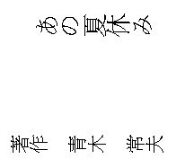
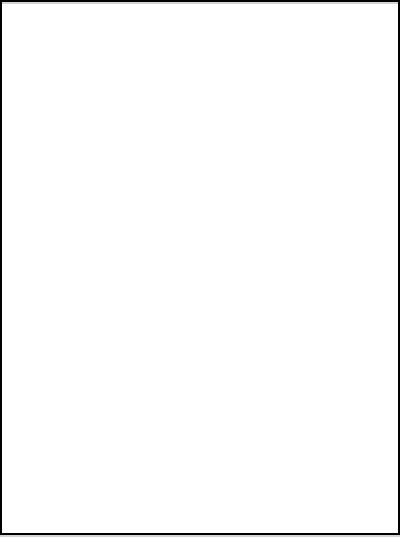
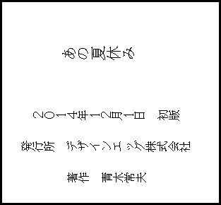

| あの夏休み: 少年にとって一ヶ月という期間が 大人になって一生の価値へ変わる | |
| 青木常夫 | |
| (2014) | |


（ 一九九一年 六月 中学校の教室内 ）
（ ピーンポーンパーンポーン...... ） 国語の授業が終わるチャイムが鳴った。教室で富雄（以下トミー）は窓越しの空を眺めていた。するとそこに仲の良いクラスメイトのショウジが足早にやって来た。
「おいトミー！ 大ニュースが有るんだよ！」ショウジは目を大きく開けて、言いたくて仕方ないといった感じだった。ショウジはいつも大げさに振舞うのを知っていたトミーは期待もせずに聞いた。
「どうしたんだよ......」
「お前の好きなケイコだけどさ......」トミーは猛烈に慌てた。後ろの方の席には当の好きなケイコという女の子が座っているからだ。
「よせよショウちゃん！ 聞こえたらどうするんだ！」ショウジは大して気にする様子も無く言った。
「あー、ごめんごめん」トミーは後ろの方に座っているケイコを見ると、聞かれてない事にホッとしてから、小声で言った。
「......何だよ、ケイコがどうかしたの？」
「それがさ......あいつ今度転校するんだって！」この言葉を聞いてトミーの頭の中は一瞬にして真っ暗になった。
「だ......誰から聞いたの......それ......」ショウジは自信満々の顔で言った。
「ケイコ本人さ」トミーはショックが大きすぎて、頭がうまく回らなくなっていた。トミーは虚ろな目で机を見つめたまま、か細いで言った。
「......いつなの......それ......」
「夏休みが終わってからだって言ってた。 なあ、どうするんだトミー？」
トミーはショックで考えがまとまらずに、何と答えていいか判なかった。
｢......どうって......別に......｣
「お前さ、もう二度と会えないんだぞ！」トミーの心が沈んでいった。
「......うん......」
「一回くらいデートに誘ってみろよ」トミーは下を向いたまま言った。
「でも......俺じゃあ......駄目だよ......だってケイコは太ってる奴は嫌いだって、ケイコの友達のカナが言ってたし......」
「カナの言ってる事は嘘ばっかりじゃないか、だって本人から聞いたわけじゃあ無いんだろ？」
「まあそうだけど、でも駄目に決まってるよ......」ショウジは呆れたように言った。
「そっか、なら仕方ないな」
「おい！ ショウジ！ 早く自分の席に戻れ！」それは担任の教師の声だった。
ショウジは自分の席に着くとしばらくして、トミーの方に振り返った。 トミーは下を見てまったく授業の事を聞いていないようだった。
次の日の朝
またショウジがトミーの席にやって来た。
「おいトミー！ お前に良いニュースがあるんだ！」ショウジの表情は昨日と同様に、瞳を大きく開けながらワクワクしているようだった。 この表情の時は何か言いたい事がある時だ。
「今日は何？」トミーが気怠そうに聞くと、ショウジは続けた。
「それがさケイコの事なんだけど」トミーはショウジの服を引っ張って言った。
「だから何でいつもそんな大きな声で言うんだよ！ 聞こえるだろ！」
「あーごめん、だけど今日はそれ所じゃないんだよ！ お前にとっておきの情報を持ってきてやったんだからな！」その言葉を聴いて、トミーは知りたくてしょうがなかったが、そんな気持ちを押し殺して平静を装って言った。
「本当？」
「もちろん」ショウジは自信満々の様子だった。
「じゃあ何？ 早く言ってよ」ショウジはもったいぶったように言った。
「ケイコの事だけどさ......」トミーはショウジの言葉に全身全霊を傾けて聞いていた。
「で......何なの？」ショウジは嬉しそうに続けた。
「ケイコと付き合える方法があるんだよ！」トミーの心に衝撃が走った！
「......ま......まさか......」そう言いながらトミーの目は爛々と輝いていた。
「お前太ってるから告白できないって言ってたよな？」
「......ああ、そうだよ......」
「それなら大丈夫なんだよ！」トミーはショウジの言葉に再び全神経を集中していた。
「え？ どういう事？」
トミーがそう聞くとショウジは再びもったいぶったように言った。
「聞きたい？」トミーはそう言われて反射的に（別に......）と言うのを押さえて素直に聞いた。
「ああ......言ってくれよ......」ショウジは納得したように言った。
「じゃあ良いこと教えてやるよ！ 今度の夏休みに太ってる子供が、痩せられる所が有るんだよ！」トミーはそれを聞いて興味津々だったが口では違う事を言っていた。
「そんなの聞いた事無いよ」ショウジはキッパリと言った。
「それがあるんだよ！」
「本当なの？」トミーは疑りながら聞くと、ショウジは当然といった感じで続けた。
「本当だよ！」トミーはこの話題に夢中になっていた。
「じゃあ証拠は？」
「ああ、有るさ！」ショウジはそう言うとズポンのポケットから何かを取り出して、トミーの机の上に置いた。トミーはそれを見ると何かのパンフレットのようでそこにはこう書かれていた。
（ この夏でおデブちゃんにさよならしよう！ 楽しい夏合宿♪ ）
トミーはそれを見て納得して言った。
「これなの？」
「うちの兄貴がそこに行くんだよ、だから母さんがお前にもどうかってさ」
「それって......どうやったら行けるの？」トミーが質問するとショウジは何故か偉そうに言った。
「今日うちにこいよ、母さんに頼んでやるから」
「ああ、ちょっと行ってみようかな」トミーはそう言ってみたが実際は、何があろうと行くつもりだった。こうしてトミーは夏休みをこの合宿で過ごす事に決めたのだった。
ジリジリと強烈な日差しが照っている中、男は自分のしている腕時計を見ると午後一時を回ろうとしていた。その男は見るからにたくましく、広い肩幅に身長一八十センチを超える体には強固な筋肉が備わっていた。そして短髪の髪は海兵隊のように頭の側面と後ろを短く刈り上げた髪型で、まるで軍人のような雰囲気を漂わせていた。
その男の名は（ 武藤 強志 ）学生時代のあだ名は（スコット）と呼ばれていていた。これはプロレスラーのスコットノートンからとっていたものだった。武藤はこれを気に入っており今でも周りの人間にはスコットと呼ばせていた。スコットは両手を腰に付けて参加した肥満児達と、その両親たちに挨拶を始めた。
「みなさんおはようございます。今日は暑い中はるばるご苦労様でした。私は今日からお子さん達のトレーナーを勤めさせて頂きます、スコット先生です。今日から一ヶ月間とちょっと、みんなと一緒にスリムな体になる為の楽しい合宿が出来るように、精一杯やらせて頂きます」スコットの声は見た目の通り太く、優しく喋ってはいるが、声の奥には屈強な男の厳しさがにじみ出ていた。
「ここでは集団生活になりますので、みんな先生達の言う事を良く聞いて、自分勝手な行動はせずに皆と足並みを揃えて行動して下さい、そして決められた事ルールは必ず守って下さい。まずこの合宿の内容を皆さんに説明したいと思います」スコットは時折、下を見ては、何やら原稿を読んでいるようだった。
「えー......パンフレットで大体の事は知っておられる事と思いますが、重ねて説明させていただきます。始めに起床の時間ですが、朝の五時になります」この時参加した肥満児達の中から
（エーーッ！？）という不満の声が一斉に上がった。参加した子供の一人がスコットに向かって言った。
「僕そんなに早くは起きれないよー」この時スコットの眼つきが一瞬変わったのを、気が付くものは居なかった。すると他の子供も
「早い！ 早い！」と不満が上がった。スコットが再び穏やかな表情に戻ると、少しなだめるようにまた続けた。
「えーっ、皆さんどうか聞いてください。確かに朝五時というと少し早いと思われるでしょうが、お子さんの貴重な時間ですので一時も無駄にはしたくないというのが、我々日本健康管理肥満児撲滅の会の考え方です。その辺をお子様と保護者の方々にどうかご理解をしていただけなくてはいけない点であります」この説明で親達は納得していたようだが、当の肥満児達はちっとも納得していなかった。まだ少し肥満児達が不満を親にぶつけていたが、スコットは話し始めた。
「えーっ......ご説明に戻らせて頂きますが、五時に起きたら早速、早朝のランニングをしてもらいます」この時もまた肥満児達の
「エーーーッ！！」というさっきより大きな不満の声が上がった。
「皆さん！ 聞いてください。ランニングと聞くと激しい運動をさせるんじゃないかと、保護者の皆様方はご心配になられるかと思いますが、そこはどうかご安心してください。ランニングといっても三十分ほど走るだけの軽い運動ですので、ふくよかなお子さんでも十分こなせる内容になっておりますから。大事なお子さんに無理をさせるような事は決してございません。そしてその後しっかりと栄養の有る朝食を取っていただいて、次にお子様の学校で出題されている、宿題を二時間やってもらいます。スリムになることと同様に、勉強もおろそかに出来ませんからね」この時に保護者の親達は、大きくうなずき、スコットに賛同していた。
「そしてその後は我々、日本健康管理肥満児撲滅の会の保有している長期間の蓄積された肥満データを元に、作成された
（ 肥満改善プログラム二．一 ）という、肥満のメカニズムや生活習慣を体系的に学ぶ
（ 肥満授業 ）というもの二時間を行います」この時は子供達と保護者達も感心して聞いていた。
「そしてお昼にしっかりと栄養のとれたランチを取って頂いて、午後からは一時間半のウォーキングで体を軽く動かします」ウォーキングのフレーズには子供達は不満の声は起きなかった。
「そして、休憩時間を取って頂いてからは、ここはお子様にとって一番楽しみになると思いますが、おやつも毎日ございます」この時は始めて肥満児達から（オーーッ！）という歓声が上がった。
「メニューはケーキやアイスやクッキーなど、お子様が好きなものばかりです。ここで保護者のみな様方は、そんなやり方はでは少し甘いと思われるかもしれませんが、私どもはお子さんに無理をさせず、あくまで楽しみながら健康的に減量するプログラムを実地しております。それは我々、日本健康管理肥満児撲滅の会のスローガンでも有る、安全、安心に楽しんで痩せる事を重点に考えて、万全を尽くしてお子様を預からせて頂いております」保護者の親達はうん、うんとしきりに頷いてスコットの話を聞いていた。
「あまり合宿生活が楽しくて、期間を終えても合宿を続けたいと言うお子様もいらっしゃいますが、ちゃんと保護者様の所にお帰りになってもらいますので、その辺はご安心下さい」この辺りでは少し笑いが起こった。
「そしておやつの後はまた学校の授業を一時間したら、ダイエット体操という、効果的に脂肪燃焼を促し、基礎代謝を高める為の体操を行います。もちろん痩せるだけではなく、ダンスも上達していきますので、お子様の総合的な教育学習的観点を大事に考えて減量プランを考えてあります。 そしてその後は栄養タップリの夕食を取って頂いて、シャワーを浴びて頂きます。 大事なお子様の衛生管理も我々は重要だと捉えているからです」保護者の親達はうん、うん、頷きながら関心して聞いていた。
「そして最後のメニューになりますが（ 瞑想 ）というものを行います」この時は少しざわめいた。
「瞑想と聞いて、皆様は違和感を覚えると思います。何か宗教的な変な事をやらせるんじゃないのかと。もちろん心配の必要はございません。この瞑想とは、お子様達の勉強にも必要な集中力を養い、食べたいという食欲を抑える為にとても効果的なメニューで有るからです」保護者は何だかよく分からなかったが、皆わかったように頷いていた。
「そして少し早い時間かと思われるかもしれませんが、八時に就寝になります」さすがにこの時は「はーやーいーっ！」という肥満児達の不満の声が発せられていた。
「皆さん、聞いてください。 確かに八時に寝るというのは少し早いと思う気持ちも良くわかります。ですがお子様達は慣れない環境にとても疲れています。我々はお子様の疲れを次の日に残さない為に、早い就寝をして頂くのです」子供達は少しは納得したようだった。
「そして今ご説明した内容以外にも、キャンプ体験というものもございます。それはここから六時間程時間ほど歩いたところに有る丘まで、ハイキングに出かけます。そこでバーベキューでランチというものです。それらはきっと皆の楽しい思い出に残るでしょう」これには保護者達は
（へぇーーっ）と驚きながら喜んでいた。
「大体ここまでが合宿でのお子様達のタイムスケジュールになります」保護者と子供達は共に信頼感を抱いたようだった。
「そして皆様が気になっているかと思われます、減量体重のお話をさせて頂こうと思います」肥満児達と保護者は興味を持ってスコットの話を持った。
「去年の合宿に参加してくださったお子さんたちはこの四十五日という期間の中で、平均してなんと十二キロの減量に成功させております」この時は保護者の中から驚きの声が上がった。
「しかしこの合宿の本当の目的は、単に一過性のダイエット等では有りません。お子様達が合宿を終えてお母様の所に戻ってからが我々が施した減量プログラムの、真の成果が問われる時なのです。 それこそが我々の持っている（肥満授業）の力であります。お子様が一人でも食事量をコントロールして、運動量をプランニング出来る考えを養う。そこに我々は最も注力しいてるのであります」保護者はスコットの説得力にただただ、首を縦に振っているだけだった。
「私どもはお子様が家に帰ってからの半年間の体重変化の経過迄を含めて、保護者の皆様にお答えする事になるでしょう。ですからなんら心配の必要はありません。以上でまことに簡単ではありますが、ご挨拶の方を終わらせていただきます。一緒に来ていただいた保護者の方々もここまでで結構ですので、後は我々が大事なお子さんを責任もって、面倒見させていただきますから、どうか大船に乗った気持ちで任して下さい」
ここで肥満児達の保護者がいっせいに先生たちに挨拶して帰って行った。肥満児達は先生の誘導で宿舎に入った。その宿舎は木造の二階建てで壁のあちこちに穴や傷がありかなりくたびれていた。その宿舎は、以前は民宿として使われていたが客足が遠のき、とっくに売り払われていて誰も買い手が着かなかったのを、三年前この日本健康管理肥満児撲滅の会が三十五万円というタダ同然の値段で手に入れた物だった。まず始めに肥満児達に部屋を案内するのは五人いるトレーナーのうちの二人で、一人は二十代後半位の細身の女性で金髪のポニーテールで目鼻立ちがハッキリした白人だった。そしてもう一人はかなり小柄の三十才位の男性だった。肥満児達はこの二人の先生に案内されて、二階までの階段を上っていった。階段を上がりながら金髪女性（以下メアリー）が明るい声で肥満児達に向かって話し掛けた。
「みんな聞いて！ これからみんなが寝泊りする部屋を案内します。まずこれを見て頂戴！」そういってメアリーが指差す先を見ると、階段を上がったすぐの所に、プリントが貼ってあった。
「これがあなた達の部屋割り表です。自分の名前の部屋に入ったら、そこにあるロッカーの中に自分たちの荷物を入れてきて下さい 」メアリーは流暢な日本語で話していた。肥満児たちがろくに返事もないと、メアリーが元気よく言った。
「みんな返事はー！」
「......はーい......」肥満児達がやる気の無い声で言うと、女性の先生は明るく元気な声で言った。
「みんな良いー！ ここでは返事は元気良くする事！ 分かった！？」そう言うと肥満児達は仕方なく元気な声で答えた。
「はーい！」
「そう！ それでいいわ！ じゃあみんな荷物をロッカーに入れたら、先生の説明があるから廊下に出て待って居てね」
「は～い」肥満児達は早速壁に張ってあるプリントを見てみると、部屋に一から九までの番号があって、一部屋辺り平均三、四人が利用する事になっていた。早速肥満児達は自分達の割り当てられた部屋に向かった。肥満児たちは炎天下の中、寮まで四十分も歩かされた為、一人も違わず汗でシャツがびっしょりになっていて、もうすでに歩く気力も無いほど体力を消耗していた。
トミーが部屋の扉を開けてみると、ムワッっとした熱気を感じた。恐る恐る部屋を見ると、真夏の威勢のいい太陽が照らしている外よりも熱く感じた。
「うわっ！ 何この熱さ！ この部屋エアコン無いのかな？」トミーがそう言うと、他の肥満児達と一緒に部屋の隅から隅まで見渡したが、エアコンどころか扇風機一つ見当たらなかった。
「......無いみたい......」仕方なく窓を開けると、少しは風が入ってきた。熱中症になりかけている肥満児達は、とりあえず横になって休息していた。すると一人の肥満児が話し始めた。
「はぁ～っ、僕もう疲れて一歩も歩けないよ」別の肥満児も答えた。
「僕もだよ、それにこの部屋熱くて死にそうだよ」肥満児の言っていたのは大げさではなかった。 真夏の合宿の為、部屋の温度は三十度を軽く超えて外気温と同じだった。だが実際には部屋に肥満体の子供が四人も入れられているから、外気温よりも二、三度は高くなり、巨体の肥満児達から出る大量の汗で部屋の中は、天然のサウナとなっていた。肥肥満児達は荷物をロッカーに入れ終わると、それぞれ廊下に向かっていった。そこにはさっきの小柄の男性トレーナーとメアリーが待っていた。そして全員が廊下に集まるのを確認してメアリーが話しだした。
「じゃあみんなこれから教室に行って、肥満と生活習慣についての授業を行います。教室に入ったら自分の名前が書いてある机に座ってください」肥満児達が教室に入って、机に張ってある自分の名前を探すと、名前の下に身長と体重と体脂肪率が明確に書いてあった。肥満児達は少し驚いて机に座るとメアリーが張りのある厳しい声で話し始めた。
「これからここ（ 財団法人、日本健康管理肥満児撲滅の会 ）略して
日僕会（ ヒボクカイ ）といいます。それの特別授業の説明をします。この授業は学校やテレビでは決して知る事が出来ない、肥満改善プログラム二．一といわれる日僕会が研究に研究を重ねて作った。ダイエットのテキストからなります。これは肥満の歴史やメカニズム、傾向と対策、健康面の危険性や社会の肥満差別の現状や、それの精神的防御策、などなど世界的に見ても最先端の肥満科学が詰まっています」肥満児達はなにやら仰々しい説明を聞いて、自分達が凄いところに来たという実感と、肥満がただ単に横になってお菓子やご飯を食べ過ぎているからだと思っていたのが、どうやら違うみたいだと感じていた。
「まず初めに言っておく事は、皆のように肥満になったのには、必ず理由が有るという事。そしてそれは必ずしも君達が悪いわけでは無いという事です」肥満児達はこの言葉に救われた気持ちになった。今までここに居る肥満児達は、学校に行けば太っている事で
（ ブタまん ）や（ デブちん ）などの容姿にちなんだあだ名で呼ばれて、五十メートル走では普通に走っているだけで、皆からは笑われた。買い物に行けば回りの客からは珍しい生き物でも見るかのように指を指されて、レジに行けばカゴの中に肉が入っているだけで、店員に非難の目で見られた。外に出かければ通りすがりの知らないおじさんに、こう言われた。
「おめぇ肉ばっか食ってんだろう！？」知らないおばさんにはこう言われた。
「寝てばっかりいないで運動するんだよ！」等と実際の生活習慣を見てもいないのに注意されたりした。そんな事が繰り返されているので、肥満児達は自分でも気づかぬうちに、太っている事に罪悪感を抱くようになっていった。その肥満児達に対して自分は悪くないという言葉は肥満児達を罪の鎖から解放してくれるようだった。メアリーは続けた。
「太る事には大きく分けて三つの問題が有ると考えます。まず生活習慣、それに体質、そして満腹神経の障害。 これをちゃんと理解しなければいけません。たとえば生活習慣で肥満になっている場合は太りにくい体質改善をしても、生活習慣を変えなければ効果的に痩せる事は出来ません。 自分がどの理由で肥満になったのかを知る事が肥満を改善する近道となります」肥満児達はこの話を聞いて痩せる事に自信を持ち始めた。
「それではまず皆の肥満習慣のチェックをします、これからいくつかの項目をを言いますから、自分に当てはまる項目があれば、丸を付けてください」メアリーは一つずつ読み上げた。
一 「毎日お菓子を食べている」肥満児達は一斉に丸を付けた。
二 「水やお茶より、甘いジュースを飲んでいる」再び肥満児達は一斉に丸を付けた。
三 「食事はお腹が一杯になるまで食べている」今度も皆一斉に丸を付けた。
四 「家ではいつも椅子に座るよりも横になっている」また皆一斉に丸を付けた。肥満児達はチェックシートに記入しながら、これは全部丸を付けさせるように造っているのかと感じ始めた。
五 「ジョギングやサッカーなどの体を動かすスポーツよりも家でテレビやゲームをやる事が多い」肥満児達はこんな当たり前の事を何で確認する必要があるのかと疑問に思っていた。
六 「食事は焼き魚や煮物などの和食よりも、焼肉やピザなどの洋食のほうが好きだ」このときは二人を覗いては全員後者に丸を付けた。
七 「寝る前に何か食べないと眠れない」このときは三人を除いては全員が丸を付けた。
八 「ラーメンやうどん等の、麺類を食べた後の残ったスープを全部飲む」五人を除いて全員が丸を付けた。
九 「お腹が減っていなくても何か食べてしまう事がある」一人を覗いて全員が丸を付けた。
十 「キャベツやニンジンやほうれん草などの野菜は嫌いだ」二人を覗いて全員が丸を付けた。
「はい、じゃあ今、記入した丸がいくつ有るか、数えてみて」肥満児達は数えてみたが圧倒的に丸の方が多 く× の方を数えたほうが早かった。
「それでは今から数に応じて肥満度を言います。丸の数が一個～二個の人、居たら手を上げて！」メアリーはそういって肥満児達を見回したが、手を上げる子は独りも居なかった。
「居ないみたいね、ちなみにこれに該当する人は肥満の心配はありません。では三個～四個の人は居る？」再び誰も居なかった。
「これに該当する人は肥満の心配は少ないです。生活習慣に肥満になりやすい傾向も有りますが、肥満は一時的なもので標準に近い体系に戻る可能性が高いです。それでは丸が五個～六個の人居る？」二人の肥満児が手を上げた。
「やっと該当者が居たようね、あなた達は肥満の傾向があります。生活習慣には肥満傾向が見られ、満腹神経も正常値よりも少し乖離している可能性があります。これから先に何らかのダイエットや生活習慣を見直す必要があります。それじゃあ七個から八個の人は？」七人ほど手を上げた。
「あなた達は肥満を作る肥満傾向を持っています。肥満傾向は深刻で問題はいくつも有ります。 生活習慣をすぐに改善しなければ行けません。満腹神経も正常値よりも乖離している可能性が高いです。 このままの生活を続けると将来的に健康を害する肥満体になるので、近いうちに手を打たなければなりません。このままだと生活習慣病になる可能性が高いので寿命は平均の八十パーセントほどです」それを聞いた七人は一気に憂鬱な気分になった。
「はい、じゃあ丸が九個～十個だった人は？」残りの全員が手をあげた。パーフェクトの彼らはこの中では最も多数派で有った為、少し誇らしげだった。
「あなた達は今、重度の肥満傾向で生活習慣と満腹神経に問題があります。今すぐに改善しないと近い将来には、糖尿病や高血圧、高脂血症、動脈硬化等の様々な生活習慣病を併発する事になります。その為に平均の七十パーセントの寿命しかありません。しかもその前に内臓や血管の病気で、闘病生活を強いられるか若いうちに最悪死に至る可能性があります」
さっきまで間違った優越感を抱いていた肥満児達だが、診断結果が余りに悲惨な内容だったので一気にどん底の気分になって下を向いていた。するとメアリーは明るい声で言った。
「今の診断結果は大まかなものです。だから後でみんなには今記入した紙を回収して肥満の分類を詳しく診断します。そして皆には希望があります！ それはあなた達がここに居るという事実です。 肥満で悩む子供は今世界では一億人を超えるというデータがあります。ですが皆さんは世界で最も進んだ肥満改善プログラム二、一を受けられるのですから、このプログラムを受けて痩せなかった肥満児は居ません。だから皆は安心して肥満と戦ってください！ さあ皆言うのよ！
（ 肥満に勝つぞ！ ）
メアリーはそういって右手にこぶしを作って高く上げた。白人のメアリーが大きなジェスチャーをすると、様になっていた、肥満児達もつられて言った。
「......肥満に勝つぞ......」
「みんな！ もっと大きな声で言うのよ！ そんな事では痩せる事なんて出来ないわよ！ これはあなた達の戦いのなのよ！」肥満児達はそう言われてやる気になってきた。メアリーが再び言った。
「さあみんな大きな声で言うのよ！ 肥満に勝つぞー！」肥満児達の大きな声が返ってきた。
「肥満に勝つぞ！！」 メアリーは満足そうに言った。
「そうそう、それでいいのよ」
（ ......ガラガラ...... ）
「メアリー先生、計量の準備ができました」ドアを開けてそう言ったのは、小柄の男性トレーナーの青木で、その手にはボードとペンを持っていた。
「わかりました、それでは今から皆の体重を計るからから、呼ばれたら来てください。じゃあ初めはタケル！」タケルは呼ばれて廊下に出て、体重計のところまで来ると、やたらにでかい鉄製の体重計の前に立った。よく見るとメーターの数字の横に、各年齢の平均体重のゲージが表示されていた。恐る恐る乗った体重計の針は四十キロを振り切って止まった。
「四十九、二キロ」メアリーが体重を読み上げると、トレーナーの青木がそれを用紙に記入していた。
「次は富雄！」トミーはゴツイ体重計まで行くと、ゆっくりと乗った。足の裏がヒンヤリして気持ちよかった。メーターの針が勢いよく回って五十キロを超えるのを見て、トミーはメーターの針が少しでも戻るように、念力を使うように強く念じていた。無論そんな事をしても針は正確な所で止まった。
「七十一．三キロ」メアリーが読上げて、青木が記入していた。これは流れ作業のようにテキパキと行われていた。トミーがゲージの所を見ると自分の体重のゲージは二十代男性の平均体重の六十七キロを超えていた。トミーはトレーナーの青木に聞いてみた。
「あの〜これって僕の体重は大人よりも重いっていう事ですか？」メアリーはすぐに答えた。
「そうよ、まあこれは悪魔で目安だから、身長や体系でも変わってくるし、このくらいならすぐに痩せられるわ」
「はぁ......そうですかねぇ......」
「富雄そんなに心配いらないよ」そう言ったのは青木だった。
「ここには百キロを超えている子や、大人二人分の体重の子なんかが、沢山来るんだから」それを聞いてトミーは少しはホッとしたが、それでも体重だけは大人と一緒だと思うと、複雑な気分だった。
「次はニシオ！」参加者の中でも一、二を争う巨漢のニシオは呼ばれてゆっくりと体重計まで歩いてくると、青木とメアリーの目が変わった。
ニシオは黒縁の分厚いレンズの丸眼鏡をかけていて、巨漢の体の割に妙にオドオドしていた。のっそりと歩きながらニシオが体重計の前に来ると、メアリーと青木の二人のトレーナーは注目した。ニシオが体重計に片足を乗せただけで、メーターの針は六十キロを軽く振り切った。
二人のトレーナーはメーターの針を食い入るように見ている。ニシオはゆっくりと体重計の上に乗ると、鉄が（ギィッ）きしむ音を発して、メーターがピタッと止まった。
「ワオーッ！」メアリーが英語を発するとニシオは下を見て、うつむいていた。
トレーナーの青木はニシオの顔を見てから言った。
「ちょっとメアリー先生！」メアリーは気まずそうに咳払いをすると言った。
「ゴホン......。 百一、二キロ！」体重を読み上げるメアリーの声は興奮して何やら嬉しそうだった。ニシオは恥ずかしそうに言った。
「あの～やっぱり僕って一番太ってるのかな？」トレーナーの青木は優しく言った。
「違うと思うよ、多分ヒロ君が一番じゃないかな、でも大丈夫。必ず痩せられるから」ニシオが教室に戻るのを見てメアリーが言った。
「あの子は太りすぎね、トレーナーとしてもやりがいがあるわ」メアリーの目は爛々として不思議と楽しそうだった。
「まぁ......そうですね......」青木には何のやりがいがあるのか理解できないようだった。
「次テルオ！」色白でおかっぱ頭のテルオは、参加者の中では肥満度は平均といった感じだった。 テルオは体重計に乗った。
「七十七、七キロ！」メアリーは言った後、目を丸くして言った。
「ワオ！ ラッキーボーイ！ 」青木は笑顔になった。
「君はとてもついているみたいだ。きっといい合宿になるよ」テルオは訳もわからずに教室に戻った。
「次ヒロ！」ヒロは呼ばれて立ち上がっただけで、周りの肥満児たちの視線が集中した。その視線は自分よりも遥かに太りすぎたという哀れみと、合宿一の巨漢という間違った羨望が混ざったような、不思議なものだった。
ヒロは体重計の前に来ると、トレーナーの二人に緊張が走った。片足を乗せた瞬間
（ ギシッ！！ ）っと一際大きなきしみ音が発生すると、メーターの針は一気に七十キロ付近まで達した！ 流石のトレーナー二人も目を丸くした。ゆっくりともう片方の足を体重計に乗せると再び（ ギィィッ！！ ） っと鉄製の体重計の悲鳴のような音が聞こえた。
「ギネスが出たわ！」メアリーがそう言うと、青木は咳払いをした。
「......ゴ、ゴホン......」
「......百......三十三点......三キロ......」そう言うメアリーの声は興奮を隠せないようだった。こうして肥満児全員の体重を測定していった。測定が終わるとメアリーが言った。
「はい、それでは先生たちはみんなの夕食の準備をするから、それまで部屋で休んでなさい」
肥満児達は自分の割り当てられた部屋に戻って、夕食までの間休んでいた。
「やっぱりここ凄い暑いね」トミーがそう言うと同じ部屋のニシオが言った。
「こんな暑かったら休憩なんか出来ないよ」
「もしかしたら冷房システムが有るかもしれない、先生に聞いてみようか？」そう言ったのは同じく相部屋のタケルだった。
「そうだね、こんな暑い中過ごせる分けないもんね」トミーはそう言うと廊下に出て下に居る先生に聞く事にした。下に先ほどスピーチしていたスコットが居たのでトミーは聞いてみた。
「あのーすいません。 僕たちの居る部屋に何か冷房は有りますか？」
「冷房？」スコットの表情が一瞬険しくなったかと思うす直ぐに柔らかい表情になって言った。
「あーもちろん有るさ」トミーはそれを聞いてホッとした。
「天然の冷房がな」トミーは聞き慣れない言葉に戸惑って聞いた。
「天然の冷房ってどう使うんですか？」
「なあに簡単さ、部屋に窓が有るだろ？」
「はい」トミーは必至に覚えようと聞いていた。
「そいつを全開にするんだ」
「はい」
「簡単だろ？」そういうスコットは何故か嬉しそうだった。 トミーはまさかと思い確認してみた。
「それだけですか？」
「ああ。 とても優れた冷房システムだよなぁ、窓を開ける事によって外気を取り込み室内の熱気を外に排出する。これをここでは二十四時間換気設備と呼んでいる」トミーはこのふざけた話を堂々としているスコット先生に腹が立ってきた。
「今窓を開けても、凄く暑いんですけど......」スコットの顔が険しくなると言った。
「そいつは気のせいだ。今良い事を教えてやる！ 心頭滅却すれば火もまた涼し、って言葉だ。暑いとか寒いなんて言うのは気持ちが集中してない証拠だ！」トミーは精神力が足らないと逆に起こられたような気持ちになった。
「はい......」トミーは仕方なく部屋に戻ると今の話を皆に説明した。
「えぇーっ！ 何にも無いの？」ニシオは信じられないと言った様子だった。タケルは言った。
「二十四時間換気システムか、ものは言いようだね」 肥満児達は熱さの中で十分ほど苦しんでいると、誰かが階段を上がる音が聞こえた。
（......ドン......ドン......ドン......）足音がトミーの部屋の前で止まった。
次の瞬間勢いよくドアが開いた。
（ ガチャッ...... ）
「おい！ お前たち飯が出来たぞー！」そう言ってドアを開けたのはさっきのスコットだった。 だがそのイメージはスピーチの時の丁寧な表情と一変して、厳しくなっていた。そしてスコットは部屋で横になりながら話しいてる肥満児達の様子を見ていきなり怒声をあげた。
「お前ら！ 何横になってるんだ！ 誰が横になって良いと言った！」肥満児達は急に怒鳴られた事で、部屋で勝手に横になる事が大罪であるのを悟った。
「さっさと立たんか！」肥満児達は怖くてすぐに立ち上がった。スコットは眉を吊り上げて言った。
「先生たちが一生懸命お前たちの為に夕食を作ってるって言うのに、だからお前たちはそういう豚になるんだ！ 早く立って一階まで走って来い！」肥満児達は恐怖の余り声も出せずにいると、再びスコットの怒号が響いた。
「返事をしろ！！」肥満児たちはスコットの剣幕に直ぐさま答えた。
「は、はい......」 するとスコットは颯爽と次の部屋のドアを開けに行った。
（ ガチャッ...... ）
「よし！ お前達はちゃんとしているな！」スコットの怒鳴り声を聞いていた他の部屋は、すでに対策をしていたようだった。肥満児達は一応に驚いているようだった。さっきはあんなに丁寧な挨拶をしていたのに、肥満児達の保護者が居なくなると、子供を豚呼ばわりする本性を知ってしまったからだ。それでも自分たちが失礼な事をして怒らせてしまったからなんじゃないかと考える者も居て、小走りで一階に向かった。
肥満児達が一階に下りると食堂が在った。入ってみると大きな木製のテーブルの横に、トレーナー達が待っていて、テーブルには何やら食事の用意がまだ終わっていないようだった。そこにさっきの金髪の女性の先生が明るい口調で言った。
「さあみんな、何処でも良いから席に着いて！」肥満児達は席に座ると、みんな困惑した様子だった。それはおかずの準備が出来ていないのに、なんで先生達は用意をしないで突っ立てるんだろうという疑問だった。するとスコットが肥満児達全員を一階に追い立て終わってやって来た。
「よーし、みんな集まったな。それじゃあ合宿最初の食事だ！ 先生達がお前らの為に一生懸命作ったご飯だ！ みんな先生に感謝して、残さず食べるように！ それじゃあいただきまーす！」
この言葉に肥満児達は耳を疑った。目の前にあるのはパサパサの古いタイ米のご飯が乗っている皿と、もう一つの皿にはニボシが四匹有るだけだった。スコット先生が言った〟一生懸命作ったご飯〟と言うのは食事のことを言っているのではなくて、ただ純粋にご飯の事の言った事が分かって、肥満児達は唖然としていた。すると口を開けて愕然としている肥満児達にスコットが言った。
「おい！ お前ら！ 何ボーっとしているんだ！ ちゃんといただきますと言え！ 言わないと飯は食わせんぞ！」肥満児達はこの奇抜なメニューとスコットの怖さでやりきれない思いの中、力なく言った。
「......いただきまーす......」肥満児達は唯一のおかずである煮干しを口に入れると、パサパサに乾いた煮干しの味が口に広がった。そのあまりの高尚な味に、これなら犬用のビーフジャーキーだったらどんなに良かったろうかと思った。
あっという間に平らげると、大食漢の肥満児達にとっては腹の足しにもならなかった。そのときスコットが言った。
「皆いいか！ 六時からシャワーの時間だから着替えを持って一階のシャワー室に来るんだ」するとスコットが声を荒げた。
「返事をせんか！ おまえら！」肥満児達は慌てて言った。
「は、はい！」ようやく肥満児達も、返事をしないと怒鳴られる事を学んだ。肥満児達は食事を終わらせて部屋で休んでいると、タケルが言った。
「そろそろ六時になるから一階に言った方が良いよ」トミーが時計を見ると確かに六時に後二、三分でなる所だった。
「あ！ 本当だ！ 行こう」部屋の時計を見ると六時になるところだった。肥満児達が一階のシャワー室に行ってみるとスコットが仁王立ちして待っていた。何故か首にストップウォッチと笛をぶら下げていた。
「おい！ 遅いぞお前ら！ 六時と言ったろ！」肥満児達が時計を見ると六時三分前だった。
「六時と言ったら五分前には集まるのが常識だぞ！」肥満児達はスコットの勝手なこだわりに驚いた。
「お前らよく聞け！ ここでは集団生活の規律がある！ 決められた時間通り来れない奴が居ると、全員が迷惑するんだぞ！ いいか！ こういうときはちゃんと謝るのがここの決まりだ！ みんな一斉に言うんだ！ スコット先生ごめんなさい！ はい！」肥満児達は仕方なく言った。
「ス、スコット先生......ごめんなさい......」
「おい！ 何だその言い方は！ もっとちゃんと感情を込めて、大きな声で言うんだ！」肥満児達の言いたくも無い言葉を嫌々言ったのが、スコットは察知したようだった。
「今度やる気のない声で言ったら、これを百回言わせるぞ！」この言葉を聞いて肥満児たちに何かのスイッチが入った様で、さっきとは打って変わって大きな怒鳴り声にも近い声量で言った。
「スコット先生ごめんなさい！」スコットは顔をゆっくりしたに下げて納得したような様子だった。
「それではシャワーの利用しかたを説明する。まずシャワーは一班から順番に使う。シャワー室の中には丁度四つシャワーが有るから、班の人間全員が同時に使う事が出来る。シャワー時間は各班三分だ！ 先生が笛を吹くから、笛が鳴ったらすぐにシャワー室に入って、もう一度笛が鳴ったらすぐにシャワー室から出るんだ。そして再び笛が鳴ったら次は二班がすぐにシャワー室を使う。 時間が短いから急いで体と頭を洗うんだぞ」肥満児達は今の説明を聞いてどうしても刑務所のシャワーシーンを連想せずには居られなかった。どうして自分達がこんな酷い待遇を受けなければいけないのか困惑していると、スコットの笛が鳴った。
（ ピーーーッ！ ）いきなりの笛で肥満児達はどうしていいのか分からずに、辺りをキョロキョロして居るとスコットが言った。
「さあもう始まっているぞ！」一班の肥満児達は話し始めた。
「一班って、ぼ、僕たちの事だよ！」そう言ったのはタケルだった。そう言われてトミーとニシオは慌てて服を脱ぎだした。トミー達はは急に恥ずかしくなった。それはこれまで人前で裸になることは初めての事だったからだ。着替えるのを躊躇しているとスコットの声が響いた。
「後二分だぞ！」トミー達は恥ずかしさを我慢して裸になって脱いだ服を棚に入れると、急いでシャワー室に入った。シャワー室に入るとシャワーの前にノブが有った。 回してみると水が勢いよく肥満児達の体にかかってきた。
「うわーっ！ 冷たい！」トミー達はお湯が出そうなノブが無いかと探してみたがそれらしいものはどこにも見当たらなかった。仕方なくタケルがスコットに聞いてみた。
「あのー、お湯は出ないんですか？」返事はすぐに返ってきた。
「馬鹿もの！ 贅沢な事言うな！ 水だけでもありがたいと思え！」
厳しい返答にトミー達はショックを受けた。トミー達がシャワーを浴びていると洗剤が無い事に気づいた。またスコットに聞こうかとも思ったが、また怒鳴られると思い自分達で探す事にした。
「ねえそっちに洗剤無い？」最初に聞いたのはトミーだった。タケルが答えた。
「こっちは無い！ そっちは？」今度はニシオが言った。
「こっちも無いよ！」その時トミーが何かを見つけた。
「あっ！ そこに四個石鹸が有るよ！」
「あっ本当だ！」タケルの嬉しそうな声が聞こえた。トミー達は一人一つずつ石鹸を分けると、それで泡立てて体を洗っていった。トミーは体を洗い終わると頭を洗おうとしたが、シャンプーらしきものがどこにも見当たらなかった。トミーは再び皆に声を掛け合った。
「ねえ、どこかにシャンプー無い？」再びタケルとニシオは辺りを探し出した。
「こっちは無い！」タケルが言うと、ニシオも答えた。
「こっちも無い！」トミーも辺りを注意して探した。
「う〜ん......無い......」トミー達は石鹸しか無い事がわかって、仕方なく体に付いている泡で頭も一緒に洗う事にした。今までシャンプーでしか頭を洗った事が無い肥満児達にとって、石鹸を使って時間制限付きで我武者羅に頭を洗っている自分が一層惨めな気持ちになった。
（ ピーーーッ！！ ）その時スコットの笛が聞こえた。シャワーを浴びている肥満児達が慌てて体の泡を落としていると、スコットの怒号が響いた。
「おい！ もう時間だぞ！ 笛が聞こえなかったのか！ 今すぐ出てこないとそのでかいケツを引っ叩くぞ！」トミー達は体に泡を付けたまま逃げる様にシャワー室から出てきた。
（ ピーーッ！！ ）すると再びスコットの警笛が鳴って二班の肥満児達は急いでシャワー室に駆け込んで行った。
「おい一班！ 今度から俺が笛を吹いたらすぐにシャワー室から出て来るんだ！ ちょっとでも遅れたら承知せんぞ！」
「ご、ごめんなさい」トミー達はスコットの怒りの表情に身が縮む思いだった。
「よし！ じゃあそこの棚にタオルと着替えがあるから、体を拭いたら着替えて待っていろ！」
「はい！」一班の肥満児達はスコットに怯えながら返事をすると、指示された棚からタオルを取ってみたが、そのタオルはどう見てもフェイスタオル程の大きさしかなく、肥満児の大きな体を拭くには小さすぎた。小さなタオルは体を拭き終わって髪を拭く前にもうびっしょりに濡れていたが、そんな不満がスコットに言えるはずも無かった。一班の肥満児達は着替え終わって待っていると、再びスコットの笛が鳴った。
（ ピーーッ！！ ）二班の肥満児達が急いでシャワーから出てきた。やはり皆体に泡を付けたままで、中には頭にも泡がどっさり付いている者も居たが、そのままタオルで泡を拭く事しか許されなかった。 直ぐさま三班の肥満児達がシャワー質に入って行った。肥満児達はつくづくシャワーをゆっくり浴びる事は贅沢な事だと思い知った。三班の後は四班がシャワー室に入って行って、五班、六班とスコットの笛の音で工場の流れ作業のように全十二班、四十五人の肥満児達のシャワーが終わると、スコットが腕を組んで言った。
「今日は皆少しもたついていたが、明日からはもっと早く入浴を済ませるんだ！ いいな！」
「はい！！」肥満児達は体と頭に付いた石鹸を流す事が出来ずに、情けない気持ちと共に、この合宿の厳しさを痛感した。
スコットは肥満児たちを見回して言った。
「......よし、それではこれから一階の広場に移動する」スコットはそう言って肥満児達を一階まで先導すると言った。
「普段はこの時間は瞑想の時間だが、今日は合宿初日だから、明日の朝の流れや、整列、そして就寝のルールの説明を行う。みんな忘れずにしっかりと聞いておくように」肥満児達は瞑想の時間という言葉が何をするのかと気になったが、スコットの話に集中した。
「それでは早速これから整列を教える！ まず一班から順番に右側に前から並ぶんだ。そして一班の後ろは二班だ」一班のトミー達が右に並び始めた。
「班の背が低い順で並ぶんだ！ そして一列に二班ずつ並んだら次は三班が一班の隣に来て並べ！」肥満児達は言われた通りの隊列になった。
「おい！ ボーッと突っ立ているんじゃない！ 手は後ろに組むんだ！」肥満児達は慌てて手を後ろに組んだ。
「それじゃ近すぎる！ いいか、後ろの奴は手を前に出して、前の奴に当たらない位に離れるんだ！」肥満児達は言われた通り両手を前に出して、位置を合わしていった。
「横の間隔はお互い肘を横に延ばして当たらない距離だ！」再びスコットの指示に肥満児達は位置を調整していった。
「お前ら位置が合ってないぞ！ 隣の奴に位置をぴったり合わせるんだ！ いいか！ トミーの位置が基本だぞ！ ここに全員合わせるんだ」肥満児達は隣同士をよくみて微妙に位置を合わしていった。
スコットは肥満児達をよく見回すと言った。
「うん、宜しい。今の位置をよく覚えておくんだ！ そして整列と言ったらすぐに今の位置に並べるようにするんだ！」
「はい！」
「そして今度は（ばらけ）という言うからそしたら隊列を解除して、バラバラにれ！ ではいくぞ！」スコットは少し間を置くと言った。
「散けー！！」肥満児達はどうバラバラになれば良いのかわからずにキョロキョロしていた。するとスコットが両手を左右に振りながら言った。
「動け！ 動け！ 全員どこでも良いから動くんだ！」肥満児達は急いで適当な所に移動した。
「よし！」スコットは肥満児達を見回すと言った。
「それでは整列ー！！」再び肥満児達はさっきの位置に移動した。
「整列できていないぞ！ もっと綺麗に隣の奴と位置をあわせろ！」肥満児達は再び隣同士を見て微調整した。スコットは肥満児達を見回して満足そうに言った。
「うん、宜しい」肥満児達はホッとすると、スコットが言った。
「散けー！！」再び肥満児達は急いでバラバラになった。
「整列ーっ！！」またすぐにスコットの指示が有ると肥満児達はまた整列をした。シャワーを浴びたばかりの肥満児達は既に汗だくになっていた。
「散けーっ！！」またすぐにスコットの指示が有ると肥満児達はバラバラになった。
「整列ーーっ！！！」間髪入れずにスコットが指示を出した。
「おい！ ちんたら動くな！ 走れ！」スコットの激に肥満児達は必至に急いで整列した。
「散けーーっ！！！」
「整列ーっ！！！」
「散けーっ！！！」
「整列ーっ！！！」
「散けーっ！！！」
「整列ーーっ！！！」
「散けーーっ！！！」
「整列ーーっ！！！」
「散けーーーっ！！！」
「整列ーーーっ！！！」
「それではこれから就寝と明日のメニューの説明をする」
肥満児達は全身で深呼吸して立っているのもやっとだった。汗でびっしょりになったＴシャツは体に張り付いていた。そしてその目つきは過酷な事やらせたスコットを睨んでいて
（もうこれ以上やらせるな）という無言の怒りを表していた。
「皆良く聞いておくように」
「はい！」
「明日は必ず朝五時に起きるように、日僕会の朝は早い。まず起きたら手洗い場に行って歯を磨いて、顔を洗う。そしてトイレもこの時には済ましておくように。そして五時三十分迄にどんな事が有ろうと外の広場に集まるるんだ。広場には整列せずにバラバラに集まる事。 そしてスコット先生が整列と言ってから、今の整列をするように。五時三十分から行う朝礼は一日のメニューの中でも最も大事なものになる。絶対に遅れる事は許されない」
スコットが強い口調になると肥満児達に緊張が走った。
「そして大事な朝礼の後は、日僕会の訓示を皆に言ってもらう。この大事な訓示が終わったら、次のメニューは早朝ランニングだ。これは先生達が交代で担当して行う。これは雨が降ろうが雪が降ろうが毎日やる大切なメニューだ！ そして朝食は七時からだ。その後学校の宿題を八時から十時まで二時間する。その後は肥満授業を十時から十二時までまた二時間行う。その後十二時からランチだ。まあ、それからは明日実際に行動しながら覚えて行けば良い。だから明日の説明はこれまでだ。次にこれから就寝のルールを説明する。なんといっても今日は皆にとっては記念すべき、我が日本健康管理肥満児撲滅の会の合宿初の就寝だ。みんな明日の為にも、ぐっすり眠るんだぞ。ただいくつか注意点があるから、それをこれから説明する。まず就寝時間は夜八時から朝の五時までだ。 その間は部屋から出てはいけない！ それと就寝時間中は話をしてはならない！ これは話し声がうるさくてみんながゆっくり眠れないからだ。 それではみんな寝る前に必ず歯を磨いて、それからトイレに行っておくんだ」
肥満児達はあまりに行動を限定された内容に驚いたが、仕方なく返事をした。
「はい！」肥満児達はやっと合宿のメニューから解放されて安堵感が一気に沸いた。肥満児たちは二階にある自分たちの部屋に戻ると各自の歯磨きセットをもって一階の手洗い場で歯磨きを済ませると再び部屋に戻った。トミーが時計を見ると、時計の針は夜の七時五十分をさしていて、就寝までもう少しだった。トミーは合宿参加者内でも一、二を争う巨漢の持ち主である、トミーのルームメイトのニシオに話しかけた。
「ねえ、ニシオ君も学校でからかわれたりしてる？」ニシオは答えた。
「うん、嫌なやつが何人か居るんだけど、いつも僕に悪口言ったり、蹴ったりするんだ」
トミーは不憫に思った。
「やっぱりそうなんだ......」
「富男君は？」
「トミーで良いよ。学校ではいつもそう呼ばれているから」ニシオは少し嬉しそうな表情になった。
「うん」
「僕も前はよく虐められたんだけど、一度そいつと喧嘩してからは、あんまりからかってこなくなった。まあでもたまにはやってくるけど」
「喧嘩って？」話に入ってきたのはルームメイトのタケルだった。トミーの頭に嫌な記憶が一瞬過り、無意識に眉をしかめて言った。
「そいつと闘ったんだ」タケルは驚いた様子で言った。
「君、凄いね」
「トミーって強いんだね、僕なんか怖くて出来ないよ」そう言ったのはニシオだった。トミーは答えた。
「僕、父さんに言われて空手を始めたんだ、それで父さんに
（ 負けても良いから一度本気で闘って来いって ）言われて、怖かったけどやってみたら、そいつは全然弱かった」タケルとニシオはトミーを見る目が一気に尊敬のまなざしになった。
「どうやったの？」タケルが聞くとトミーは言った。
「僕が下校中に、後ろからそいつがカバンを蹴ってきたから、僕はすぐにそいつの腹に正拳突をしたんだ」
「せいけんづき？ それってどうやるの？」聞いたのはニシオだった。
「空手でするパンチの事。こうやるんだ」トミーはそう言いながら正拳突を見せた。
「うぉーっすげーっ」ニシオとタケルは初めて見る正拳突に驚いていた。
「ねえ、僕にも教えて！」タケルが必至そうに言うとニシオも言った。
「ぼ......僕にも教えて！」トミーは優越感を味わいながら言った。
「......良いよ......」タケルとニシオは両手を上げて喜んでいた。
「ヨッシャー！」
「イェーイ！」
「でも正拳突は練習しないとちゃんと出来るようにはならないよ」
「どのくらいかかる」そう聞いたのはタケルだった。
「う〜ん......どうだろう......大体三ヶ月くらいかな」タケルとニシオはガックリきているようだった。
「そんなにかかるの？」タケルが残念そうに言うとトミーが答えた。
「うん。僕もそれくらいかかったから」
「それじゃあ合宿が終わっちゃうね......」そう言ったのはニシオだった。
「僕がやり方を教えるから、二人とも家に帰っても練習を続ければいいじゃん」
「そっか」タケルは安心したような表情になった。
「じゃあまず構えはこう」トミーは構えてみせるとタケルとニシオはすぐに立ち上がって同じ構えをした。ニシオの構えは太っているせいか、別の構えのよう見えた。
「ニシオ君、ちょっと違う、このポーズだよ」トミーに言われてニシオはトミーの手足の位置を見て、自分の手足の位置を修正してみた。
「う〜ん何か違うんだよな〜......。まあいいか......。じゃあ次に右手を前に出すのと一緒に左手を後ろに引いて」トミーはそう言って再び正拳突きを見せると、タケルとニシオも真似してみた。
二人の正拳突きは遅くて、トミーに比べると誰かに小銭を上げているような仕草にしか見えなかった。
「二人とももっと早く、こう！」
（シュッ！）二人は一生懸命トミーを真似て練習した。
「こう？」
「ニシオ君もっとまっすぐ腕を延ばして」
「こうかい？」
「違うよ腕を曲げないで延ばさないと」
「僕、これでも真っ直ぐ延ばしているよ」ニシオの腕は贅肉がタップリ付いているせいで、腕を延ばしても直線には鳴らなかった。
「そっか......じゃあいいや、続けていこう」
「えい！」トミーは二人に真剣に教えた。
「えい！」
「えい！」二人とも正拳突きを習得しようと必至に練習していた時だった。
「この野郎！！ 誰だ！ 騒いでいるのは！」
（ ガラガラ！ ）その時いつの間にかスコットが部屋に現れると、トミー達は正拳突きの構えをしていた。スコットの迫力と驚きで三人の体がカチカチに固まってしまった。
「おいそれは空手の練習か？」スコットの質問にトミーは恐ろしさの中で、何とか声を絞り出した。
「......は......はい......」
「そうか、それはとても良い事じゃないか、だが他の皆に迷惑だから自由時間にでもしろ」
スコットはそう言うとすんなりと帰って行った。三人は大きく開いた目でお互いに顔を見合わせると、次の瞬間部屋の明かりが消えた。
「あ、これ自動的に消えるんだ」タケルがそう言うと、ニシオが言った。
「僕、真っ暗は駄目なんだけどな......」トミーはベッドに入ると他の二人も直ぐにベッドに横になった。
「怖かったね......」そう言ったのはニシオだった。トミーが答えた。
「......うん......」タケルが不思議そうに言った。
「そこに居たのなんて全然気がつかなかったね......」トミーが答えた。
「気を付けないとね......」
「ねえトミー、またせいけんづき教えて」
「うん、良いよ」
（ 合宿二日目 ）
次の日の早朝、空が少し明るくなり始めた時、肥満児達が昨日の疲れから熟睡している二階で、ものすごい大音量でＧ・ビゼーの（カルメン）が鳴り響いた。
（ チャッチャカ♫ チャカチャカ♫ チャッチャカ♫ チャカチャカ♫
チャッチャカ♫ チャカチャカチャーーン！！ バシーン！！ バシーン！！！ ） 肥満児達はいったい何が起こったのかと目を覚ますと、スコットが何処から持ってきたのかシンバルを曲に合わせて打ち鳴らしていた。
（ チャッチャカ♫ チャカチャカ♫ チャッチャカ♫ チャカチャカ♫ チャッチャカ♫ チャカチャカチャーーン！！ バシーーン！！ バシーーン！！！ ）「おい！ 起きろー 朝礼の時間だー！！」肥満児たちは人生で最悪の目覚めを経験する事が出来たが、喜ぶものは誰も居なかった。それどころか、ニヤツキながら馬鹿でかいシンバルを打ち鳴らしているスコットを、出来る事ならシンバルを引っ手繰って、ぶっ飛ばしてやりたい気持ちでいっぱいだった。
肥満児たちは急いで歯を磨いて顔を洗って、外に集まるとスコットが台座の上で両手を腰につけ立っていた。
「整列っ！」肥満児達に昨日の悪夢が過る中、整列した。
スコットはゆっくりと肥満児達を見回すと話し始めた。
「......うむ、宜しい」さっそくスコットの朝礼が始まった。
「おはよう諸君......今日はこの日本健康管理肥満児撲滅の会の主催する、すばらしい合宿の二日目になる！ お前たちにとって記念すべき日になるはずだ。そして今日から先生達はお前達の親代わりを勤めることになる。それはこの合宿に参加した以上、先生達は責任もってお前たちを多岐に渡って指導する。だから先生の言う事はどんな時も絶対だ！ その事をよく肝に銘じておけ！ それからお前たちが朝起きて一番初めにやらなきゃ行けないのが、この日本健康管理肥満児撲滅の会が提唱する訓辞を言う事だ！ これはこの合宿でも最も大事なメニューの一つだ！ 絶対に遅れる事の無い様に！ もしまだ寝ている子が居たら、みんな起こしてあげてくれ！」
スコットはそういうと一呼吸して肥満児達を見回した。その時スコットは並んでいる肥満児達の中で、となりの子と話している子供を見つけた。
するとスコットの表情は一気に険しくなった。
「オイ聞いているのかお前！？ 人が話している時になんてふざけた奴だ！！」注意された肥満児はびっくりした顔で、恐怖の為何も言えずに居た。スコットは話していた子供を指差すと、険しい表情で言った。
「ちょっとお前！ 名前を言ってみろ！」その肥満児は恐怖で声を発する事もやっとだった。
「メ......メイジ......」
「よしメイジ！ そんなに俺の話が聞きたく無いのか！」その肥満児はスコットの迫力に圧倒されていた。
「......ご......ごめんなさい......」
「それともお前は豚か！」
「......ち......違います......」
「人間なら俺の話がちゃんと聞こえるはずだぞ！ お前は豚だから俺の話が聞こえなかったんだろう！ 違うか！」メイジはスコットが恐ろしくて、涙が溢れて来た。
「......うっ......うっ......ぐずっ......」泣き始めたメイジにスコットは容赦なく言った。
「おいメイジ！ ブーブーって言ってみろ！」メイジはスコットのやろうとしている意図が分からなくて、困惑していた。
「..................」 スコットは一段と大きな声で怒鳴った。
「早く言うんだ！ 言わないと承知しないぞメイジ！」メイジは泣きながらどうする事も出来ず、プライドを投げ捨てた。
「......ブ......ブー......ブー......」スコットはさらに言った。
「おい！ もっと大きな声で言え！ ちゃんとブタらしく感情を込めて、ブヒーブヒーって言ってみろ！」
メイジはスコットが恐ろしくて精一杯感情を込めた。
「ブ......ブヒーッ！ ブヒーッ！」
「もっと続けろ！」
「ブヒーッ！ ブヒーッ！ ブヒーッ！ ブヒーッ！ ブヒーッ！ブヒーッ！ ブヒーッ！ ブヒーッ！ ブヒー！ ブヒーッ！ ブヒーッ！」周りの肥満児達はブタの泣き真似をやり続けさせられているメイジが可哀想に思うのと同時に、こんな恥ずかしい仕打ちをするスコットが恐ろしくなった。
「ほら、やっぱり豚じゃないか」
メイジは泣きべそをかきながらブタの真似をしていた。
「人の話も聞けないこの豚め！ よく聞け！ 今度俺の話が聞けない豚が居たら！ そのなまっ白いケツを棒でひっぱたいて赤くしてやるぞ！」この時にはもうスコットの話を聞かない子供など存在しなかった。それどころかスコットから目を離す者も居なかった。
スコットは続けた。
「そもそもお前らがそんなにもぶくぶく太ったのはなぜだと思う？」ここでスコットは肥満児達に目を回したスコットは列の一番前に立っている子供を指差し言った。
「おい！ そこのお前名前を言ってみろ！」それはトミーだった。
トミーは何か怒られると思い震える声で言った。
「ト......トミーです......」
「おいトミーお前はなぜ自分が太ったと思う？」トミーは首を傾げて困った顔で考えていた。
「......えーと......」スコットは中々答えないトミーに苛立って言った
「早く言ってみろ！」
「わ......分かりません......」スコットはトミーの答えに満足していないようだった。
「分からないか？」
「は......はい......」
「そうか、じゃあトミー、自分の腹の肉を摘んでみろ！」トミーがポカンとしていると、スコットの怒号が響いた。
「聞こえなかったか！」トミーは恐怖で自分の腹の肉を分けも分からず掴んだ。
「よし他のみんなも自分の腹の肉を掴んでみろ！ 早く掴むんだ！！」肥満児たちは一斉に自分の腹の肉を掴んだ。スコットはそれを確認して言った。
「トミーそれは何だ！？」
「え......えーと......」スコットはまた苛立って言った。
「そのお前が掴んでいるのは何だと聞いてるんだっ！！？」
「......ぜ......ぜいにくです......」
「そんな事は分かってる！ いいか他の奴も良く聞け！ 今お前が掴んでいるのは、心の中に有る甘えの塊だ！！ お前たちがそんなに醜い豚になったのは、クソみたいに甘えん坊だからだ！！」
この時肥満児達は来る前に見たパンフレットに載っていた雰囲気と、大分違う事にショックを受け、愕然とした表情をしていた。
そのパンフレットとは日本健康管理肥満児撲滅の会が宣伝用に作っている二ページほどの見開きになっているもので、まず表紙には美人の若いショートカットの女性が太った子供に笑いかけながら手を握って、一緒に散歩している写真があり、ページをめくるとその若い女性と一緒に太った子供がモンブランをおいしそうに食べていた。
そして子供が食べている横にフキダシがあり、そこにはこういう文がある、
（ どうして甘い物を食べているのに痩せられるの？ ）そして若い女性の横にもフキダシがあり、そこにはかわいい丸文字でこうあった
（それは普通のモンブランじゃないのよ、見た目や味は同じだけど、日本健康管理肥満児撲滅の会が作っている、低カロリーモンブランなの。 私達はこういう一見普通の食べ物と変わらないけど、本当は低カロリーで栄養のバランスの取れたおいしい食事をしたり、少し体を動かしたりしてぜんぜん無理しなくても痩せられるんだよ）という文章が書いてあった。
そのパンフレットに写っている若い女性は、今そこそこ人気があるＴＶタレントで、純粋で健康的なイメージを買われ、学校や消防署などの公的機関のイメージアップの為に、不登校やイジメの予防のポスターや、消防官や自衛官の募集のポスターなどにも幅広く登場していた。
スコットは続けた。
「良いか！ 俺はたった今からお前達の親代わりと言ったが一つだけお前らの親と違う点が有る！ それはお前らの親と違ってどんなワガママも許さないと言う点だ！ だからお前達の親と違い朝は八時まで寝かしておかないし、ランニングをしない者には朝飯は食べさせない。三時のおやつはチョコレートとミルクティーの変わりに、まき割りと水汲みだ！！」この時点で参加している肥満児たちは自分がパンフレットに騙された事を確信し、大人の世界の常套手段である表の甘い天使の顔とは裏腹に裏の悪魔の本性があることを始めて知った。
このショックと自分の愚かさに気づいてしまった事で、絶望的な表情に変わっていた。
子供の中にはパンフレットにの載っているあの若い女性、つまりあのクソ女が悪魔のペテン師だという事に、かつて無い憎しみを覚えた者も居た。
スコットは咳払いをして、再び回りを見回した。しばらく肥満児達を一人ひとり見たが今度は私語どころか、よそ見している者も居なかった。
スコッとは続けた。
「よろしい、それでは話が途中になったが、気を取り直して我が日本健康管理肥満児撲滅の会の訓示述べる。まず全員両手を後ろに組んで、私が言ったら大きな声で繰り返すように」
肥満児達に緊張が走った。スコットは一際大きな声で言った。
「肥満は敵だ！！」
「 .................. 」肥満児達は訓示の初めが、自分達を全否定している言葉だった事に面食らって、躊躇してしまった。
するとスコットが再び怒りの声を上げた。
「おい！ 何で言わないんだ！ 俺が言った後に繰り返せと言ったろ！！ いいか忘れるんじゃないぞ！ ここにはお前達の大好きなピザをくれるママも、オモチャを買ってくれるパパも居ないんだぞ！ 先生を怒らせたらどうなるか良く考えてみろ！」
厳しい現実を突きつけられた肥満児達は、急にここが末恐ろしくなってきた。
スコットは険しい表情で言った。
「よしもう一度言うぞ！ 肥満は敵だ！！」肥満児達の大きな声が帰ってきた。
「肥満は敵だ！！」スコットは満足そうにうなずいて続けた。
「肥満は醜い！」肥満児達は再び酷い訓示に躊躇したが、またスコットに怒鳴られると思いすぐさま言った。
「......肥満は醜い！！」スコットは続けた。
「肥満は嫌いだ！」
「......肥満は嫌いだ！！」
「デブは恥ずかしい！」
「......デブは恥ずかしい！！」
「デブでごめんなさい！」
「......デブでごめんなさい！」肥満児達にとって自虐的な内容の訓示が続く中、肥満児たちはとんでもないところに来てしまったと完全に後悔していた。中には悲しくて泣きながら訓示を言っている子も居た。
二分ほどで訓示が終わると、スコットは続けた。
「みんな最初はこれまでとは違った環境に厳しいと思うかもしれないが、これは全てお前たちの為なんだ。だから我慢してこの夏を乗り切るんだ。俺にはお前たちがこの合宿を終えている頃には、すっきりした体系に変わって私に感謝の言葉を言っているのが、目に見えるようだ！」スコットの視線は空を見つめて、表情は清清しくなっていた。それとは裏腹に肥満児たちはどんよりとした表情でうつむいていた。
朝礼が終わって肥満児達に早朝ランニングが待っていた。このランニングは毎日行っていて、トレーナーが日替わりで担当する。初日の今日は私が担当するのが恒例だが、残念な事に私はどうしても都合が合って今日はメアリー先生が担当する。私が教えられないのは誠に残念だが皆にはどうか分かって欲しい、また私の順番が来るまで楽しみに待っていて欲しい」このとき肥満児達は、残念どころかスコットの番は一生来ないことを願っていた。
メアリーは肥満児達に説明していた。
「皆ー！ 山の中を走るから怪我しないように、準備運動を始めます。皆先生たちをよく見てそのとおりにやるのよー」トレーナーと肥満児達が屈伸や背筋を伸ばして準備運動を終えると、もうすでに巨体の肥満児達はこの段階でクタクタになっていた。これから走るなんて当の肥満児達が一番信じられない気持ちだった。そしてメアリーはスタートガンを打ち鳴らした。
（ パァーーン！ ）メアリーは肥満児達が始めてのランニングという事もあって、ローペースで走り出した。肥満児達はその後をのそのそと着いて行った。メアリーのカモシカのように細長い足で軽やかに走る姿は、体育会系出身である事を感じさせた。肥満児達はというと今までろくに走ったことが無い為に、走るフォームは滅茶苦茶でみっともないその姿はまるで、ろくでなしのパンダがスキップしているようだった。
ランニングは一キロ程のコースだった。メアリーの後ろを肥満児達がやっとの思いで着いて行った。だが一分も経たないうちに肥満児達のほとんどは大口を開けて肩で息をしていた。肥満児達はメアリーの予想以上に体力がなかった。
トミーと同じ部屋の一際太っているニシオは辛そうな表情で、今にも倒れそうなほど疲労困憊していた。 トミーは心配になって言った。
「ニシオ大丈夫？」ニシオはただ首を横に振って答えた。肥満児達がメアリーからどんどん遅れていると、メアリーが言った。
「ほら皆―！ ゆっくりでもいいからちゃんと着いてくるのよ！」百メートルを過ぎた頃になると、後ろの肥満児達はもうすでに体力が尽きて、走行不能になりヨロヨロと歩き始めていた。
メアリーは呆れている感情を少しも出さずに言った。
「さあ皆つらいだろうけどがんばって走るのよーー！」程なくしてメアリーは肥満児達のペースに合わせて歩くことを余儀なくされた。
百五十メートルを過ぎた頃になると脱落者が出始めた。肥満児達にとってこのランニングの総距離一キロというのは、果てしない距離に感じられた。
二百メートルを過ぎると脱落者は半分にまで達した。脱落した肥満児達は皆、木に捕まって立ち止まっている。それでも全員が人生での最長距離を更新していた。
メアリーが折り返し地点の五百メートルを過ぎてＵターンしてくると一人も付いてきていない事に気がついた。メアリーは仕方なくコースを戻ってみるとやっと先頭の肥満児が見えた。
それを見たメアリーは落胆の気持ちを隠せなかった。それは先頭の子供から皆全員がのろのろと歩いているか木に捕まって苦しそうに全身で呼吸をしているからだった。メアリーは思った
（......この子達にはランニングはまだ無理ね、ウォーキングから始めないと......）
予定より三十分も過ぎて、全員がのろのろと歩いてゴールを果たした。肥満児達にはフルマラソンに感じるほどの距離だった。
ランニングが終わって全員が広場に集まっていた。汗一つかいていないメアリーに、肥満児達は尊敬の念を頂いていた。メアリーは少し呆れたような表情で言った。
「これじゃあランニングにならないから、みんな早めのウォーキングをがんばるのよ」
「は～い......」肥満児達はランニングから帰ってくると、スコットや他の先生達が椅子に座って待っていた。メアリーが待っている先生たちに向かって言った。
「遅くなってすいません」スコットは穏やかに言った。
「いやぁ、良いんですよメアリー先生。それよりどうでしたか、ランニングのほうは？」
「まだこの子達にはランニングは無理みたいです。ウォーキングから始めた方が良いかとおもいます」スコットは少し考えから言った。
「そうですか、まあ仕方ありませんね。それではもう用意が出来ていますから、食事にしましょう」
「そうですね」そう言ってメアリーは後ろにいる肥満児達にまたいつもの明るい声で言った。
「さあみんなー朝ご飯よー手を洗ってから席についてー」
肥満児達はへとへとになりながらも朝ご飯という言葉の響きに、少し元気を取り戻した。全員が席に着くと目の前にある物は昨日の夕ご飯よりは大分マシな物だった。牛乳が一本と、トーストを縦半分に切ってハムを乗せた物とその隣には、皿の上にブロッコリーとパセリがマヨネーズであえた物が山盛りになっているというメニューだった。
メアリーが周りを見渡して言った。
「みんな席に着いたようね、それじゃあいただきますを言ってから、食事を始めるのよー、はい、頂きまーす！」肥満児達も何とか声を振り絞った。
「いただきまーす」肥満児達は一斉に食べ始めた。メアリーはその早食い競争の様な光景に呆れながら言った。
「みんなー食事はゆっくりよく噛んで食べなさい」だが肥満児達はろくに返事もしないで、口の中いっぱいに食べ物を穂奪っていた。先生達が気がつくと半数の肥満児達が喉を詰まらせて、目を見開いて苦しそうな表情で頬を膨らませている有様だった。それを見た先生たちは子供にもしもの事が有ったら、自分たちの責任になることを恐れて、大慌てで肥満児達一人一人の背中を片っ端から容赦なくぶっ叩いていった。
「ほら！ 駄目じゃない！ ちゃんと噛まないからよ！」
「バシッ！ バシッ！ バシッ！」メアリーは見かけからは想像も付かない力で、肥満児達は背中をしこたま叩かれていった。
あまりの痛みに肥満児達は背中を棒で殴られたと思って後ろを見る子も居た。慌てているため中には喉を詰まらせていない子の背中まで、ぶっ叩いていく始末だった。メアリーは興奮しながら言った。
「だから言ったでしょう！ よく噛んで食べなさいって！」この時ヒロは食道が太い為、幸い喉を詰まらせて無かったが、その見た目のせいで何度も打ったたかれた。
やがて先生達が肥満児達の背中を一通り叩き終わり、さんざん背中をぶっ叩かれた肥満児達は皆一様に背中に手をあてがって、目に涙を浮かべる子や、すでに泣きじゃくっている子など様々だった。
「よっぽど苦しかったのね」
「う......うん......」だが、涙が出るほど苦しかったのは喉を詰まらせた事よりも、本当は背中を加減もせずに何度も打ったたかれたからだという事はいえなかった。メアリーは全員の肥満児達の様子を見て食べ終わったのを確認すると大きな声で言った。
「じゃあ後は先生達が片付けておくから、みんなは部屋に戻ってまず歯を磨いて、それから自由時間です。肥満児達は小走りで階段を上がっていった。トミーが歯を磨いていると、ニシオが話しかけてきた。
「さっきは痛かったね」ニシオはかなりの肥満児で目を開けているのか閉じているのか本人しかわからなかった。
「うん、君も背中をやられた？」
「うん十回くらいね。どうってこと無いよ」トミーは歯を磨き終えて部屋に入るとこの合宿に参加した事を後悔していた。
しばらくして歯を磨き終えたニシオが部屋に入ってきてきた。
「はぁー......お腹空いたなー......」ニシオが独り言を言うと、トミーは言った。
「ねえ、何でこの合宿に来ようと思ったの？」ニシオは答えた。
「父さんみたいに成りたくなかったんだ」
「お父さんは太ってるの？」
「すごいデブだよ......二百キロくらいあるって言ってた」トミーは驚いた。
「......すごいね......」
「うん、太りすぎで歩くのだってやっとでさ、一番最後に走ったのが小学校の三年の運動会だって言って、それ以来運動会が来る度に仮病で休んだって、もう何年も走って無いから走り方を忘れたって自慢しているんだよ」
「自慢にならないと思うけど」
「そうなんだ。母さんも同じ事いってるよ、でも父さんはいつも言うんだ。太ってて何が悪いって、うまいものをたらふく食えるから太れるんだぞって、俺のこの体こそ幸せの証拠なんだ！って、ちっとも痩せようとしないんだ」
「へー、幸せの証拠かぁ。スコットは甘えの塊だって言ってたけどね」
「ハハハッ......しかも、腹の肉を掴ませてね、あれ最初に掴まされたのって確か君じゃなかった？」トミーは恥ずかしそうに言った。
「そう、僕だよ。ひどい目にあったよ、でも豚の鳴きまねまでさせられた子に比べればまだいいけどね」
「ハッハッハッハ」ニシオは笑いが止まらなかった。
「そんなに笑わないでよ、僕はプライドが傷ついたんだから」
「ハッハッハ......違うんだよ、あのメイジって子だよ......。君トミーだっけ？」
「そうだよ、君は？」
「僕ニシオ」
「そう、あ！ トミーは何でここに来たの？」
「僕は......まあ......」トミーは好きな女の子に告白する為だと言う事は言えなかった。
「学校でいじめられているから、中学に入る前には痩せたいと思って......」トミーは適当に言ってみた。
「やっぱり君の学校もそうなんだ......」ニシオの表情は一気に暗くなった。
「......僕もそうなんだ......あいつら......毎日からいかいやがって......」そういうニシオの表情は強い怒りの表情に変わっていた。それを見たトミーは自分よりもよっぽど酷いいじめを受けているんだと感じた。トミーは話題を少しそらした。
「そう言えばさここってあのパンフレットとは全然違うと思わない？」
「思う。だってあれにはお子さんには絶対無理をさせません。って書いてあったから僕は来ようと思ったんだ。それなのにちっとも話が違うじゃないか、ご飯は少ししか食べさせてくれないし、スコットみたいな最悪な奴は居るし、こんなところだって知ってたら絶対に来なかったよ。僕帰ったら絶対に母さんに言ってやる、パンフレットは嘘っぱちだって」
「僕もそう思う」そう言ってトミーは、ニシオと合宿の悪口を言う事で、すっかり意気投合した。
「スコットの野郎をぶん殴ってやる」ニシオは強気になって言っていた。トミーもつられて言った。
「僕は蹴っ飛ばして、僕に豚の鳴きまねさせた事をを土下座して謝らせてやる」周りの肥満児達も賛同して言った。
「みんなでスコットをやっつけてやろうぜ」
「ああ、スコットを泣かせてみんなの前で土下座だ！」
トミー達が話し込んでいると、階段を上がる音が聞こえた。
（ コツ、コツ、コツ...... ）そこで、足音に気づいた同じ部屋の子供が言った。
「おい！ 誰か来るぞ！」その言葉で肥満児達はみんな固まった。そしてトミーが言った。
「スコットじゃないか？」それを聞いたニシオの顔が凍りついた。スコットを殴るとか言っていたさっきの勢いは何所かえ行ってしまい。それどころか返事する余裕すら無くなっていた。 横になって寝転がりながらトミーとニシオの話を聞いていた同部屋の三人は、反射的に立ち上がっていた。 足音は部屋の前で止まった。 そして五人の肥満児達の視線が一斉に部屋の入り口に向けられた。
その時ドアが勢いよく開かれた。
（ ガチャ！ ）
「さあ！ 宿題を始めるわよー！」その声はメアリーだった。肥満児達は肩を静めてホッとした
「宿題と筆記用具を持って下に下りてきなさーい！」
「は、はい......」メアリーが他の部屋にも知らせに行った。
肥満児達は一階の教室に集まると、そこにはメアリーともう一人かなり小柄で痩せた二十代といった感じの男性トレーナーが待っていた。メアリーがいつもの明るい口調で言った。
「みんな集まったみたいね！ それじゃあ出席を取るわよ！ 最初はタケル！ ヒロ！ テリー！ ニシオ！ トミー！」
そして出席が終わるとメアリーが言った。
「はい、じゃあこれから一時間みんなが学校で出題された宿題をやってもらいます。もしわからない事があったら、手を上げて先生に言ってください。でもできるだけ自分で出来るように努力するのよ！」
「はーい！」肥満児達は宿題を目の前にして、早くも空腹感が襲ってき始めていた。トースト半分とサラダでは、大食漢の肥満児達には腹の足しにもならなかった。
（ ピンポーンパンポーン ）
チャイムが鳴って一時間目の授業が終わるとメアリーが言った。
「はい、それでは五分の休憩です」
空腹の肥満児達が特にやることも無く机に突っ伏して、ドーナツやチョコレートを思い浮かべていると、チャイムがなった。
（ ピンポーンパンポーン...... ）
「はい、では宿題の続きを行ってください」メアリーがそう言うと肥満児達は再び学校で出題されている宿題をしていた。勉強が始まって四十分ほど経った時、一人の生徒が手を上げた。彼はこの合宿に参加している中でも、一番太っている巨漢のヒロだった。
「あら、ヒロどこが分からないの？」
「先生......僕......お腹空いちゃって......何か食べたいんですけど......」ヒロの顔色は悪く、もうろうとしていた。メアリーは困った顔をしながらヒロのところまで来ると、ヒロの肩に手を当てて微笑みながら言った。
「みんな始めはそうなのよ、三日もすれば空腹感は収まるから、我慢しなさい」ヒロは口を開け困り果てた顔をして言った。
「でも......ぼ......僕......もうおなかが減ってしょうがないんです......何か食べないと......駄目なんです......」メアリーはヒロに顔を近づけて言った。
「これは時期に慣れるわ。あと二時間でお昼ご飯だからもう少し我慢するの、さあがんばって自分の宿題をやるのよ」メアリーは優しい口調だが、決して甘えは許さなかった。ヒロはこれ以上言っても無駄だと言う事が分かり、おとなしく諦めざるを得なかった。
そしてこのやり取りを見ていた他の腹ペコの肥満児達も、がっくり方を落とした。
しばらくしてチャイムがなった。
（ ピンポーン パンポーン...... ）
「それでは十分間の休憩です」そういうとメアリーは教室を出て行った。トミーが隣のヒロに話しかけた。
「ヒロ！ 大丈夫？」
「......お腹......空いた......」ヒロの空腹感はマックスになっているようだった。
小柄の男性トレーナーの青木が様子を見に来た。
「ヒロ、大丈夫か？ あと一時間だからがんばろう」青木の言葉にヒロはうつろな目で言った。
「先生、僕......死にそうです......」トミーはそれを聞いて青木の顔を見た。青木は二人の顔を見て言った。
「大丈夫。その空腹感は人間が餓死しない為に見につけている感覚で、実際には一週間何も食べなくても死ぬ事は無いよ。人間は空腹になると体内にある脂肪や、骨から、栄養を供給するように出来ているんだ。だから肥満傾向にある君たちは普通の人よりも沢山の非常食を、体に持っているようなものなんだ」
トミーはそれを聞いてホッとしていると、周りの肥満児も安堵感を得た表情だった。
「そしてこの空腹感や、満腹感という感覚こそが、肥満にとっては最大の敵と言っていいかも知れない。空腹感が敏感な人はすぐに食べてしまうし、満腹感が鈍感な人は沢山食べても、中々お腹がいっぱいになったと感じない。しかも肥満傾向にある人は満腹感に達するまで食べ続ける食習慣を持っている人が多いんだ。だからこそ肥満と戦うにはこの空腹感に慣れておく事が、とても重要なんだ」
それを聞いていた一人の肥満児が聞いた。
「じゃあ僕たちは普通の人よりも、食べなくても長く生きられるんだ」
「そう言う事。もし君たちが無人島に漂着したら、痩せている人から餓死していくから、君たちが飢え死にするのは一番最後になる」
「そうなんだ」肥満児達は優越感を感じていると青木が続けた。
「今でも先住民族の住む村では必要以上の食料は取れないから、肥満体の人は居ないんだ。だから肥満体である事はそれだけ食料事情に余裕が有る人。つまり富の象徴という事だから先住民族が住む村では、肥満体はもて栄やされるんだ」
今まで肥満である事に散々馬鹿にされてきた肥満児達には、これを聞いて再び優越感を感じずには居られなった。自分の身の回りでは軽蔑の対象になっている肥満が、異国の地ではそうではないのだと。
（ ピンポーン パンポーン ）再びチャイムが鳴るとメアリーが教室に入って来て、肥満児達にそれぞれプリントを配っていった。
「はい注目！ 三時間目は肥満の授業を始めます。今みんなに配ったプリントには、一人ひとりの平均体重との対比をしてあります。今まで自分が人よりもどのくらい太っているのかという事を、感覚的にではなく数値的に認識する事が大切になってきます。そしてその痩せていく過程を、毎日実感してもらいます」
肥満児達がプリントを見ると自分の肥満傾向や、平均体重とのギャップが細かく数字で明記されていた。さすがに自分の肥満度を実感して肥満児たちは皆ショックを隠せなかった。
その中でトミーは引きつった表情で自分の超過重量を見ていた。
（ オーバー二十七．三キロ ）赤字でデカデカと書かれていたその数字は、トミーと同じ年齢の平均体重とのギャップだった。わかりやすく言えば、付き過ぎた贅肉の重さという事だ。
その下に黒字で（四十四キロ）と書かれていたのは、同年齢の平均体重だった。
トミーはその数字を見てしばらく考えていた。クラスメイトよりも多少は太っているという実感は有ったが、こんなにも太っていたとはとても思っていなかった。数字に強くないトミーでも約二十キロの贅肉が付いている事を認識すると、急に自分がかなりのデブだという事を感じ始めていた。 あと二十キロも痩せなければいけないのかと思うと、痩せる前から気が重くなっていた。
トミーはすぐ後ろに座っているニシオに言った。
「ニシオ！ 僕ビックリしたよ！ 二十七キロも太っているんだって......」
そう言ってニシオの顔を見ると、ニシオは視線を下に向けて憂鬱そうな表情でつぶやいた。
「そのくらいなら良いよ......僕なんか五十七キロだよ......」
（ 五十七キロ？ ）トミーは笑顔で言った。
「そんなに有る訳......」途中まで言ったトミーは、ニシオの様子を見るとそれがジョークではない事を悟った。
「そっか、でも......きっと......痩せられるよ......」トミーはニシオにそれくらいしか言えなかった。 ニシオは下を向きながら言った。
「......そうだね......」トミーはニシオの体系をあらためて見ると、まるで空気を入れてパンパンに膨らましたような球形に近い体は、きぐるみを着ているようだった。トミーはそんなニシオが居る事によって自分はそれほど太っていないと感じることが出来た。
「きっと皆は自分のオーバー体重に驚いていると思います」メアリーが話し始めた。
「でも敵を倒すにはまず敵を知る必要があります」肥満児達は太っている事を【敵】と軽く言い放っているメアリーに少し驚いていた。
「今の自分の状況を真摯に受け止めて、それから具体的な目標を一つ一つクリアしていくのが一番近道であると言えます」肥満児達は日僕会の細かい分析とメアリーの説得力に圧倒されていた。
「そこで、プリントの二枚目を見てください」
肥満児達がページをめくると今週の減量数値の下に、赤字で最終減量数値が書かれていた。
「そこに書いてある数値は皆の減量目標数値です」トミーはそれを見ると再び気が重くなった。
そこには最終目標減量値【八、五キロ】と書かれていて、最終減量体重には
【六十二．八キロ】という数値が書いてあった。
トミーはその数値がどんなものか良く分からなかった。
「はい！ それじゃあみんな順番に一人ずつ、自分の歳の平均体重と自分の体重、オーバー体重に、最終目標体重を言ってもらいます。それではタケルから」
タケルは自分の体重や、付きすぎた肉の重さを発表するのには抵抗があったが、仕方なく言った。
「はい！ 僕の歳の平均体重は四十四キロで、自分の体重が六十六．一キロで、オーバー体重は二十二．一キロです。 最終目標体重は五十八．二キロです」
「パチパチパチ......」
「みんな拍手よ！」メアリーがそう言うと肥満児達も一斉に拍手を始めた。
（ パチパチパチパチパチ！ ）
「達成できる！！」大きな声で言ったのはメアリーと青木だった。
「さあ！ 皆も言うのよ！ さあはい！」
「達成できる！！」肥満児達は続けた。
「そんな言い方じゃあ達成できないわよ！ もっと大きな声で言うの！ さあはい！」
「達成できる！！！」
「そうそう、とても良いわ！」
（ パチパチパチパチ！ ）
「さあ皆も力一杯拍手するのよ！」
（ パチパチパチパチ！ ）肥満児達は一斉に拍手をした。それはまるで自分自身に向かって拍手しているようでもあった。肥満児達の大きな声と拍手にタケルは少し照れくさく感じながらも、嬉しかった。
「きっと達成できるわ！ タケルがんばるのよ！」
「は、はい僕がんばります！」タケルはメアリーの励ましが嬉しかった。
「はい！ 次はトミー！」
「はい！ 僕の平均体重は四十四キロで、今の体重が七十一、三キロ、オーバー体重は二十七．三キロで、最終目標体重が六十二．八キロです」
「さあ皆行くわよー！ せーの、達成できる！！」再び肥満児たちの割れるような大きな声が響いた（ パチパチパチパチ！ ）
トミーは自分がされてみると悪くない気持ちになった。
「次ニシオ！」
ニシオは太りすぎた大きな体でゆっくりと立ち上がると言った。
「はい！ 僕の平均体重は四十四キロで、今の体重が百一、二キロです」
（ うぉおおっーー...... ）回りから驚きの歓声が上がった。
ニシオは少し恥ずかしくなって、顔が赤くなっていった。
「ニシオ！ 恥ずかしがる事なんか無いわ！ ここにはあなたと同じ肥満体の子供が来ているんだから、さあ堂々と言うのよ！」
ニシオはうなずくと、続けた。
「オーバー体重は五十七．三キロで、最終目標体重が十二、一キロです......」
「せーの、達成できる！！」
その後も次々と肥満児たちの減量目標数値を言い終わると、メアリーが厳しい表情で言った。
「自分の今の体重と目標減量値を頭に叩き込むのよ！ 何故ならこの数値が表しているものが、あなたたちがこの合宿に来た理由でもあり、最も重要で唯一の目標だからよ！」
肥満児たちは今まで目を背けていた。辛い現実に向き合う覚悟をした。
「そしてここでは毎朝体重を計って各自で減量の経過を実感してもらいます。そこにある体重表に先生たちが書き込みます」
そこには肥満児達の名前が書いてあり、今日から合宿最終日までの表になっていた。
青木がすでに今日の日付の欄に、肥満児達の体重を記入していた。
メアリーが時計を見ると言った。
「それでは今から十分間の休憩です」肥満児達は自分の体重が書いてある肥満度シートを見ずにはいられなかった。
（ ピンポーン パンポーン ）メアリーが教室に入ってきた。
「はい四時間目の授業は肥満授業二の社会の肥満差別の傾向と、その対策です。皆は太っている事で嫌な事を言われたり、変な扱いを受けた事は有るかな？」肥満児達は全員が嫌な事を思い出している顔になった。
「じゃあそう言う経験がある人は手を挙げて」
肥満児達は周りの様子を見ながら、一人一人が手を挙げていくと、最終的には全員が手を挙げた。
「全員が経験しているわね ...... そう、実は肥満差別というのは、人種差別や、職業差別なんかよりも遥かに蔓延していると言われている程、深刻な事なのです」肥満児達は自分の心の痛みを味わっている人が沢山居る事が分かって少し安心した。
「特に肥満差別に顕著なのは幼少期の頃の肥満になります。つまりこれはあなた達の事です」肥満児達はメアリーの話を納得せざるを得なかった。
「何故幼少期の肥満差別が起こりやすいのかというと、平均体重の子供から見ると肥満体の子供は、自分よりも劣っていると思う傾向に有るからです。一部の人間には自分よりも劣っている人を見ると、その人をけなす事によって、自分の優位性を実感して優越感を得たいという本能的な欲求が有ると考えられています。そういった人間は自分にコンプレックスを持っていたり、劣等感が強い人といえます」
肥満児達は目玉を上げながら険しい表情で特定の人間を思い出しているようだった。
「これは大人になっても同じです。会社や、お店でも太っているというだけで劣っている人間、あるいわ可哀想な人間と思われてぞんざいな対応をされたり、場合によっては笑われる事も有ります」
肥満児達は大人になってもこんな嫌な思いをするのかと思うと気が重くなった。
「そして人によってはそう言った差別が原因で精神的な病になる事も有ります。登校拒否になったり、体調不良になったり、過食症や拒食症といった様々なメンタル不全になってしまう場合が有ります」
肥満児達は肥満の恐ろしさを痛感した。
「まずそうならない為にも、あなた達は肥満差別に対応する術を身に付けなくてはなりません。 今のあなた達は、腹を空かしているワニがウヨウヨしているナイル川で泳いでいるようなものです」
肥満児達は想像するとぞっとした。
「そう、つまり無防備なのです。今からこのプリントを配りますから後ろにまわしてください」肥満児達に配られたプリントにはこう書いてあった。
（ 肥満差別を笑ってケチらせ！ ）と題していくつかの例題が書いてあった。
「みんなプリントの（ アの一 ）を見て、じゃあ先生が読んでいくから皆も先生の後に繰り返すのよ」
「はーい」メアリーは顔をしかめると、目をひんむいて肥満児に向かって感情たっぷりに言った。
「お前凄いデブだなっ！」肥満児達は授業であってもかなり嫌な気分になったが繰り返した。
「お前凄いデブだな！......」メアリーは今度は眉を大きく上げて目を最大限に開いて口を尖らせて、いかにもとぼけたような表情で言った。
「ああそうだよ、それが？」
肥満児達も続けた。
「ああそうだよ、それが？」肥満児達は何やら気持ちが晴れていくのを実感していた。
「はい、次は（ アの二 ）です」メアリーは再び眉をしかめた険しい表情で言った。
「おい！ ブタ！」肥満児達は何度か言われているこのフレーズに、相当不快な思いだったが、気持ちを切り替えて言った。
「おい！ ブタ！」メアリーはまたさっきのとぼけた顔になって何も言わなかった。
「 ............ 」肥満児達もメアリーの顔まねをした。
「 ............ 」
「はい次は（ アの三 ）」おなじみのメアリーの芝居が始まった。
「ちょっと、あなた太り過ぎね！」このフレーズも肥満児達の心の古傷をかすめたようだったが、肥満児達は続けた。
「ちょっと、あなた太り過ぎね！」メアリーはおなじみのとぼけた顔で言った。
「その事ならとっくに知っています。 どこかのおせっかい野郎と違って！」
「プフッ！」これは肥満児達に気に入ったようだった。
こうしてメンタル面の肥満授業が続けられていった。流れるように進んで行くロールプレイに肥満児達は次々と吸収していった。
「では最後に（ タの三 ）」メアリーは厳しい表情で言った。
「あんたいつも何食べているの？」肥満児達は続けた。
「あんたいつも何食べているの？」メアリーは余裕満々の表情で言った。
「そりゃあ、贅沢なものさ！」
「ワッハッハッハッ」肥満児達に笑いが起きると、続けた。
「そりゃあ、贅沢なものさ！」
肥満児達はこの頃になると皆、スッキリとした晴れやかな表情になっていた。
「はい、これはほんの一例にすぎません。皆がこれから生きて行く上で言われうる事ですので、しっかりと覚えておいてください。そしてポイントは決して感情の部分で負けない事......そう、皆は開き直ってください。そして返す時には必ず余裕の表情で返してください。この手の相手は決して心配して言っている訳でも、思いやっている訳でも無く、ただ単に優越感に浸りたいだけの目的で仕掛けてくるので、これを続ける事によって相手は、こいつに言っても優越感を得られないと感じてこれ以上は言ってこないでしょう」
肥満児達はこんな返しがあったのかと、すっかり感心していた。
「それでは時間ですのでこれで肥満メンタル授業を終わりにします」
（ ......ピーンポーンパンポーン...... ）四時間目の授業が終わるとトミーは隣のタケルに言った。
「ねえ僕今の中に五つ同じ事を言われたよ」トミーは得意げになって言うと、タケルも答えた。
「五つも！ 僕は三つ入ってたよ」トミーは悔しそうに言った。
「その時これを知っていたらなぁ、言ってやったのにさ」
「そうだね、僕もここに来た甲斐が有ったと思う」
「僕はほとんど全部言われたよ」後ろかそう言ったのはニシオだった。
「えぇほとんど全部！」トミーとタケルは驚きを隠せなかった。
ニシオはプリントを見ながら言った。
「僕はこのテキストを一生離さない、そしてあいつらに言い返してやるんだ」ニシオの表情には復讐心がたっぷりと現れていた。
トミーとタケルもニシオの体系と表情を見ると、それまでどんな扱いを受けていたのか想像しやすかった。
この頃になると肥満児達は強い空腹感を味わっていた。
その中でも最も苦悶の表情を浮かべているのはヒロだった。ヒロはこれまでの人生で味わった空腹感の記録を更新していた。顔は青ざめ、しまりの無くなった口を開けて天井を見上げていた。ヒロはこの空腹感のせいで頭が回らず、食べ物の事しか考えることが出来なかった。そのせいで宿題どころか昼寝をしろといわれても出来ない状態だった。
「はーいみんなー、ランチの準備ができたそうよ、机の上を片付けて食堂に集まってー」空腹と格闘していた肥満児達は、机の上を片すにもナマケモノと同じくらいの遅さだった。
肥満児達は机の上を片すと、ふらふらとだが確実に食堂に向かった。
肥満児達が食堂に着くとテーブルの上に食事が用意してあり、スコットや他のトレーナー達がすでに席に着いていた。 スコットは言った。
「さあ用意は出来ているぞ、みんな席に着くんだ！」肥満児達はテーブルのランチを見て肩を落としていた。
別に期待もしていなかったがもう少しましだと思っていたからだ、メアリーが肥満児達を数え終わると言った。
「みんな揃ったわねー、はいそれではいただきまーす」
「いただきまーす」肥満児達の前にあるランチは、おなじみのタイ米にサラダと厚焼き卵というメニューだった。
トミーは早速厚焼き卵を食べると、その美味しさには満足だった。この合宿で初めてまともなものを食べた気がした。
肥満児達が食べ始めるとトミーはあることに気づいた。
このランチを作った当のトレーナー達はこのクソ不味い精進料理を食べていないのだった。トレーナー達はのテーブルにはハンバーグに、サラダ、パンにチーズを付けて食べていた。
しかも置いてあるブドウジュースは百パーセントのものが用意されていて、肥満児達の所に有るのは水っぽい加工乳だけだった。自分達にこんなものを食わしておいて、トレーナー達は好きなものを食っている事に、トミーは煮干を口の中で噛み砕きながら、悔しさがこみ上げてきた。
トミーがスコットを見るとスコットは少し離れて座っているメアリーの胸元を見ている様だった。そしてメアリーのほうを見ると、メアリーは肥満児達を見ていてスコットの事などまったく気づいていないようだった。
隣の席に座っているニシオがトミーに話し掛けてきた。
「またこれかー、これ昨日も出たよね？」
「うん、何か苦くて不味いんだよね」
「うん、こんなのうちの猫でも食わないよ」トミーはその発言に驚いたが、確かにキャットフードの方が高級で有る事を感じて言った。
「僕もそう思う」食事が終わりかけた頃メアリーが言った。
「食事が終わった子は後片付けをしたら、十三時の体育の授業までは休憩時間になります」それを聞いた肥満児達は部屋に戻って、十三時まではまだ三十分とちょっとの時間があったので、それまでの休憩時間を過ごしていた。
この時は肥満児達にとって貴重な自由時間だ。部屋からトイレ以外は行ってはならないが、この自由時間は部屋で雑談しようが、横になって寝ていようが、自由なのである。
スコットに見られなければ......。
お昼休憩が終わって十三時になると、外の広場には肥満児達が全員集まっていた。メアリーがやってくると元気よく言った。
「それではウォーキングを始めるわよ、これは有酸素運動といって、ランニングとは違い、長時間ゆっくりとした運動をすることにより、脂肪を効果的に燃焼する事ができます。肥満対策には最も威力を発揮することになるから、みんなしっかりと付いてきて下さい」肥満児達は答えた。
「はーい」
「それと一つ注意点があります。ここは山の中だから熊やイノシシが出るから、もし遭遇しても大きな声を出したり、走って逃げたりしない事」肥満児達はこの言葉に驚いた。
「えっ！？ ここ熊が出るんですか？」
「ええ、たまに出るらしいわ」ニシオは恐ろしくなって言った。
「でも、めったに出ないんですよね？」
「それがよく出るらしいの、去年は二人の猟師が襲われて、一人は亡くなっているのよ」肥満児達はそんな危ないところに何でわざわざ行くのか疑問だった。肥満児達のテンションが一気に下がっていると、メアリーが言った。
「みんな心配しないで、先生たちは熊が出ても、ちゃんと対策をしているから」それを聞いて肥満児達の表情は少し和らいでいるようだった。だが、その対策というのがまさか首からぶら下げているプラスチックの白い笛の事だと言う事実は、肥満児達は幸いにも気づかなかった。
ウォーキングが始まって十分程歩いていると森が深くなっていった。肥満児達にとってメアリーの歩行のペースは、とても速く後を着いて行くのがやっとだった。肥満児一巨漢のヒロにいたっては、もうすでに三十メートルほど列から遅れていた。
汗一つ書いていないメアリーはいつもの明るい口調で言った。
「ほらみんなー！ ちゃんとペースを保って付いてきなさーい！」肥満児達は早速汗びっしょりになって、マラソンでもしているかのようにバテていた。そこでトミーが言った。
「お腹へって力が出ないよ......」ニシオも空腹でフラフラのようだった。
「......そうだね、あんな食事じゃ......食べた気が......しないよ......」そう言ってニシオも列から遅れだした。
トミーはニシオに歩調を合わせて一緒に列から遅れて歩いていた。
「無理しないで行こう」トミーはニシオに声をかけると、ニシオは嬉しそうに頷いた。
「......うん......」三十分程歩いた所で肥満児達の息は上がって、かなり苦しそうに歩き始めた。メアリーのペースも肥満児達のスピードにあわせるしかなかった。
メアリーは参っている肥満児達を励まして言った。
「さあ！ さあ！ みんながんばって！ 歩いて脂肪を燃焼させるのよ！」
トミー達は列の最後方で歩いていた。
「ウワッ！」
（ ドサッ！ ）ニシオは疲れて果てて地面に転んでしまった。
「ニシオ大丈夫？」トミーは心配して上半身を起こすとニシオは虚ろな目で言った。
「お腹......減った......」そう言ってニシオは地面にキノコが有るのを見つけると、無意識に口に持っていった。
「がぶっ......。モグ......モグ......」トミーは驚いてニシオを見ると、ニシオはもうすでに二つめを口に入れていた。
「お......おいしい......」トミーは地面に生えているキノコを平気で食べているニシオが信じられなかった。
「ねえ、そんなの食べて大丈夫なの？」トミーの心配をよそにニシオは平然と食べていた。
「モグモグ......モグモグ......うん、何ともない......」あまりに美味しそうに食べているニシオを見て、トミーは自分も食べないともったいないような気がしてきた。
よく見ると近くにまだキノコが生えていた。トミーは一本手に取ってみると匂いを嗅いでみた。
「クンクン......ガブッ......」トミーは思い切って食べてみた。
「モグモグモグ......う......うまい......」そのとき先頭の方から声が聞こえた。
「ちょっとー君たちー！ 早く来なさいー！」その声はメアリーだった。
「......は......はーい！」二人は急いで列に戻った。列に戻ると相部屋の肥満児達が心配して言った。
「大丈夫？」トミーとヒロは眼を合わせると言った。
「うん、ちょっと休んでいただけ」その後も二人は何度か茶色いキノコを見つけては食べに行って、また列に戻る事を何度か繰り返していた。
ウォーキングが終わる頃には、二人は十個程のキノコを食べていた。コースも終盤になり、ヒボク会の宿舎が見えてきた。
メアリーは肥満児の列を確認して、一番遅れているヒロの所に行って、全員を無事ゴールさせた。 肥満児達は宿舎に戻ると二時の授業までの十分程を部屋で休憩していた。
トミーとニシオは何だかすっかり疲れが出て、横になって目を閉じた。 肥満児達がスコットの悪口で盛り上がっていた。
「あいつは絶対地獄に落ちるよ、だって僕達をいじめて喜んでいるだもん」周りの肥満児も言った。
「何であんな奴が先生なんだろう？ ただの暴力男じゃないか」
「本当だよ」
「ぷっ......ぷっ......ぷははははっ......」周りの肥満児達は何事かと声の方を見ると、トミーが笑顔で笑っていた。
「......はっはっはっはっ......」
「おい何が可笑しいんだよ、トミー？」相部屋の肥満児が聞いた。
「......はっはっはっはっ......」
「おいトミー？ どうしたんだよ？」トミーはとっても楽しそうな顔で笑いが止まらなかった。
「はっはっは......」周りの肥満児達はトミーの様子を心配になった。
「おい大丈夫か？」トミーの目はとろんとして、緩みきった表情で言った。
「僕は......はっはっはっ......や......痩せて......ケ......ケイコと......」肥満児たちはトミーの話を聞いてみた。
「トミーの奴、今ケイコとか言ったな」
「......はっはっはっ......ケイコと......結婚するんだよ......痩せて......」
「トミーはとっても嬉しそうだった」
「ト......トミー......お前......」肥満児達が心配していると、ニシオが笑い始めた。
「......ぷっぷっぷっ......」一人の肥満児が言った。
「......お......おかしいよ二人」他の肥満児たちも同じ意見だった。
「僕先生を呼んでくる」一人の肥満児が先生を呼びに走って行った。するとすぐにメアリーが飛んで来た。
二人の様子を見るとメアリーは言った。
「ちょっと何！ これは......軽いトランス状態になっているわ。どうやらワライダケを食べたようね」
肥満児達は驚いて聞いた。
「ワライダケ？ 二人はどうなるの？」
「心配ないわ、これは一種の中毒症状なのよ。すぐに下剤を飲ませるから、皆二人をトイレに連れて行くのを手伝って！」
「は、はい」メアリーと肥満児達で二人をトイレに連れて行って、便器に座らせるとメアリーは二人の口に強引に下剤を放り込むと、水が入ったペットボトルを口に突っ込んで飲み込ませた。
トミーの表情は、ニヤニヤしてうれしそうだった。
「......ケイコ......と......」ニシオも同じように笑っていた。
「......はっはっはっ......いっぱい......食べたんだ......。キノコを......食べたんだ......はっはっ......」三十分後二人は正気に戻っていたが、強烈な空腹感と疲労感でしばらく動けなくなっていた。 「もうキノコを食べては駄目よ！」メアリーはきつく言った。
「......は......はい......」二人は返事をするのもやっとだった。
そのあとも二人は食事が出来ずに、もう二度と外の物は食べない事を誓った。
肥満児達は食堂に集められていた。
「はい、それでは皆の大好きな時間がやってきましたー！」肥満児達はメアリーのテンションの高さに少しウキウキしてきた。
「それはおやつの時間でーす！」
「わーーっ！」
「おやつだってー！」トミーは嬉しくて思わず言葉にしていた。 タケルを見ると顔がほころんでいるのがわかった。
「何が出るんだろう？」そう言っているニシオもニヤニヤしていた。
メアリーが大きなトレーを持って肥満児達に配っているのは、何とイチゴのショートケーキだった。それを見た肥満児達は驚きと喜びを隠せなかった。
そしてトミーの前にも置かれたケーキは、真っ白なクリーム地に赤いイチゴが強烈な存在感を放っていて、それはとても神聖なものに思えた。しかもケーキにはドリンクまで付いていた。
タケルが嬉しそうに言った。
「あれ何が入ってるんだろう？」コップに注がれている飲み物は茶色かった。
「何だろうね」そう答えるトミーも笑顔になっていた。
「はい、皆にケーキが配られたようねそれではみんなゆっくりと味わって食べるのよ」
「はーーい！」トミーは早速ケーキの三角の先端の部分をスプーンで切って食べると、余りにあっさりしているのに気がついて言った。
「あれ、あんまり甘くないね」同感だったのかタケルが答えた。
「うん、これはパンフレットどうりだね」それを聞いてトミーはパンフレットを思い出した。
「そうだね、確かそんな事が書いてあったね。 ニシオはどう？」
トミーがニシオの方を見ると何ともうすでにケーキを平らげていた。
「モグ......モグ......ホ......イシイ......」トミーはニシオのあまりの早食いに驚いた。
トミーは茶色いドリンクを飲んでみるとそれはウーロン茶だった。
肥満児達は一様に笑顔で食べていた。これは肥満児達にとって合宿始まって以来初めて訪れた安らぎだった。
「はい、それでは食べたら教室に戻ってくださーい」メアリーがそう言うと肥満児達は一時の幸せを後にして、教室に向かった。
肥満児達が全員教室に戻ると、トレーナーの青木が待っていた。
「はい、では六時間目はまた学校の宿題をやります。何かわからない事が有ったら手を挙げてください」
肥満児達はしばらく自分たちの宿題をやっていた。
（ ピンポーンパンポーン ）
「はい、それでは六時間目は終了です。十分間の休憩を挟んでダンスレッスンなりますから、皆自分の机と椅子を一番後ろまで移動してください」そう言って青木は肥満児達に指示をして、教室に広いスペースを作ると、教室を出て行った。
トミーはタケルに言った。
「ダンスレッスンだって、僕ダンスなんかやった事ないよ」タケルも不安そうに言った。
「僕もだよ」肥満児達は皆不安そうな表情で待っていると、メアリーが教室に入ってきた。
（ ガラガラッ...... ）
「はい、では七時間目はダンスレッスンです！ この時間は決まった曲の振り付けでダンスを行います。この時間で行うダンスミュージックは（ＹＭＣＡ）です。皆の中にも聞いた事のある人が居るかもしれません。それでは先生がゆっくりやりますから、皆は先生の通りにやってください！」
「はーい」明るい音楽が流れると、メアリーが曲にあわせてゆっくりと踊り始めた。
「はい、ここで右手を上げてー、はい次は左手を上げてー」肥満児達はそれを真似して踊っていた。 トミーは恥ずかしさと葛藤しながら踊っていた。
後ろを振り向くとニシオは恥ずかしげもなく真剣にやっていた事にトミーは感心した。肥満児達にとってこのダンスは相当きついものだった。
授業が終わる頃には全員汗でびっしょりになっていた。
肥満児達に夕食の時間がやってきた。皿にはおなじみのタイ米と、その上にぼしが三つのっかていただけだった。そう、昨日の夕食とまったく同じものだった。だが厳密に言えば、昨日はにぼしを別のさらに乗せてあったのが、今日はご飯の上に乗っていた。皿を用意する手間を省いたのだ。
これを見て肥満児はこれから先、夕食はいつもこれを食べなくてはいけないんだと失望を隠せなかった。
夕食を食べ終わると肥満児達はそれぞれの部屋で休んでいた。
「ニシオ大丈夫？ 」そう言ったのはトミーだった。
「う、うん......お腹が減って元気がでないんだ......」そう言うニシオの様子は空腹の為に憂鬱のようだった。
「あ、そろそろ行かないとスコットに怒られるよ」タケルがそう言うとニシオとトミーもすぐに時計を見た時間は十七時五十分だったが、昨日のスコットの言葉が頭に浮かぶと、三人ともすぐに用意してシャワー室の前に集まってみると、他の肥満児達も全員既に集まっていた。
（ ピーーーッ！ ）急に鳴った笛の音に肥満児達はビクッとなって驚いて見てみると、スコットがやってきた。スコットは肥満児達を見てから言った。
「よし、全員そろっているな！」スコットは腕時計を見ると、少し待っていた。
肥満児達に微妙な沈黙の空気が漂ったかと思うとスコットが言った。
「それでは一班からだ急げ！」
（ ピーーーッ！ ）一班のトミー達は早足でシャワー室に入って行った。
（ ピーーーッ！ ）三分後再び笛が鳴るとトミー達はすぐにシャワー室から出てきた。
トミーはこの刑務所のようなやり方に当初違和感を覚えていたが、時間内に体と、頭を洗って流すという事が出来るようになると、不思議な達成感を感じていた。
トミーがニシオを見ると後頭部の下の部分にシャンプーの泡がタップリ付いていたが、本人は全く気がついておらず、得意げな顔をしていた。
「ニシオ、頭の後ろにまだ泡が付いているよ」トミーがそう言うとニシオはすぐに手で後頭部を触ってみた。
「うわっ！ 」ニシオの歪んだ表情にトミーとタケルは笑ってしまった。
「ハッハッハッ！」その瞬間スコットの鋭い眼光を向けられると、トミーとタケルはすぐに黙った。
全ての班のシャワーが終わり、最後の班の肥満児達はタオルで体を拭き上げていた。
ほとんどの肥満児達は要領を得たようで、昨日と違い何とかシャンプーまで終わらす事が出来たようだった。
だがこの早浴びシャワーは予想以上に肥満児達の体力を奪っていて、皆シャワーが終わってしばらくは何かスポーツでもした後のように激しく息をあげていた。
「それでは身を清めた後は、瞑想の時間だ！ みんな私の後について来い！」肥満児達は（瞑想）というのが何なのか分からなかったが、とりあえずスコットに付いて行った。スコットは合宿の地下に続く階段を下りるとかなり大きな和室に入った。
その部屋は四方にはふすまで仕切ってあって、黄色くなった畳みが年期を感じさせた。 和室の奥には仏壇のようなものがぽつんと置いてあった。
何やら他の部屋とは雰囲気が異なっているのを肥満児たちは感じた。
肥満児達が部屋に入って仏壇を良く見ると絶句した。その置物は痩せた人間が丸々太ったブタを踏みつけていた。これは動物愛護協会や自然保護を目的とするボランティア団体が見たら抗議が来そうな代物だった。
よく見ると踏みつけている男の服には○に囲ってあって（肥）の文字が入っていた。これは日本健康管理肥満児撲滅の会のロゴマークだった。この置物は特注で作らせた事は間違いなかった。
スコットは全員の肥満児たちが部屋に入るのを確認すると、いつもの両手を腰につけたポーズで言った。
「よし皆ここで正座をしろ！」肥満児達は言われるままに正座を試みた。だがたっぷりと脂肪の付いた肥満児の太ももでは正座するのは拷問と同じだった。
それでも肥満児たちは苦痛の表情で正座をすると、スコットが言った。
「よし！ それでは瞑想の説明を始める！ これから一時間そのまま目を瞑って、我が日本健康管理肥満児撲滅の会の作った説法を聞くんだ！ だが注意点が二つ有る！」スコットの表情が険しくなると肥満児達に緊張が走った。
「ひとーつーー！！ 勝手に目を開けるものは、どんな理由があろうと、このキヨメ棒で清められる！」スコットがそういって高々と上げたものは、茶色い細長くて平べったいやたらでかい棒のようだった。
肥満児達に緊張がさらに高まった。
「そしてふたーーつーーー！ どんな事があろうと正座を崩してはいかん！ 無論その場合も容赦なく身を清める！！」肥満児達の緊張はピークに達した。
「それではこの時計が０になるまで瞑想をして、我らに本健康管理肥満児撲滅団体の説法をじっくりと聞いて、それを心に染み込ませるんだ」何だかよく分からい肥満児たちだったが、それほど難しくはなさそうだと感じていた。
前を見るとデジタル表示で（ ６０：００ ）と表示されていた、スコットは大きな声で叫んだ。
「それでは初め！！」デジタル時計の表示が動き始めた。
（ ５９：５９......５８......５７...... ）早速スコットの怒声が響いた。
「お前ら目を閉じろと言ったろ！ 今直ぐに目を閉じろ！」肥満児達はスコットの迫力に全員がすぐに目を強く閉じた。
「いいかお前ら！ 今度目を開けたら容赦なく清めるぞ！」そういうとスコットは教育棒とか言っていた平べったい棒を、勢いよく壇上に叩きつけた。
（ バッシーーン！！！ ）鼓膜が破けるかと思うほどの打撃音に、肥満児たちは体をビクッとさせて、恐怖心のボルテージが一気にマックスになった。 この頃には目を開けている者は一人として居なかった。
スコットは清め棒とか言うも物を体の前に持ちながら、肥満児達が座っている回りを不気味にゆっくりと回り始めた。
瞑想が始まって一分もしないうちに肥満児達の足に痺れがきはじめた、だが肥満児達は必死に我慢した。
二分が経過して肥満児達の足は一人残らず感覚が無くなっていた。
そして五分ほど経った時だった。
「キヨメーーッ！！」
（ バッシーーン！！ ）スコットが大声で何か言ったかと思うと、何かものすごい打撃音が響き渡った。
「ギャーーッ！？」それは肥満児を打ったたいた音だった。早速一人目の犠牲者が出た。
打たれた肥満児はやはり合宿一の巨漢であるヒロだった。ヒロは余りの痛みに涙をこらえていた。
その時思わず後ろの肥満児が目を開けて、ヒロの方を見てしまった。スコットは目ざとく目を開けてこっちを見た肥満児を見逃さなかった。
「キヨメーーッ！！」
（ バッシーーン！！ ）
「 アアアーーーッ！！ 」スコットは他にも目を開けている肥満児が居無いかと、周りの肥満児をくまなくチェックしたが、目を開けるどころかぎゅっうっと目をつぶっていた。
肥満児達は震える思いで、感覚のなくなった足で正座を続けながら、スコットが打つときに何かを高い声で叫んでいるのが、とても正気とは思えなかった。
スコットが肥満児達の周りをゆっくりと歩きながら、語り始めた。
「いいか諸君、これから私が言う事をよく聞くんだ。 そして深く想像したまえ」静まり返っている中でスコットはいつもの口調と違い、ゆっくりと穏やかに語っていた。
肥満児達はスコットの話に耳を傾けた。
「この瞑想で最も大事な事は、心の中に静寂を宿し、人間が自然の一部であり、自然と一体になって存在しているという事を心で感じるんだ」肥満児達はスコットの言っている事が、何やらよく分からなかったが、集中しようと努力していた。
スコットは続けた。
「さあ諸君、今から頭に思い浮かべるんだ。雲ひとつ無い真っ青で雄大な空......」肥満児達は言われたように想像してみた。
「そしてその大空の下に有るのは風に揺らぐ広大な草原......。そう、見渡す限りの草原......」肥満児達にイメージが湧いてきた。
「そしてその風が吹く大草原の中には......ぽつんと一人自分が居る......」
肥満児達は言われた世界を想像すると、少し気持ちが安らいだような気がしていた。
「そう、そこに有るのは大自然......永遠......安らぎ......そして何者にも捕われる事の無い自由だ......」肥満児達は最後の部分が、どうしても釈然としなかった。それは、何者にも捕われない自由を想像しろと言っているのにも関わらず、自由行動をしたら身を清めるという矛盾に、肥満児達は怒りさえおぼえた。
スコットは少し間を置くと再び語り始めた。
「想像するんだ......。君たちの心はとても清々しい......そして大自然の空気をゆっくりと大きく吸い込むんだ......」肥満児達は言われるままに、深呼吸してみた。
「君たちは大自然の中に......ただそこに居るだけで安らぎと......喜びと......幸せを感じる事が出来る......」
肥満児達は不思議な位に、気持ちがゆったりとして緊張感が和らいできた。だが気持ちとは裏腹に、十分を過ぎると正座が崩れる肥満児たちが現れたその時だった。
「キヨメーーーッ！！」
（ バッチーーーン！ ）
「 アアアアッッーー！ 」それはまたヒロだった。
そしてすぐその後に別の肥満児が体制を乱して畳に、横になった。
「お前もキヨメーーー！」
（ バッチーーーン！ ）
「ギャアアアッッ！！！」それはニシオだった。
スコットはその後も正座を崩す肥満児達を容赦なく清めていった。
「キヨメーー！」
（ バッチーーン！ ）
「アアアッッッ！！！」
「キヨメーー！」
（ バッチーーン！ ）
「痛っーいっ！！！」
「キヨメーー！」
（ バッチーーン！ ）
「グワアッッ！！！」
「キヨメーー！」
（ バッチーーン！ ）
「いたーーいー！！！」
「キヨメーー！」
（ バッチーーーン！ ）
「アアアッ！！！！」
「キヨメーー！」
（ バッチーーーン！ ）
「アアアッ！！！！」
「キヨメーー！」
（ バッチーーーン！ ）
「ウアアアッ！！！！」
「キヨメーー！」
（ バッチーーーン！ ）
「アアアッ！！！！」
「キヨメーー！」
（ バッチーーーン！ ）
「アアアッ！！！！」
次々と肥満児達が教育棒で打たれていく光景は、まるでもぐら叩きのようだった。
気がつくとほとんどの肥満児達が打たれて泣きながら瞑想していた。
スコットは落ち着き払った様子で言った。
「よいか......瞑想とは心のトレーニングだ......全ての雑念を振り払え......そして今のお前らのような食い過ぎブタ野朗から卒業するんだ」スコットの最もらしい説法だったが、肥満児たちに向かってさらっと（食いすぎブタ野郎）という酷い侮辱的な言葉を吐くスコットに、肥満児達はちっとも説得力を感じなかった。
部屋のデジタル時計が（ ０：００ ）になるとスコットが言った。
「終了！！ よし、お前ら目を開けていいぞ」
肥満児たちの拷問のような一時間がやっと終わった。肥満児達にとってこの一時間は、まるで一年のようにも感じた。
結果的には肥満児全員がスコットによって清められた。
「よしそれでは一階の広場に移動するぞ！」肥満児達は散々打たれて青くなった背中を手で押さえながら、立ち上がろうとしたが肥満児たちの足の感覚はまっ無くなっていて、強烈な足のシビレに、行く手を阻まれていた。
血液が血管を流れ始める感覚が、肥満児たちを苦悶の表情にしていた。
ようやく立ち上がれるまでに、すでに十分も要していた。肥満児たちは、よろよろと一階の広場まで向かった。
「よしそれでは今日のメニューはこれで終わりだ。 明日も五時三十分の朝礼に間に合うように起きるんだ！ それでは就寝っ！」
「は......はい！」スコットの就寝と言う号令に肥満児達は反射的に何かしなければいけないのかと気が気ではなかったが、ただたんに言っただけだとわかると肥満児達は安心して部屋に向かった。
肥満児達は二日目の就寝では心も体も疲れきっていてベッドに入ると、すぐに眠りについた。
次の日。 まだ時計の針が五時三十分を回る頃、この日も肥満児達全員が外に集まって、スコットの朝礼が始まるところだった。
「よーし全員集まったな、それではじめるぞ！ まずこれから」そこで一人のトレーナーが、スコットに何か耳打ちしていた。するとスコットの顔が見る見るうちに赤くなって、鬼の形相に変わっていくのが、誰の目にもわかった。
スコットは朝礼を途中で止めると、肥満児達に向かって言い出した。
「今聞いたが、集合時間になってもまだ戻ってこない、大馬鹿者が居るらしい！ 今からスコット先生が呼んでくるから、みんなそのまま待ってるんだ！」スコットはそう言うと、これから戦場にでも行くような表情で宿舎に戻って行った。
「宿舎の一番奥の部屋では、参加者一の巨漢のヒロがすやすやと寝ていた。それを見つけたスコットは大声で言った。
「おい！ 起きろ！」しかしヒロはちっとも目を覚まさなかった。
（ バッシーン！ ）スコットの張り手が炸裂した。ヒロはすぐさま目を覚ました。
そして自分に何が起こっているのか、理解したようだった。
「貴様今何時だと思っているんだ！」
「ご......ご......ごめんなさい！ 僕ぜんぜん分からなくって」
「今すぐ俺の後について来い！」
「は......はい！」ヒロはすっかり怯えた様子だった。スコットに連れられて、寝坊していたヒロが集合場所に来ると、スコットが言った。
「おいお前ら！ これから皆の貴重な時間を無駄にした。大馬鹿者にご褒美をやるから、みんな羨ましがらずにみてるんだ！」
もちろん羨む子供など一人もおらず、皆これから生贄になる子供を可哀想という気持ちが有ったが、それでも自分がやられずにすむという安堵感の方が強かった。
スコットはホースが固定してある、水道の蛇口をひねると凄い勢いで水が出てきた。そしてホースの先は、台のようなものに固定してあって、水が噴出してもホースの筒先が動かないようになっていた。
スコットが遅れた肥満児の後ろから、牛のような強靭な手で両手を掴むと、ヒロは今までで感じた事のない恐怖を感じて、全身の力が抜けて身動き一つ出来なくなった。そしてスコットはヒロをガッチリと掴みながら皆に向かって言った。
「いいか！ ここでは遅れた奴は目覚めのシャワーが浴びられるんだ！ お前ら良く見てろ！」
そういうと信じられない勢いで放出されている水の方に、何とスコットがヒロの顔面を持って行った。
「うわーーーっっっ！」ヒロは全身の力を振り絞って、スコットから逃げようとしたが、スコットの猛獣のような力の前では、運動不足の肥満児などは子猫を抱き上げるようなものだった。
スコットはヒロの顎を後ろから掴んで、無理やり開かせて大量の水をヒロに飲ませていた。
（ ザザァァッーーーーッ！ ）ヒロの顔面に大量の水が直撃した。ヒロはほとんど息が出来ず、生まれて初めて死を覚悟した。
「ゴ......ゴボッ......ゴボッ！」スコットは容赦しなかった。
その地獄のお仕置きの光景が三分ほど続くと、スコットは気が済んだようにヒロから手を離した。ヒロはぐったりしてそのまま地面に倒れた。水を飲みすぎたヒロの腹はパンパンに膨らんでいた。そして口から何度も噴水のように、水を吐きだしていた。何人かのトレーナーがヒロを介抱しているうちにスコットが朝礼を始めた。
「おはよう諸君！」肥満児達はさっき見た恐怖の光景から、まだ立ち直れずに居た。
するとスコットの怒号が鳴り響いた！
「おい！ お前ら！ 挨拶も出来んのか！ よっぽど朝のシャワーが浴びたいらしいな！」そういうと大砲のような大声で挨拶が返ってきた。
「おはようございます！！」
「それで良い。お前らやれば出来るじゃないか。いいか諸君、先生は決まりの守らない悪い子供には、教育をしなくてはいけない義務が有る。これは先生の子供に対する愛情なんだ。 だからこれからもそんな子が居たら愛情を持って接する。皆良く覚えておくんだ！」
大砲のような声で返事が返ってきた。
「はい！！」
「元気があってよろしい。それでは早速だが朝礼を始める。お前達もこの合宿に来て、もう四日目だ、大分ここのやり方に慣れてきた頃だと思う。スコット先生から見ても、初めのお前達の表情はたるみきった甘ったれの顔をしていた。だが今のお前らの顔つきはかなり、凛々しくなってきたと思う。そして皆も自分の変化に気づいてきた頃だと思う。スコット先生が君達に感じてもらいたいのは、時間の大切さだ。トレーナーの先生達と過ごす、合宿での一日一日を、噛み締めて過ごしてほしい。先生達はお前達の事を我が子のように可愛く思っている。お前達に期待しているからこそ、先生達は甘えは絶対許さないのだ。これまで合宿の内容は、決して楽しい事ばかりでは無い事も有ったと思う」
この時肥満児達は無意識に大きくうなずいてしまった。
その瞬間スコットの表情が変わって険しくなった。
（ ザワ......ザワ...... ）
一瞬のうちに肥満児達は首を横に振った。
程なくしてスコットの表情は元に戻った。
「う、うん......だが、この日本健康管理肥満児撲滅の会のスローガンでもあるように、肥満は自分自身の甘えが生んだ副産物という事を忘れていはいけない。だから自分の生活を見直して、甘えに打ち勝つという事が、その延長線上に肥満を殺す事だと気づいて欲しい」
スコットの朝礼が一段楽したようだった。周りのトレーナー達は、スコットの話に大きくうなずいて、感心しているようだった。
「それではいつものように、これから楽しみの早朝ランニングを行う」肥満児達はスコットの言葉に耳を疑った。楽しみどころか肥満児にとって、戦争に出兵する事の次に嫌なのがランニングだ。 それを楽しみにしていると思うなどとふざけた事を、いけしゃあしゃあと言ってる、スコットに肥満児達のフラストレーションが一気に溜まっていった。
「この楽しみのランニングが物足りないと、思っている子はいつでもスコット先生に言って欲しい、たとえばもっとペースを速めて欲しいとか、もっと距離を伸ばして欲しいとか、先生はみんなの為ならメニューを変更する事もいとわない。
「この時ほとんどの子供はそんな事を言うクソ馬鹿な奴が居たら、取っちめて懲らしめてやるとこぶしを握っていた。
スコットはさっそうと走っていった。肥満児達はこの何日かで少しは走れるようになっていた。 といってもそれはやっと小走りで二、三百メートルを走って残りは歩いてゴールという感じだった。
肥満児達がスコットからどんどん遅れていると、列から遅れた子供にスコットが怒号をわめきながら先頭を走っていた。
「おい！ 後ろ！ ちゃんと付いて来い！ それ以上はなれたら許さんぞ！」
スコットの気合で肥満児達は着いていくしかなかった。すると先頭を走るスコットが後を走る肥満児達に言った。
「おい！ 遅いぞ！ ちゃんとついて来いって言ってるだろ！」
肥満児達にとってこのランニングはまさに地獄の訓練の他ならなかった。実際、誰が見ても体重を減らす前に膝を壊す方が早いように思えた。
一キロランニングの折り返し地点である、五百メートルのところには大きな木に赤いテープで印がしてあった。先頭のスコットが折り返し地点を越えて今度は宿舎の方に走って行った。
スコットが早々とゴールをすると、未だに折り返し地点まで到達していない肥満児が半数以上居た。
スコットはごうを煮やすと、何かを手に持ってまたスタート地点からコースを走って行った。 先頭の子供が何やら叫んでいる声が聞こえた。
「おい！ スコットが棒を持ってるぞ！！」後ろの肥満児が答えた。
「きっと遅れた子供をそれで打つんじゃない！？」早速回りの肥満児達に伝わった。
「おーいみんなー！ スコットが棒を持ってるぞ！ 遅れるとそれで打たれるぞ！」疲れきっている肥満児達だったが、動物的本能でみるみるスピードが上がってきた！ それはまるで後ろから猛獣が近づいているようだった。
肥満児達は何とか折り返し地点の五百メートルを走りきった。
今まで二百メートルも走ると体力が尽きて歩いていた肥満児達に、スコットの鬼の恐怖が肥満児達に未知の力を与えていた。だがさすがに七百メートルを過ぎた頃になると、脱落者が出た。
それはニシオだった。ニシオは仰向けになって全身で深呼吸をして、目は何処を見ているのか分からなかった。
猛然とスコットが肥満児達を追いかける中、前方五十メートル程先に倒れている肥満児を発見すると、スコットは竹刀を持つ手に力がみなぎるのを感じた。スコットはあっという間に倒れているニシオの近くに来た。
ニシオが苦しそうに呼吸をしているのを見て、鬼のスコットの竹刀がニシオの太ももに炸裂した！！
（ バッシーーーン！ ）
「ギャーーーーーッ！！」
「おら貴様！ さっさと立って走らんか！」太ももを打ったたかれたニシオは、痛さの余り条件反射で起き上がって、ニシオは全身の力を振り絞って、竹刀で打たれて出来た青アザの付いた太ももを引きづって歩きながらコースに戻った。
そのニシオの歯を食いしばった顔には涙が溢れていた。
そしてスコットはまた脱落した子供が居ないかコースを走って行った。竹刀を持って森の中を駆け回るスコットのその姿は、まるで部族闘争中の首狩族を彷彿とさせた。
するとまた向こうのほうで、竹刀の炸裂する音と子供の悲鳴が鳴り響いた。
（ バッシーーーン！ ）
「ギャーーーーッ！」
（ バッシーーーン！ ）
「ギャーーーーッ！」他の肥満児達はその音と悲鳴を聞くたびに、嫌がおうにも足が前に出て行った。
肥満児たちにとってこのランニングは、まさに地獄の訓練としか形容のしようが無かった。
気がつくと肥満児達全員がゴール地点にたどり着いた。もちろん全員がベスト記録を更新していた。
だが良く見ると肥満児達の約半分が片足に細長い青アザを作っていた。中には両足に青アザを作っていたツワモノも居た。
スコットは全員が集まったのを確認すると、満足そうな表情を浮かべて話し出した。
「よし、いいか！ お前ら！ この特訓でお前らは二つのものを学んだはずだ！ みんな分かるな！？」肥満児たちは、酷い訓練をさせた挙句、労をねぎらうどころか、この訳の分からない問いを出したスコットに恐怖を感じながら、こいつは本当に頭がおかしいと確信を持っていった。
「おい！ 言ってみろ！ 分かるだろ！」
「............」肥満児達は答えることが出来なかった。
「デブのくせに謙遜なんかするな！ ちょっとお前！ 言ってみろ！」偏見に満ちた言葉を浴びせたスコットに指名されたのは、一番前に居たトミーだった。トミーはさっきのランニングでまだ息が上がっていたが、何か言わないと酷い目にあうのは良く知っていたので、頭をフル回転させた。「そ......その......」スコットはせかした。
「いいから言え！」
「は......はい......勇気と......後......」
「二つあるだろ！」トミーは焦っていた。
「あと......我慢です」トミーがそう言うと、肥満児達は静まりかえって、スコットの様子を見守った。
スコットは鬼の形相から笑顔に変わった。
「トミー！ 感心したぞ！ お前は中々見所があるな」それを聞いたトミーと肥満児達は一斉に安堵の声を漏らした。
「一つ正解だ、だが一つは違うぞ！ 我慢は合っているが、勇気などお前らには無いだろうが！ 有るのは贅肉だけだろう！」肥満児達は一気に震え上がった。
「おい！ 誰かもう一つ学んだ事を言ってみろ！！」
「............」 肥満児たちは何のアイデアも無かった。 ただスコットの怒りが収まれば良いと思っていた。
「よーし言いたくないなら、順番に言わせるまでだ！ そこのお前！ 言ってみろ！」そういうとスコットは一番前の右端に居る子供に指差した。その指名された大デブはヒロだった。
「......あの～......我慢と......」
「それはトミーが言ったぞ、馬鹿者！！」
「は......はい......その......」スコットが再びせかした。
「早く言え！」
「はい......が......がんばる事だと思います」そういってヒロは太りすぎで細くなった目を大きく開けて、スコットの様子を伺った。
辺りは急に静まり返り、回りの肥満児たちは恐怖心で統一されて、スコットの反応をじっと待った。
この時だけはクリスチャンでもないのに、肥満児たちは正解が出るのを心の中で祈っていた。
「違う！！」そう言ってスコットの力強い平手がハヤブサのような速さでヒロの頬を捉えた！
（ バッチーーッンッッ！ ）その大きな打撃音が当たり一面に鳴り響いた！ 見るとヒロは地面に倒れて頬を押さえて痛さの余りわんわん泣いていた。
「エ～～ンッ......エ～～ッン......」それを見た肥満児たちは完全に縮み上がった。隣で見ていた子供は余りの迫力で、自分がやられたような感覚になって、漏らしてしまった。
辺りにオシッコの臭いが漂うと、子供の足をつたって黄色い水溜りが出来てしまった。
「ふん！ この意気地なしめが！！」そういうと漏らした子に、スコットの黄金の右手が再び炸裂した。
（ バッチーンッッ！ ）子供は漏らしながら地面に倒れて頬を押さえて泣き出した。
スコットはその隣の子にまた質問した。
「言ってみろ！」聞かれた子供は体の全身がブルブルと震えながら考えた。その震え方は尋常では無く二十メートル離れて見ても震えているのが良く分かった。
「......分かりません......。」
（ バッチーンッッ！ ）スコットはその隣の子と順番に聞いていった。
「次！ お前だ！」
「......えーと......あのー......」
「遅い！」
（ バッチーンッッ！ ）
「次！」
「......あの......」
（ バッチーンッッ！！ ）
「次！ お前だ！」
（ バッチーンッッ！！ ）
「お前だ！」
（ バッチーンッッ！！ ）
「おら！」
（ バッチーンッッ！！ ）
「おら！」
（ バッチーンッッ！！ ）
「おら！」
（ バッチーンッッ！ ）
「おら！」
（ バッチーンッッ！ ）
「おら！」
（ バッチーンッッ！ ）
（ バッチーンッッ！ ）
（ バッチーンッッ！ ）
（ バッチーンッッ！ ）
（ バッチーンッッ！ ）
（ バッチーンッッ！ ）
（ バッチーンッッ！ ）
（ バッチーンッッ！ ）
スコットは興奮の余り子供が答える前にビンタしていった。気がつくと辺り一面に肥満児たちが地面に倒れて頬を押さえて泣き喚いていた。中には叩かれる前に自分から倒れて泣いている子供も居たが、叩かれていなくとも、瞳からは涙が溢れていた。
スコットと肥満児たちは合宿所に戻っていた。肥満児達は各自の部屋に入って、数少ない自由時間をすごしていた、トミーは横になりながらニシオと話していた。
「畜生、糞スコットのせいで、まだ足が痛いよ」トミーはそう言いいながら手で足を押さえていた。
「僕なんか、ランニングで足を打たれた後に、ビンタまでされて本当に酷すぎるよ。こんな合宿なんか来るんじゃなかった」ニシオの言葉には感情がたっぷりこもっていた。
トミーが言った。
「これじゃあ痩せる前に殺されそうだよ」何処の部屋の肥満児たちも大体同じような話をしていた。 二人の会話を聞いていたタケルが言った。
「でも、スコットの言っていた後もう一つって......一体なんだったんだろう？」トミーとニシオは少し考えてみた。
「......確か一つは......我慢だったから......」そういったのはトミーだった。
ニシオが言った。
「何だろう、わかんないや」トミーも考えてから言った。
「......だね」
合宿がはじまって九日目の朝、肥満児達は毎日のメニューにも大分慣れてきていた。今日の担当はメアリーで朝の訓示をしていた。
「さー行くわよー肥満は敵だ！」肥満児達の大きな声が帰ってきた。
「肥満は敵だ！！」メアリーは続けた。
「肥満は醜い！」
「肥満は醜い！！」
「肥満は嫌いだ！」
「肥満は嫌いだ！！」
「デブは恥ずかしい！」
「デブは恥ずかしい！！」
「デブでごめんなさい！」
「デブでごめんなさい！」
「痩せてメアリー先生のように、美しくなりたい！」
「......メア......」突然アドリブで新しい訓示が加わると、肥満児達は躊躇してしまった。
するとメアリーは珍しく怒鳴った。
「駄目じゃない！ ちゃんと言わないと！ 訓示はとっても大事なのよ！」メアリーは眉を吊り上げて怒っている。
「ちゃんと言わない子は罰として、ランニングを倍の二周走ってもらいます！ さあもう一度行くわよ！ 痩せてメアリー先生のように、美しくなりたい！」肥満児達の叫びにも誓い大声が響いた。
「痩せてメアリー先生のように、美しくなりたい！！」メアリーは一転して笑顔になって言った。
「では初めからいきます。 肥満は醜い！」
「肥満は醜い！！」
「肥満は嫌いだ！」
「肥満は嫌いだ！」
訓示を終えた肥満児達には、トレーナーによって大分メニューが変わるのを感じていた。
肥満児達は訓示とランニングを終えると、いつもの朝食を食べていた。不思議とこの頃になると、今までのように食事の量に対する不足感はそれほど感じなくなっていた。
肥満児達の体重も確実に減量してきていた。
肥満児達は一列に並んで、順番に就寝前の体重測定をしていた。メアリーはノートに肥満児の体重を記入していた。
「はい、じゃあ次はニシオ！」ニシオは恐る恐る、体重計に乗った。メアリーはニシオの当初の体重である（ 七十九．五キロ ）という数字を頭に入れて体重計の数字を読んだ。
「七十六．七キロ！ 凄いじゃない！ ほぼ三キロも痩せてるわ！」内気なニシオは恥ずかしそうに笑顔を見せていた。
「合宿も終わる頃には六十キロを切る事も夢じゃないわ！」ニシオは驚きながらも、まんざらではないようだった。
「そ......そうかな......」酷い扱いもされている肥満児達だったが、実際に減量していることで、ある種の達成感と充実感を得ていた。
「次はヒロ！」ヒロは何故か下を向いて、うつむいた様子でのっそりのっそりと歩いてきた。
「ヒロ、どうしたの？ 心配する事無いわ、このプログラムでは皆必ず痩せていくんだから」メアリーが優しく言うと、ヒロは元気無く答えた。
「は......はい......」
「大丈夫よ！ メアリー先生が保証するわ！ ヒロは必ず痩せているから、自信を持って体重計にのりなさい」ヒロは下を向いたまま、ゆっくりと体重計に乗った。
メアリーは体重表に有る、ヒロの当初の体重の（百十三．三キロ）という数字を見てから、体重計の針を見ると、針の数字に目を疑った。
「エッ！？」体重計の針は（百十三．一キロだった）メアリーは困惑した顔で言った。
「......これは......おかしいわね......」メアリーは首をひねって少し考えていた。ヒロはそのメアリーの表情を見てメアリーと目が合うとすぐに下を向いた。
「う〜ん」メアリーは肥満児の体重表に目を戻して言った。
「次はトミー！」ヒロは少し安心した表情で列に戻っていった。
体重測定が終わるとメアリーは青木と肥満児達の体重の推移を見ながら、話していた。
「ど〜もおかしいのよね......」メアリーはそう言いながらヒロの体重の変化に疑問を持っていた。 青木は電卓を弾いてから言った。
「そうですね、全員の平均減量値が（ 一．九キロ ）なのに対してヒロの（ ０、二キロ ）というのは明らかにおかしいと言えますね」メアリーはやっぱりといった感じで言った。
「そうよね、しかもヒロ程のヘビーボーイなら平均値よりも痩せるはずだわ」青木は大きく頷いた
「確かに。ヒロなら三キロくらい痩せてもおかしく有りませんね」メアリーは考えながら言った。
「同じメニューをやって痩せないという事はどういう事かしら？」青木はすぐに言った。
「減量してないのは、規定のカロリーを消費してないか、あるいは規定より多くのカロリーを摂取しているかのどちらかですから、ヒロの場合は皆と同じメニューをこなしているから、何かカロリーを摂取しているという事になりますね」青木がそう言うとメアリーは険しい表情に変わった。
「やっぱりそれしか無いわね」
翌日
青木は業者と連絡を取っていた。
「......ええ......それでできれば今日中に設置してもらいたいんです。助かります。では、待っています」しばらくして依頼された作業員が到着すると、青木と打ち合わせしてから、トレーナールームの部屋を工事をして帰っていった。
青木はメアリーに説明していた。
「それで、このセンサーが感知するとメアリー先生の携帯に連絡がいきます」メアリーは驚いて言った。
「ワァオッ！ そんな事ができるの、驚きね！」
肥満児達はいつもの質素な夕食を終えて、シャワーを浴び終わると瞑想の授業を受けている所だった。今日の瞑想の担当はメアリーで、早速肥満児達に語りかけていた。
「さあみんな......今から頭に思い浮かべるのよ......雲一つ無い真っ青の......雄大な空......」肥満児達はメアリーの優しい声に引き込まれるように想像に入っていった。
「そして......その大空の下に有るのは......風に揺らいでいる......とても広大な草原......。そう、それは見渡す限り辺り一面の草原......」肥満児達は穏やかに広大な草原をイメージしていた。
「そして......その風が吹いている大草原の中には......ぽつんとたった一人の自分が居ます......」肥満児達は完全に草原の中に居る自分を見ていた。
「そうです......そこに有るのは大自然......そして永遠......それに安らぎ......そして何者にも捕われる事の無い自由がそこには有ります......」肥満児達は、自分の心が集中していくのを感じた。
しばらくして一人の肥満児が苦悩の表情をして体制を崩した。メアリーはその肥満児の元にゆっくりと歩いていった。
「清めっ！」
（ バシッ！ ）
「痛っ！」それはヒロだった。メアリーの叩く強さは、スコットの青アザを作るようなものではなかったので、肥満児達にとってはそれほど苦にはならなかった。
再びメアリーは再び語り始めた。
「さあ今......君たちの心は......とても清々しい......そして大自然の空気をゆっくりと大きく吸い込んでみましょう......」肥満児達は言われるままに、深呼吸してみた。
「君たちは大自然の中に......ただそこに居るだけで安らぎと......喜びと......幸せを感じる事が出来る......」肥満児達はメアリーの瞑想メニューが終わると、就寝の時間が近づいていた。
時計の針は二十時を回る頃になると肥満児達の部屋の電気が全て消えた。照明が消えると辺りは急に静かになった。
肥満児達はこの合宿のメニューでぐったりと疲れてすぐに寝入っていた。肥満児達が深い眠りに就いている中で、一人の肥満児が暗闇の中でむっくりと起き上がって、音を立てないように静かに部屋を出ようと扉を開けていた。
（ ガチャッ ）扉の開ける音がすると肥満児は止まって、寝ているルームメイトの様子を伺った。
「うん？」寝ていた一人の肥満児が音に気づいて起きたようだった。
「誰か居るの？」起きた肥満児はそう言うと、辺りは再び静まり返った。
しばらくして部屋の扉は閉まると、部屋から一人の肥満児が居なくなった事に気づく者は居なかった。
（......よしっ、今日も大丈夫だ......）肥満児は階段をゆっくりと下りていった。
辺りをキョロキョロと様子を見ていると、真っ暗なトレーナールームの前まで来た。肥満児は少し待ってから、ゆっくりと足音をたてないようにして大型の冷蔵庫の前まで来た。
ベッドの中のメアリーは、すっかり熟睡していて夢の中に居た。メアリーはレストランで食事していると、ウェイトレスが来てメアリーのテーブルにグラスを置いて、何かを注いでいた。
ボトルを見るとラベルには（ドンペリ）と書かれてあった。メアリーは驚いてウェイトレスに言った。
「ちょっと！ 私頼んでないわ！」
「あちらのお客様からです」そう言ってウェイトレスは奥のテーブル席を指差した。
メアリーがテーブルの方を見ると、そこには白いジャケットを着たトムクルーズが手を振っていた。メアリーはドンペリを一口飲むと、トムがメアリーのテーブルに来て言った。
「どうもトムです、あなたはトルネードメアリーだね。僕はあなたの大ファンなんです」メアリーは頬を赤らめて言った。
「まあ、そうなんですの？ 私もあなたの映画好きなんです」
「そっか、僕たちは気が会いそうだ」そう言ってトムはメアリーの向かいの席に座ると言った。
「実は今度新しい映画で、まだヒロイン役が決まっていないんだけど、君にやってもらいたいな」
メアリーは謙遜していった。
「そんな、演技なんて私自信が無いわ......どもどうしてもって言うなら、やってみようかしら」メアリーはにやけた顔が隠せなかった。
（ プルルルル！ プルルルル！ ）トムとの甘い幻想の途中で、電子音がメアリーを現実の世界に戻した。
「全く何よ、良い所なのに......」メアリーの鳴り続ける携帯のディスプレイには
（ 侵入者有り ）の文字が表示されていた。メアリーはすぐに状況を把握した。
「あの野郎！」
肥満児は冷蔵庫の扉の取っ手を掴んだ。
（ ガタッ！ ）扉を開けると、冷気と共にその辺りは少し明るくなった。
肥満児はすぐにお目当ての物に手を伸ばすと、扉を閉めた。
（ ピタンッ ）と音がするとまた辺りは暗闇に戻った。肥満児は手に取った大きめのブロックチーズにかぶりついて部屋を後にしようとした。
「やっぱりね！」肥満児は度肝を抜かれる思いだった。
次の瞬間辺りが急に明るくなった。
肥満児が驚いて声の方を見ると、メアリーがパジャマを着た姿で腕を組んで立っていた。
「ヒロ！ 今すぐ手に持っている物を離しなさい！」ヒロは右手に持っているチーズを泣く泣くテーブルに置いた。メアリーは厳しい表情で言った。
「どうもおかしいと思ったのよ、あなただけ体重が減ってないんだから」ヒロは怯えながら言った。
「ご......ごめんなさい......僕......お腹が減って......」
「ヒロ！ いい事、これは大変なルール違反よ！ あなたには厳しい罰を受けてもらわなくてはならないわ」ヒロは観念したように言った。
「......は、はい......わかりました......」
次の日
肥満児達は一日のスケジュールメニューを終えて、スコットの最終の挨拶を聞く為に一階に集まっていた。スコットが険しい顔でやって来た。
「整列！」肥満児達はすぐにそれぞれの定位置に着いた。
「いいか！ よく聞け！ 今日はお前達に大事な話が有る！」そういうとスコットは顔をしかめ恐ろしい形相に変わった。
「それはなぁ！ お前達はみんな何の為にここに来て苦しいメニューをこなしているのかという事だ！」肥満児達はいつもと違う話に緊張感が高まって来た。
「いいかお前ら！ それは痩せるという、とても崇高で、尊いただ一つの高い目標が有るからだ！」肥満児達はスコットが何を言いたいのか、理解しようと努力していた。
「だが、とても残念な事に、その気高い目標を忘れて、邪悪で、意地汚くて、腐った精神を持った愚か者がこの中に居る。いいか！ 今から俺が言う事に正直に答えるんだ！」肥満児たちはこれまでの話を聞いて、良い話ではない事は良く分かった。
スコットは続けた。
「昨日この中に部屋を抜け出した奴が居るな！ 手を上げろ！」肥満児たちは自分達に容疑が掛けられている事が分かって、恐怖心と緊張感で感情が支配されていた。
そしてヒロは手を挙げようにも、スコットの迫力でとても手を挙げられずに居た。
「............」肥満児達は沈黙していた。
｢ほう、その腐った根性を持った奴は、おまけに嘘つきと来たもんだ。嘘は泥棒の始まりってのはどうやら本当みたいだな｣スコットはあごに手を当てて肥満児達を眺めてから、言った。
「オイ！ もう一度聞くぞ、昨日部屋をこっそり抜け出して、冷蔵庫のチーズを盗み食いした奴はだれだぁーーっ！」肥満児達は皆、恐怖で体が石のように固まってしまった。
（ ......シーン...... ）肥満児達の中には緊張感がピークに達して、この尋問がどうか夢だったらいいと思うものもいた。
「だんまりか？ だんまりなのかーっ！」スコットのこめかみの血管は今にも、ぶちぎれそうだった、肥満児達の恐怖はもう頂点に達していて、今にも泣き出しそうだった。
するとスコットのハンニャのような顔が、なぜかいやらしいニヤついた表情に変わった。それを見た肥満児達は一瞬ではあるが恐怖が和らいだ。
するとスコットはまた鬼の顔になってまくし立てた。
「どうしても言わないのか！？ そーなんだなヒロ！」そういうとスコットはヒロの所に行くと、ヒロの肩を万力のような力で強く掴んだ！
「いっ！ 痛い！」ヒロはスコットに強烈な力で掴まれた肩が、千切れるように痛かった。この瞬間周りの肥満児達は生贄が決まった事に、安どの表情が洩れていた。
スコットの恐ろしさにヒロを可哀想だと思える程、余裕のある者は居なかった。
スコットは目を細め、口を尖らせたふざけた顔で続けた。
｢なーあ、ヒロちゃん、スコット先生は確か言ったはずだよな？ 決まりを守らない奴には、厳しいおしおきだって事を！｣だがスコットはそんな事は一度も言ってなかった。
お仕置きという言葉にヒロの顔から血の気が引いてきた。ヒロは恐怖のあまり眉間にシワが寄るほど目をつぶっていた。
「......ご......ごめんなさい、スコット先生......僕どうしてもお腹が空いて、我慢できなかったんです。 だっていつもお腹一杯まで食べてたから......」ヒロが泣きそうな声でそう言うと、スコットの表情はさらに険しくなった。
｢ここの晩飯じゃ足らないっていうのか？ なあヒロ？｣ヒロは今にも手を出しそうなスコットに怯えながら言った。
「......はい......」
「そうか！ じゃあこっちへ来い！」そういうとスコットはヒロの腕を掴み、百キロを超えるヒロを無理やり引っ張っていった。
ヒロはワンワン泣いていたが、スコットは容赦しなかった。他の肥満児達は恐怖でその場からしばらく動けずにいた。
やがて一人の肥満児が口を開いた。
「スコットの奴、最初からヒロが犯人だってわかってたのに、何でみんなに聞いたんだろ？」隣の肥満児が答えた。
「もしかして正直に言うかどうか試したんじゃない」別の肥満児が会話に加わった。
「じゃあ正直に言えば許してくれたのかなあ？」その時一人の子供が窓に指差して言った。
「あっ！ スコットがいる！」みんなは指の方に目をやると暗闇の中、窓から洩れる明かりで、外の倉庫にスコットがヒロを連れ込んでいるのが見えた。
「そんなに腹が減ってるなら、好きなだけ食わしてやる！」そういってスコットは倉庫の麦わらを掴み、ヒロの口に押し込んでいた｢どうだうまいか、今日は特別サービスだ！ まだ一杯あるから安心しろ！｣ヒロは茶色の固い麦ワラを口に突っ込まれて、泣きながらそれを噛み砕いていた。
その壮絶な光景を見た肥満児達は、仮にヒロが本当の事を言っても、スコットは許しはしないだろうと思った。
次の日の朝、トレーナーの青木が出入り口の鍵を開ける当番だった。
青木は出入り口を開けると、昨日の洗濯当番だったのを思い出して、急いで洗濯機の所に行ってタオルを沢山入れると洗剤を入れようとした時、洗剤が空になっているのに気づいた。
「うわっ！ こんな忙しい時にちくしょう！」青木はそういって倉庫の方に行ってしばらく洗剤を探していた。
十分程してやっと洗剤を見つけると急いで洗濯機をまわした。
「ふぅ〜っ......何とかまにあったな......」青木は出入り口の所に来ると何か嫌な予感がした。
いつものようにスコットが腰に手を当てて言った。
「整列！」肥満児達は素早く自分の定位置に着いた。
「よし、うん？ おい！ そこ！」スコットが指差すとそこに居るはずの肥満児が居なかった。
「一人居ないぞ！ そいつはどうしたんだ！？」近くの肥満児が答えた。
「ニシオは朝から居なかったんです」
「何っ！！！」スコットの表情がみるみるハンニャに変わっていくのが分かった。
「何でそれをすぐに言わねえんだ！！」言われた肥満児は恐ろしくなってすぐに謝った。
「す、すいません」
「おい！ 青木トレーナー！ すぐに見に行ってくれ！」
「は！ はい！」青木はそう言ってすぐに見に行った。
スコットは鬼の形相で腕を組んだまま青木の帰りを待っていた。肥満児達は見ているだけでも緊張が高まるのを感じた。
しばらくして青木が戻ってきた。青木は息を切らしながら言った。
「ハァ......ハァ......ニシオは......何処にも......居ません！......」肥満児達が顔を見合わせていると、スコットが押し殺す様な声で言った。
「あのガキ！！！」トレーナー達は血眼になってニシオを探していた。
「居ない！」
「こっちもだ！」そうニシオが脱走したのだ。スコットは一際興奮していて今にも手を出しそうな勢いだった。
「この糞豚め！ 見つけたら豚の丸焼きにしてやる！」肥満児達はそれを聞いて、体の芯から縮み上がってしまい、スコットなら躊躇せずそれをやるだろうと思った。
しばらくしてスコットとトレーナー達が集まって、五分で集まれといわれて集まって三十分も立ちっぱなしにされていた肥満児たちに、これから親の敵でも討つかのような、怒りで迫力たっぷりの鬼のスコットがやってきて話し始めた。
「いいか！ よく聞け！」この言葉だけで肥満児たちは完全に恐怖の金縛りに掛かった。
スコットは興奮して言った。
「今日の朝この宿舎を脱走した愚かで醜い豚が居る！」肥満児達はやっぱりかと思うと同時に、何て勇敢な子だと思って、心の中で賞賛の気持ちを送った。
もしスコットに捕まったら創造を絶する拷問を受けて、痩せるどころか心に深い傷を負って、一生立ち直れなくなるかもしれないというのに。
「もしその豚を見つけたらすぐに先生に教えるんだ！ もし黙っている者や隠している者が居たらそいつを夜中に縄で木に縛り付けて、朝までなめし革で引っ叩いてやるからな！ 分かったかお前ら！」肥満児たちは恐怖で指先も動けずに居た。
再びスコットの大砲のような怒声が響いた。
「分かったら返事をしろ！ しないと今すぐ全員なめし革で」
「はい！！」スコットが言い切らないうちに、肥満児達はメガホンでも使っているかのような大音量で返事をした。
「これから先生達は誠に残念だがいつものメニューを変更しなければならない。お前らは教室で自習をするんだ！」
「はい！」
「よろしい。 先生達は逃げ出した臆病で根性の腐った醜い豚をとっ捕まえる。皆もいつものメニューが出来ないのが、悔しいだろうが我慢してくれ。先生達も辛いんだ。それもこれも逃げ出した糞ニシオのせいだ！」肥満児達は悔しいどころか嬉しくて飛び上がりそうになった。
そしてこのとき逃げ出した子供がニシオだと全員が知った。この合宿では余り目立たないおとなしくて内気な性格のニシオだったが、ここで勇気ある行動をしたのだった。
「それと言っておくが間違ってもニシオの真似をしようなんて思わない事だ。分かっていると思うがニシオは必ず捕まえる、そしてその責任の重さを身を持って償ってもらう」肥満児たちは地獄のメニューをこなさなくても済むという安堵感と、ニシオが捕まったらまた皆の前で公開拷問が行われるという身の毛もよだつ恐怖とで、合宿始まって以来の変な感情を抱いた。
肥満児たちは自習などせずに皆で話し合っていた。
トミーはタケルに言った。
「脱走するなんて、ニシオってああ見えて凄い度胸が有ったんだね」タケルは答えた。
「本当だよ見つかったらただじゃあすまないよ」
「そうだね、スコットは本当に頭がおかしいから」
「それにしても一体いつ逃げたんだろう？」
「さっきスコットが朝とか言ってたよ」タケルは少し考えてから言った
「多分皆が寝ている朝の四時くらいじゃないかな」
「何で分かるの？ 夜中かもしれないよ」トミーがそう言うと、タケルはすぐに言った。
「いや、夜中は真っ暗で何も見えないし出入り口は鍵が掛かっているから、夜逃げるのは難しいと思う」トミーは驚いて聞いた。
「君そんな事良く知っているね？ 僕なんか鍵が掛かっているなんて初めて知ったよ」タケルは答えた。
「始めの日の夜に少し宿舎を探検していた時、出入り口を開けてみたら閉まってたんだ」トミーは
タケルの行動力に心底感心した。
「君って勇気有るね！ 僕なんか怖くて部屋から一歩も出た事無いよ」
「まあ、その方が身のためだけどね」
そのころトレーナー達は血眼になって脱走したニシオを探していた。その最前線に居るスコットの顔は真っ赤に高潮していて、その勢いはまるで肉親の敵討ちに行ったカウボーイのようだった。 スコットは探しながら有る考えが脳裏を過ぎった。もしこの事が問題になればこの宿舎の責任者である自分の責任問題になる事を想像した。
最悪は職を失う事になる。せっかく四年のトレーナー経験でこの施設の責任者になって早五年、ここでは自分が一番偉い立場にスコットは心底満足していたのだ。
スコットはその立場を利用して団体の経費で色々な物を買っていた。雑貨や文房具などは全部自分の家に持ち帰って使っていたし、自分がここの責任者になった翌年には経費で自分専用の革張りのチェアーとナラ材のデスクを買って、他のトレーナー達は古いパイプ椅子に、年代ものの所々錆ついたスチールデスクを使わせていた。
そんなスコットの目下の計画は、今度団体で使っているパソコンを全部新しくリースする時に、メーカー側の営業員と相談して、通常は一割～二割程度値下げさせるところを、値段は全部規定価格でいいから、おたくのメーカーで最上級のデスクトップとノートパソコンを帳簿を通さずに渡してくれ、というものだった。
もちろんそれはスコットが家で個人的に自分で使う物だ。そんなスコットの頭には団体の収益などは考えずいかに自分がうまい汁を吸うかを、考える事しか頭に無かった。だがそれもこれも今の立場があればこそであった。
もし問題が起こって責任を取らされれば、また一トレーナーに逆戻りだ。それを思うと何としてもあの豚ガキをとっ捕まえて倉庫に放り込まなくてはと、必死だった。
だが参加している肥満児が脱走したのは初めての事ではなかった。というよりむしろ毎年必ずといっていいほど脱走者は出ていた。
だがその脱走した肥満児全員が二日以内にトレーナーに捕まって、再び地獄の合宿を余儀なくされた。スコットにしてみればまだ十代かそこらの肥満児を捕まえる事など、飼育ケースの中の亀を捕まえるほど簡単なものだった。
スコットは部下のトレーナー達に指示を出していた。
「みんな何としてもニシオを捕まえるんだ！ 捕まえたものには今月の給与に特別ボーナスを十万円支給する！」トレーナー達の目は色めき立った。メアリーの頭にはブランドのワンピースやバッグが浮かび、近くに居た男性トレーナーは思わず今、自分が履いているボロボロのスニーカーを目にして、俄然やる気がみなぎっていくのが分かった。
「あいつはまだ遠くには行ってないはずだ！ きっと森のどこかに隠れているに違いない、みんな森の休めそうなところをくまなく探すんだ！！」トレーナー達は一斉に答えた。
「はい！」
「見つけたら取り押さえて羽交い絞めにしろ！ 万が一暴れたらぶん殴ったってかまわない！ 見つけ次第すぐに俺に報告しろ！」
「はい！」トレーナーのメアリーはニシオを見つける為に自分の五感を研ぎ澄ましていた。
「何としてもあいつは私が捕まえるのよ！ 特別ボーナスが入れば新しいワンピースが買えるわ！ この間お店で高くて諦めたのよね、そうだこの間デパートで見た矯正ブラも欲しいわね、あっ！ あのバーバリーのワンピースにあの矯正ブラは必須だわ、胸のシルエットの印象が違うもの。 矯正ブラが二万円で、ワンピースが八万円、全部で十万！ あら？ 丁度買えるじゃない。きっとこれは神様が私の為に、チャンスを用意してくれたんだわ。それを着れば良い人が誘ってくるかもしれない。ウフフフ♪......楽しみだわ♪ おっといけない！ その為には、ワンピースをいや、ニシオを捕まえなくっちゃ！ あいつは一体何処に居るのかしら？」そしてメアリーは集中した。
「あの子は一際太っているわ、そんなに遠くに行けるはず無いわ。そしてこの森はそんなに簡単に抜けられるほど小さくも無い。ざっと考えても大人でこの森を抜けるのに一日か一日半、子供なら二日か三日。そしてニシオほどの肥満児なら四日か五日って所ね。だけどニシオが食べ物無しで移動し続けられるのはせいぜい二日。ふん！ ちょろいわね♪」
メアリーの予想は外れていた。太りすぎた肥満児のニシオが移動し続けられるのは、二日どころか半日が限界だった。四時間も移動し続けて疲労困憊したニシオは、木に寄りかかってしゃがみこんでいた。そこは少しだけ森がひらけていて、丸太を椅子にして座っていた。
ニシオの心臓は興奮の余りはち切れそうなほど、早く強く鼓動を打っていた。
「あんなおかしな野郎のところなんか一秒だって居られないや、痩せる前に本当に死んじゃうよ、畜生！ こんな合宿なんて来るんじゃなかった。帰ったら母ちゃんに何日でも文句を言ってやる。そして僕は毎日毎日お腹一杯食べてやるんだ！ 誰が痩せるもんか、僕は一生太ったままでいいんだ」そういいながらもニシオの震えは止まらなかった。
真夏の朝にもかかわらずニシオの歯はガチガチと音を鳴らしていた。
「......運が良かった......」ニシオが早朝トイレに起きると何故か一階の出入り口が開いていた。 ニシオは恐る恐る一階に降りて外を見ると、そこにはトレーナー達は誰もいなかった。
ニシオは本能的にそのまま表に出て合宿所から遠ざかって行ったのだった。そしてニシオは作戦を思いついた。道路まで行ってそこで誰かに電話を借りて、お母さんに迎えに来てもらう魂胆だった。
ニシオは少し休息していた。四時間も歩き続けたニシオは、大汗をかいて一リットル以上の水分を失っていた。それでもこうして誰に命令される事なく座っていられるのが幸せだった。
ニシオは思った。
「......生まれて初めてだ......ただボッートしていられるのが、こんなにも幸せだったなんて、家に居るときは気がつかなかった......これはまるで天国だ......」だがニシオは気がつかなかった。もうほんのそこまで、その天国をぶち壊して牢屋に入れようとする、トレーナー達が来ていることを。 ニシオは少し休んで頭が回るようになり、考えてみた。
「今頃あいつらは僕を探し回っているに違いない、そしたらこんなところに居たらすぐに見つかっちゃう......でももう疲れてそんなに走れないし......そうだ！」ニシオは近くのいっそう深い葉っぱがあるところに身を潜めた。葉っぱの中には小さな虫が居て気持ち悪かったが、捕まったら何をされるか分かったもんじゃない。
ニシオは少し想像してみた。あのスコットが自分を捕まえたら......」スコットが棒で何回も何回も自分をぶったたいている姿が思い浮かんだ。その次にはスコットが熱っつ熱っつにした、焼き鏝をニシオの白い尻に持っていって......ジューーっという音と共にニシオの尻に（ ＦＡＴ ）の文字が刻印された。
「うわっ！ 殺される！」そんな事を考えているうちにニシオは、四時間の逃走に疲れてぐっすり眠ってしまった。そのころトレーナー達はニシオの近くまで来ていた。
だがニシオが葉っぱの下に身を潜めたのがこうをそうして、ニシオの巨体は葉っぱの中に隠れて容易には気づかれなかった。一方スコットはニシオが居なくなって、もう七時間も経過している事で苛立っていた。
スコットのほうに走ってきた若い男のトレーナーに言った。
「おい！ ニシオは見つかったのか！？」
「いえ、まだです......」
「このチキショウめが！」そういってスコットは机を熊のような拳で叩いた。
（ ドッ！！ ）これを見た肥満児達は全員が体をビクッとさせて縮み上がっていた。若いトレーナーがスコットに気を使いながら、言った。
「あの......肥満児達にそろそろ昼食を採らせないと......」スコットが時計を見るともう午後の一時を回っていた。
「こんな豚共は飯なんか食わんほうがい良いんだが......」
「ですが、規定ではお昼から一時までに昼食を済ませるとなっていますし。それに保護者が何かとうるさいかと......」スコットは保護者という言葉を聞くと理性を取り戻した。
「ふん、まあそうだな。本当はそれどころじゃないんだが、しかたねえ！ 何か適当なもんを食わしてやれ！」スコットはトレーナーを囲んで昼食を食べながら会議をしていた。
「まだ何の情報も無いのか！？」部下のトレーナー達が言った。
「はい、残念ですが、捜索班からはまだ見つからないとしか連絡は来ていません」
「あのクソ豚めが！ もし捕まえたら、本当に木に縛り付けて焚き火の上で丸焼きにしてやる！」
若いトレーナーが言った。
「安心してください、この森をニシオのように太った子供が抜けられとは思えません。捕まるのは時間の問題かと思います」
「それもそうだな。何としてもあのクソ豚を捕まえなくては！ おい！ 捜査班に連絡しろ！ 日が暮れる前が勝負だ！」
「はい！」スコットはさらに怒鳴り声を上げた。
「そしてこう付け加えろ！ ニシオを捕まえた奴には賞金は倍の二十万だ！ それも給与支給ではなくその場で現金で手渡しだ！」トレーナー達はスコットの迫力に驚きながらも言った。
「今すぐ伝えます！」若いトレーナーは無線に向かって言った。
「こちら合宿所！ こちら合宿所！ 捜索班に告ぐ！ 捜索班に告ぐ！ ジジッ...... 懸賞金がアップした！ 懸賞金がアップした！ ジーッ......ニシオを捕まえたものには二十万円をその場で手渡しする！ 繰り返す！ ニシオを捕まえたものには二十万円をその場で手渡しする！」無線を聞いていたトレーナー達は答えた。
「了解！ ニシオを何としても捕まえる！」
「了解！ ニシオは絶対捕まえる！」
「了解！ ワンピースは......もといニシオはどんな手を使ってでも捕まえるわ！」最後の返答はメアリーだった。賞金の二十万円という言葉に、もうメアリーの頭の中にはニシオが何処にいるか以外の考えはまったく排除していた。そんなメアリーの気立てがいい顔も今は獲物を捕まえる狼のように険しくなっていた。
ニシオが目を覚ますと、まだ太陽が眩しく光を放っていた。
「......早く逃げないときっとあいつらが、僕を捕まえに来てるはずだ」ニシオは起き上がるとノロノロと歩き始めた。
メアリーが目を凝らしながら森の中を一時間は歩いたところで、偶然白く大きい物体が動いているのが見えた！ メアリーは一瞬ときめいた！ そして良く見るとやはりその白い物体の中心には（豚）の文字が読み取れた。それは日本健康管理肥満児撲滅委員会が公式に製造している、参加している肥満児に着させているものだった。
「やっぱり私はついているわ♪ こんな広い森で、ニシオを一番先に見つけられるなんて！」メアリーはニシオに気づかれないように距離を縮めた。そして次の瞬間。ニシオが物音に気づいて立ち上がろうとしたその時だった。
メアリーの体がムササビのように中に浮いてニシオを捕らえて羽交い絞めにした。ニシオは驚きの余り声も出せなかった。メアリーはニシオを捕らえると、その体の大きさに内心驚いていた。
メアリーは渾身の力で巨体のニシオを羽交い絞めにしていた。メアリーの頭の中では矯正ブラの上に、バーバリーのワンピースを着て颯爽と立っている自分に白馬に乗った王子が声を掛けている様子が浮かんでいた。王子は言った。
「お嬢さん失礼ですが、お名前をお聞かせ願いますか？ メアリーは驚きながら仕方なく名前を言う。
「私......メアリーと言いますの......」白馬の王子は白い歯を輝かせながら言った。
「メアリー嬢、もし良ければ私に、ディナーをご馳走させて頂けないでしょうか？」メアリーは困った顔をすると言った。
「......でも私......これからバスに乗らなくては......」それを聞いて白馬の王子は笑顔で言った。
「それなら心配有りません。私のヘリでお送りしますから」メアリーは驚いて言った。
「まあ！ 私ヘリに乗ってみたいわ」白馬の王子は携帯電話を使って言った。
「私だ、すぐに近くまで来てくれ」しばらくすると王子のヘリが飛んできた。
（ パタパタパタパタパタ！！！ ）
「何としても逃がすわけには行かない！ 今メアリーが掴んでいるのは、自分の幸せそのものであった。大人のメアリーでさえ力負けしてしまうほどの肥満児には、全力を持って向かわなければならない。その事はメアリーも良く知っていた。
ニシオはようやく状況を理解した。自分が捕まったのだ。だが羽交い絞めにされながらも、その腕や力が心なしか、か細い事にニシオは気づいた。そして最悪の予想が頭に過ぎった。寮に連れ戻されたらスコットに殺される。
ニシオはメアリーから逃れようと全身の力を振り絞って逃げようとした。するとメアリーの手がニシオから解け始めた。メアリーも必至に力を入れていた。ワンピースとブラを手に入れる為には踏ん張るしかない。この戦いは大人と子供の完全なガチンコだった。
やはりメアリーの腕力では二倍以上も体重がある大肥満児のニシオには到底太刀打ちできなかった。ニシオはその力でメアリーの両腕を振りほどくと立ち上がって逃げだした。ニシオに逃げられそうになったメアリーは、大声で仲間に知らせようと思ったが、一瞬の判断で手柄を横取りされかねない事に気がついた。そして考え直した。
なんとしてもこいつは自分だけで捕まえる事にした。ニシオはよろよろと走りながらもう十メートルは距離を離していた。メアリーはさっきの格闘で相当量の体力を消耗していた。普通の女性だったら起き上がるのにも五分程の休憩を要するが、元体育会系のメアリーは十秒もすると起き上がった。そして少し息を整えると、地面に片膝を付き百メートル走の時のスタートポジションの構えを取った。
メアリーはニシオが自分から一五メートルは離れたのを確認すると、ニシオが後ろを振り向いた。 一瞬二人の目が合うとニシオは自分を捕まえようとしているのがメアリーだと分かって少し安心したような表情に変わった。
「あれはメアリー先生だ！ 良かったあの女の人だったら僕の方が力があるから、捕まったって大丈夫だ！」二人の距離は二十メートルは離れただろうか、メアリーは一瞬笑みを浮かべると、弾丸のように駆け出した。そしてグングン加速すると、中腰から立ち姿勢になったころには運動会でアンカーを勤めたほどの驚異的な加速が付いていた。
「待てー！ ワンピース！」ニシオとの距離をあっという間に三メートルに縮めると、ニシオが再び振り返った。ニシオの顔は信じられないといった表情だった。メアリーはニシオとの距離を後一メートルのところで天高くジャンプした！ その類まれなるジャンプ力はニシオの頭上を軽く越えて、まるでウサギを仕留める鷹のようだった。
ニシオが何か言おうとした瞬間！ メアリーの黄金の右膝がニシオの首に炸裂した。
（ ドンッ！！ ）鈍い音が響き渡るとニシオは気を失った。
「......はぁ......はぁ......はぁ......まさか......こんなところで、このシャイニングウィザードを使うことになるとはね......」メアリーの顔は肥満児のトレーナーから伝説のチャンピオン
（ トルネードメアリー ）に戻っていた。
「でも大丈夫よ......急所は外したから......」メアリーは熊のようなニシオを、一撃で打ち倒すと、何事も無かったかのように、落ち着き払っていた。
そして昔の事を思い返していた。
伝説の女子プロレスラー、元学生プロレス三十七代目、三十九代目チャンピオン、トルネードメアリーであった事を。
（ 伝説のチャンピオン、トルネードメアリー ）
若いころ頃のメアリーは女子プロレスラーに成るのが夢だった。高校時代は学生プロレスに所属していて、小柄でスリムなメアリーは力が弱くて先輩や、同級生にもまともに戦えないほど弱かった。
しかも脂ぎって禿げ頭の担当コーチの、分厚い眼鏡のレンズの奥の瞳には、選手のレスラーとしての成長よりも、バストやヒップの成長にしか関心が無かった。ところがメアリーが二年生になった頃、そのコーチがセクハラ問題を起こして移動になると、すぐに新しい女性コーチが赴任する事になり、それで全てが変わった。
新任コーチはまずプロレス部の中でも一番細くて、一番弱いメアリーを気にしていた。
メアリーはいつものように、バーベル上げを終えると、サンドバッグにパンチと回し蹴りをしていた。
（ バシッ！ バシッ！ ）その音はとても軽くて、対戦相手に当てても、寝ているところに目を覚ます位の効力しか無いように見えた。 それを見かねて新任コーチが言った。
「ねえメアリー、そんな事をしても小柄なあなたじゃ、どんなに筋肉を付けてもやっと並みの選手と並ぶだけよ」メアリーは練習の手を止めて、困っていた。
「はぁ......でも、対戦相手と対等にやるには、もっと力をつけないと......」マリアンコーチの言った事はメアリーの、一番気にしている事だった。メアリーの身長は一六十四センチ、体重は六十三キロでプロレスラーを目指すにしては、決して大きい方ではなかった。
マリアンコーチは続けた。
「あなたには他のどの選手よりも、強力な武器があるじゃない」メアリーは意外な言葉に驚いて眼を細めた。 それまで先輩や後輩からもポジティブな事を言われた事などなかったからだ。
「......え？ コーチ......私には武器なんかありませんよ......」コーチはメアリーを見つめたまま言った。
「あなたには神様から授かったスピードがあるでしょ、それを生かせばここで一番になれるわよ」メアリーは信じられない言葉に耳を疑った。
「はぁ、ですがコーチ、私はここの二十二人の選手の中で一番弱いんですよ、そんな私が一番になるのは無理だと思うんですが......」コーチは少し笑みを浮かべてから言った。
「そんな事無いわ、私には分かるけどあなたは天性の素質を持っているわ」
「はぁ......私がですか......」
「ええ、あなたはまるでポルシェのように大きなパワーを持ってるわ」メアリーは何が何だか分からず首を傾げて聞いた。
「......はぁ......スポーツカーのですか？」
「そうよ」メアリーは少しからかわれているようで、少し頭にきた。
「それならもっと強いんじゃないですか？」コーチはメアリーの反抗的な態度を気にもせずに、落ち着き払って言った。
「でもあなたはギアを一速にしか入れてない。 だからギアチェンジを覚えれば一番強くなれるの、分かった？」コーチはニッコリ笑ってメアリーを見つめた。
「じゃあ私はどうすれば強くなれるんですか？」コーチは嬉しそうに言った。
「いい質問ね。まず今やっているトレーニングメニューを全部やめなさい」メアリーはビックリして、目を大きく開けて言った。
「でもコーチ、私が今やっているメニューは皆がやっているものと同じですよ」
「だから駄目なの、だってあなたは皆と違うでしょ」メアリーはそういわれると、この一年間やってきた事が無駄だといわれたようで、納得できなかった。 だがそのコーチの指導を受け始めると、メアリーはメキメキ強くなっていっていった。
跳び技と関節技を徹底的に練習させられ、気がつくと学校位一の絞め技のスペシャリストになっていた。 もはやメアリーの関節技が決まると、上級生でさえタップをするほどだった。
その時からメアリーは、跳び技で翻弄して投げ技を決めて、最後は関節技で決めるといった流れを、完成させていた。もちろん全てコーチの教え通りだった。
それからというもの学校でのメアリーの評価は一八十度変わった。後輩などはメアリーがトレーニングルームに来ると、すぐに立ち上がりベンチを空け、同級生もメアリーにアドバイスを聞きに来るようになり、上級生にいたってはメアリーにだけは洗濯と掃除を命令しなかった。
そして三年生になるとメアリーはマリアンコーチ直伝のジャーマンスープレックスを習得した。この技は相手の後ろに回って両手で持ち上げて頭からチ面に叩き落す大技だった。
これが決まると相手は返すどころかしばらくは起き上がることが出来なかった。メアリーはこの大技を手に入れて確固たる自信がついた。それもこれもマリアンコーチのおかげだった。
学生プロレスの大会が行われるとメアリーは期待通りチャンピオンになる事ができた。これにはコーチも鼻が高く、学校を卒業したらメアリーをプロのレスラーにしようと考えていた。
しかしそんな栄光も二年生の夏までだった。というのも巨人のジェミーが転向してきたからだ。
ジェミーの身長は一八十センチを超えて、体重は一二十キロ。このワールドクラスのジェミーと対戦すると、細身でスピードを武器にしていたメアリーだったが、巨体のジェミーを倒すには決め手が無かった。メアリーの持っている全ての技を浴びせても、ジェミーに勝つ事は出来なかった。
それどころかジェミーのラリアットを、一発食らっただけで眩暈がして、しばらく起き上がれないほどだった。ジェミーに負け続けたメアリーはすっかり自信を無くすと、やがてスランプに陥った。
ある時メアリーはマリアンコーチに相談を持ちかけた。
「コーチ、私はどうすればジェミーに勝つ事が出来るんでしょうか？」コーチはしばらく考えてから言った。
「あの巨体はプロレスラーになるために生まれてきたようなものよ、その巨体を気絶させるくらいの技を身に付けなくては勝てないわね」メアリーはコーチの洞察力に感服した。
これまでのジェミーとの戦いの中で、追い詰めた事は何度か経験していた。だが結局あと一歩が及ばなかった。
しばらく二人とも考えていると、マリアンコーチが沈黙を破った。
「メアリー明日から、特別合宿に入るわよ！」
「は、はい！」メアリーは嬉しかった。活路が無くて困っているときは、いつもマリアンコーチが突破口を見つけてくれるからだ。メアリーはそんなマリアンコーチには絶大の信頼を寄せていた。 二ヶ月間の合宿の末に習得した一撃必殺技は（ シャイニングウィザード ）だった。
メアリーは満を持してリングに上がる決意を固めた。そして幸か不幸か復帰戦の相手に選ばれたのは、あの巨人のジェミーだった。負ければ今度は引退と決めていたメアリーだったが、試合の日が近づくたびに、あのパワーの前に屈した自分を思い出して、眠れない日々が続いた。
そしていよいよ試合当日、メアリーは花道を颯爽とリングに向かうと、熱狂的なファンの割れんばかりの声援がメアリーを三ヶ月前のレスラーに戻した。
久しぶりのゴングを聞くとメアリーは相手のジェミーを見据えた。その巨体はまるで立ち上がったヒグマのようだった。
ジェミーの目を見ると怯えていない事に、驚いているようだった。
試合が始まって十分、メアリーは得意の飛び技と返し技でジェミーを翻弄していた、だが一瞬の好きに、ジェミーのナックルでメアリーが怯むとロープに振った。さっきのナックルが思いのほか効いていて、いつもは避けられるはずのジェミーのラリアットがメアリーの首を捕らえた！ そこからいっきに流れが変わった。ジェミーの強力な投げ技が、メアリーの体力を急速に奪っていった。
ジェミーの力の前に圧倒され続けて、メアリーは気づくとジェミーのフォールをカウント二で返すのがやっとになっていた。メアリーは改めてジェミーの圧倒的なパワーを感じた。
「ハァ......ハァ......強い......何てパワーなの......」そして試合は終盤、ジェミーの一八番のパワーボムの体制になった。これが決まれば一巻の終わりであることは、メアリーよりも観客の方が良く知っていた。
なぜならこのジェミーのパワーボムを返した選手は、一人も居ないからだ。
ジェミーはメアリーの腰に両手を回すと、観客がざわめいた！
「......やばい......やられる......」そしてメアリーの体を軽々と持ち上げた！ 何人かの観客の悲鳴が聞こえた！ メアリーの長い金髪がヒラヒラとなびいた......。
その時だった。メアリーはジェミーのおでこにパンチを食らわして体制を立てなおした。怯んだジェミーをロープに振ると、自分も反対側に走ってロープで勢いを付けた。
ジェミーは返ってきて猛然と走りながらラリアットの構えをしている、これを食らって意識を無くした選手は両手でも数え切れない。だがメアリーは臆することなく空高く飛んだ、そして次の瞬間！ 誰もが目を疑った！ ジェミーの首にメアリーの渾身の跳び膝蹴り
（ シャイニングウィザード ）がジェミーに炸裂した！ 巨体のジェミーは受身もせずにマットに倒れると、メアリーがすかさずフォールの姿勢になったレフェリーがカウントを取る......。
「ワンッ！ ツーッ！ ......」観客の眼がジェミーの肩を見守る中、メアリーは心の中で祈った。 レフェリーの手がマットを叩いた。
「 ......スリーッ！！！ 」
（ カンカンカンカン...... ）この瞬間メアリーはチャンピオンに返り咲いたのだった。
次の日、メアリーが学校に登校すると校門の前で生徒が、学級新聞の号外を配っていた。
メアリーは一枚手にすると笑みがこぼれた。それは昨日の試合で、メアリーがシャイニングウィザードを、ジェミーに決めている瞬間の写真が一面に載っていて、見出しはこう書かれていた。
（ 我が校にトルネードが帰ってきた！ メアリーがチャンピオンベルトを取り戻した！ ）シャイニングウィザードを手に入れてからのメアリーは、学生女子プロレスの中では、何処にも敵は存在しなかった。そんな時マリアンコーチが嬉しそうに言った。
「メアリー、今度あなたプロの選手とやってみない？」メアリーは驚いて言った。
「......プロって......そんなカード組めるんですか？」
「実は今朝プロモーターから連絡があったの。七月の大会でキャリーとの特別マッチを組みたいって」メアリーは嬉しくて飛び上がりそうだった。念願のプロのリングに上がれるのだ。
「是非やりたいです！」
「わかったわ、このチャンスを掴めば、あなたもプロのレスラーになるのも夢じゃないわ。じゃあ早速練習よ」メアリーの目は輝いていた。
マリアンコーチはメアリーと共に、キャリーの試合をビデオで徹底的に研究した。
「う～ん......絞め技で勝つのは無理ね......」マリアンコーチは呟いた手元にあったのはキャリーの戦跡表で百三十一戦、百九勝、二十二敗、と書かれていた。マリアンコーチはさらに言った。
「絞め技でタップした事は一度だけ、しかもデビュー戦の時だわ」メアリーは自分の得意の関節技を、使わない事は納得いかなかった。
「でも、やってみる価値はあるんじゃないですか？ 私のグラウンドオクトパスホールドでタップしなかった選手は居ないじゃないですか」マリアンコーチは言った。
「甘いわ、いくら学生の三流選手たちには返せなかったからと言って、プロのチャンピオンも同じだとは限らないわ、しかもキャリーは高校時代にアマレスを経験しているわ、恐らくアマチュアで一番のあなたより、キャリーはずっとうまいわ」メアリーは残念だが認めるしかなかった。現に今まで戦ってきた相手はまだ学生で、体系的にプロレスを学んでいる選手は、ほんの一握りだったからだ。
キャリーはバランスの取れた体系で身長一七十七センチ、体重七十五キロでメアリーよりも一回り大きいキャリーは、パワーも、スタミナも、技もメアリーよりも勝っていた。その上投げ技もうまく対戦相手を軽々放り投げて、流れるように自分のペースに持ち込むのだった。
マリアンコーチは何度もキャリーの試合を見て言った。
「六十分間戦い続けるスタミナと、キャリーのタイガースープレックスに耐えるだけの、打たれ強さが必要ね」マリアンコーチは早速、メアリーのトレーニングメニューを変更した。ランニングを十キロから、二十キロにして、同期の選手に投げ技をかけてもらう、ハードな受身練習を、一日三十回もみっちり行った。
マリアンコーチが考え抜いた挙句、メアリーに与えた作戦は、弾丸のようなスピードと、新技で勝機を掴む作戦だった。
メアリーはキャリーとの一戦にかけていた。対戦相手のキャリーは女子プロレスの現チャンピオンで、メアリーは学生プロレスの現チャンピオン。アマとプロのチャンピオン同士のスペシャルマッチは、プロレスファンの空前の注目を集めた。
そして試合当日は二万人の観客が見守る中、試合は行われた。
マリアンコーチからもらったオーダーメードのコスチュームを身にまとい、メアリーは華やかな音楽と衣装で入場をした。相手のキャリーが花道を通ってリングに上がると、圧倒的なオーラを放っていた。メアリーは改めてキャリーの恵まれた体の大きさを感じた。キャリーの白いブーツは自分の物よりもワンサイズ以上も大きく思えたが、実際はそれよりも大きかった。
キャリーの目は自信たっぷりで、メアリーを見ても顔色一つ変わらなかった。
（ カァーン！！！ ）ゴングがなると二人は組み合った。
学生プロレスでは無敵だったメアリーは、早速プロの強さを感じ取っていた。キャリーのヘッドロックを外す事さえ、ままならなかった。メアリーはそのまま相手をロープに振ると、ショルダータックルで体当たりしたが、キャリーのタックルの前に軽く吹き飛んでしまった。
（ ......パワーが違う...... ）メアリーは力の差を感じた。だが一瞬の隙を突いてメアリーのバッグドロップが決まると、メアリーの飛び技や、投げ技でキャリーのパワーを奪って言った。
だがキャリーの打たれ強さに、メアリーは心底プロのスタミナに驚いた。
（ ......今までの選手達とは桁が違う...... ）メアリーは相手の背後に回って両手で腰を掴むと、高々とキャリーを持ち上げた。
キャリーの後頭部はマットに急降下して叩きつけられた。
（ バッシーン！ ）メアリーの得意技ジャーマンスープレックスが鮮やかに決まった。メアリーは勝利を予感して、フォールの体制に力が入った。
レフェリーが素早くカウントを始める。
「ワンッ！ ツーッ！」キャリーは軽くフォールを返した。
メアリーが驚きを隠せない表情で立ち上がろうとしている隙に、キャリーはメアリーの後ろに回ると、両手を固めた。これはキャリーの必殺技のタイガースープレックスの構えだった。
メアリーは必至になって両腕を解こうともがいたが、キャリーの力は凄まじく解く所かびくともしなかった。
メアリーの体がフワッと浮いた瞬間、あっという間に後方に投げられたかと思うと、後頭部に強烈な衝撃が走った。
「ワンッ！ ツーッ！ 」メアリーは何とかフォールを返したが、このタイガースープレックスで窮地に追い込まれていた。メアリーの頭は朦朧としていて、もう一発食らったらもう返せない事はメアリー自身が分かっていた。
メアリーは何とか立ち上がる瞬間、キャリーがロープに走ると勢いを付けて、メアリーめがけてラリアートが決まった！ 軽いメアリーの体は一瞬、中に浮いて後頭部から倒れてしまった。
キャリーは素早くフォールに入った。
「ワンッ！ ツーッ！」メアリーは最後の力を振り絞ってフォールを返した。
キャリーはメアリーを起き上がらせると、後ろに回って再びタイガースープレックスの体制に入った。
メアリーは万事窮すの状態だった。キャリーが力を入れて投げようとしたそのとき！ メアリーはスルッと相手の手から抜けると、キャリーの脇腹に渾身の回し蹴りを食らわした！ 相手が怯んでいると、すかさずメアリーはロープに走って勢いを付けた！ 回復して反撃をしようと構えているキャリーに、メアリーのシャイニングウィザードが炸裂した！ メアリーは勝利を確信した。
かつてこのシャイニングウィザードを食らってフォールを返した選手は居ないからだ。
メアリーはすぐにフォールに入った。
「ワンッ！ ツーッ！」だが次の瞬間信じられない事が起こった。
何とキャリーはフォールを返したのだった。 メアリーは驚いて立ちすくんでいた。そしてキャリーも何とか起き上がり、双方にらみ合いの状態が続いた。
二万人の観客が見守る中、先に動いたのはメアリーの方だった。意を決して横のロープに走って勢いをつけると、キャリーもすかさず反対側のロープに走って勢いをつけた。勢いの付いたお互いが向かい会うとキャリーの一八番であるフライングラリアットが火を噴いた！ その技の鮮やかさに観客は息を飲んだ。そしてメアリーはマットに倒れると意識を失った。
どのくらい時間が経ったのかは分からないが、メアリーは気がつくと、周りの視界はピントが合わずぼやけ見えていた。しばらくして視界がクリアになって辺りを見ると、何故か自分の腕をレフェリーが高々と上げていて、リングのマットを見るとキャリーが倒れていた。
メアリーは何が何だかさっぱり分からなかった......。
（ ......これは......どういう事？ 確か私は......ラリアットをを食らってそれからは......思い出せない......でも何で？）だが周りを見るとどうやら自分はキャリーに勝ったようだという事が分かった。
実はあの後メアリーは無意識のうちキャリーのフォールを返していたのだ。そして何とか起き上がると、それを見たキャリーがロープに走ってとどめのラリアットを見舞ってくるのに返す刀で、メアリーがカウンターのシャイニングウィザードを見舞ったのだった。そしてキャリーの上に倒れこむとメアリーのピンフォール勝ちになっていたのだった。
今でもメアリーはそのときの記憶は無い。だがビデオでチェックしてみると確かに自分はフォールを返してから、起き上がり、向かってくるキャリーにシャイニングウィザードを決めていたのだった。
学生チャンピオンとプロのチャンピオンのドリームマッチはこうして幕が下りた。
だがそのメアリーが何でこんなところで超度急の肥満児を追いかけているかというと、それには理由がある。三年生の終わり頃、二十三度目のタイトル防衛を決めたのがメアリーのプロレス人生の最後だった。このシャイニングウィザードを使って四人も病院送りにしていたメアリーだが、その最後の四人目に放ったシャイニングウィザードの当たり所が悪く、相手の前歯を全部折ってしまい、その子の両親から、業務上過失傷害で民事提訴されてからは、メアリーはマットを去った。
それからというものメアリーは伝説のプロレスラー、トルネードメアリーが、自分であるという事を言ったことは一度も無かった。
だがたまにプロレスファンからサインを頼まれるとメアリーはこう言った。
「あなたがどうしてもって言うから、サインするけど、他人の空似でその伝説のチャンピオンさんと、私は別人なのよ。よくその人に似ているって言われるの」ファンの男は嬉しそうに言った。
「いえ、あなたは間違いなくトルネードメアリーです。サインありがとうございます！」そうしてファンが受け取った色紙には、メアリーが書いたサインの右下に、伝説のチャンピオントルネードメアリーの、トレードマークだった竜巻の絵がしっかりと描かれていた。
スコットは宿舎で両手を組んでじっと無線機からの情報を待っていた。
「チキショー！ あの大豚め！ 一体何処に居やがるんだ！ 見つけたらたっぷり油を搾り取って骨と皮のガリガリにしてやるからな！」スコットは顔を真っ赤にして今にも爆発寸前だった。
そんなスコットに無線が履いた。
「こちらメアリー！ たった今ニシオを捕獲！ 繰り返します！ こちらメアリー！ たった今ニシオを単独で！ 捕獲！」この吉報を聞いて宿舎で待機していたスコットを含めた四人のトレーナー達が立ち上がった。
「でかしたぞ！！！ メアリー！」スコットが林の中を十分程歩くと、メアリーと合流した。
メアリーは華奢な体に似合わず、ロープを肩に食い込ませて巨体のニシオを、涼しい顔で引きずっていた。
その姿は熾烈を極めた血みどろの戦争から、生き残って帰って来た兵士のようだった。
引きずられているニシオを見ると熊のような巨体で、首には大きな紫のアザがあった。それを見てスコットはメアリーがどんな捕まえ方をしたかを聞くのは辞めた。
宿舎に戻されたニシオはスコットのビンタで目を覚ました。
「ビターッン！！」ニシオは目を開けた。
「............」ニシオは悟った......地獄に再び舞い戻された事を。
「レディースアンドジェントルメン！ これから勇敢にもこの合宿から逃げ出そうとした、紳士のニシオ君の華麗なるショーが始まるぞ！」そう言うとスコットは鼻血を出して気絶しているニシオの方を見た。
「おっとショーが始まるのに主役がお眠りとは皆に失礼だぞ！」スコットの左手が上空をゆっくりと舞ったと思うとニシオの頬にビンタを見舞った！
（ ビターーーンッ！！！ ）見ていた肥満児たち全員が体をビクッとさせて怯えた。
ニシオは痛さで目を覚ますとスコットがニヤついてこっちを見ていた。
「やっと目が覚めたようだね、ニシオ君！」気がつくとニシオは全生徒の前で一本の切り株にロープで体と腕を縛り付けられていた。そして何だか頭がずいぶん涼しい事に気がついた。まるで髪が一本も無いみたいだった。そう、ニシオはスコットによって頭を丸刈りにされていたのだ。
ニシオが体全体も涼しい事に気がついて、下を見ると自分の股間が露になっていた。
衣服はすべて脱がされていたので、何も身に着けていなかった。しかも胸や腹にはマジックでＰＩＣＣやＦＡＴと描かれていた。酷い事にニシオの股間は赤いマジックで塗られていて、完全にスコットによってピエロにされていた。
ニシオはスコットの変態ぶりに恐怖を感じていると、スコットがニヤツキながら顔を近づけて言った。
「いやあニシオ君、今日はずいぶんおめかししているじゃないか、これからパーティーでも行くのか？」
「............」ニシオはスコットのきちがいじみた皮肉に恥ずかしくて返事のしようがなかった。 するとスコットの怒声が鳴り響いた。
「おい！ ニシオ！ 質問に答えろ！ さもないと！」
「行きません！ 僕パーティーなんか行きません」
「そうかいニシオ、それは懸命な判断だ、こんな格好でパーティーなんか行ったら、すぐに留置所送りだぞ、ハッハッハッハ！ アーーハッッハッ！ ハッハッハッハ！」スコットは腹を抱えて一人で笑っていた。
その様子は一見無邪気な子供のようにも見えたが、完全に肥満児全員を馬鹿にして見下しているのが良くわかった。
スコットが部下のトレーナー達の方を見て右手を回した。それは何かの合図のようだった。
「おい！ モー満腹の用意だ！」スコットがトレーナー達に指示を出すと、すぐにテーブルとその上に皿が用意された。肥満児たちはスコットが言った（ もーまんぷく ）とは何なのかと考えていた。
すこししてトレーナーがビニール袋を一杯に入った雑草を皿の上に山盛りに盛りつけた。
「おい！ ニシオ！ あんなに歩いたんだ腹が減ったろ！ まずは食事だ！ 腹が減っては戦は出来んからな！ 遠慮はするなよ！」ニシオは信じられなかった。目の前に盛り付けてあるのはよくランニングさせられた時に地面に無数に生えていた雑草だった。
ニシオは怯えながら言った。
「僕......食べられません......」
「何を言ってるニシオ！ 誤解するんじゃない！ これはお前の意思で食べるんじゃないんだ！ お前はこれから食べさせられるんだ！」ニシオはスコットの強引さが恐ろしくなった。まさか本当にやるんじゃないかとさえ思えた。
「ご、ごめんなさい、ほ、本当にごめんなさい、もう二度としません......だから......ゆ、許してください」スコットは皿の雑草を手で鷲掴みにすると言った。
「あやまって済んだら、モー満腹は要らないって言わなかったか！？」もちろんスコットはそんな事は一度も言ったことは無かったが、誰も指摘できるわけは無かった。
次の瞬間スコットの手に鷲掴みにされていた雑草がニシオの口の中に押し込まれた。
ニシオは口を閉ざして必死に抵抗した！ だがそれがかえってスコットのやる気に火を付けた！
「貴様！ こしゃくな！」そういうとスコットは何ともう片方の手で、ニシオの鼻をペンチのような力でつまんだ。ニシオは呼吸が出来なくなり二、三秒は口を閉じていたが、たまらず大口を開けて空気を吸った。
「ぷはぁぁーーーーっ」その瞬間だった。スコットが持っていた雑草をニシオの大きく開いた口の中に突っ込んだ！
「よし！ 食え！」
「ヴ、ヴぇッ！！！」ニシオは雑草の青臭い臭いにたまらず吐き気を催した。
「ほら！ ちゃんと噛め！ 噛まんとこうだ！」スコットは容赦しなかった！ ニシオの鼻を再びつまんだ！ ニシオはたまらず口の中の雑草を噛み砕き始めた。
その味は泥と草の汁の混ざった感じで、吐き気が連続してこみ上げてきた。とても飲み込む事は出来なかった。
「おえっ！！！ おえええっ！！！！ おえっ！！！」
「ほら！ もっと噛め！ もっとだ！！」
「おええっ！！ おえっ！！」こんな地獄がいつまで続くのかと思いながら回りの肥満児達は、この光景を見させられていた。
中には余りの残酷さに泣き出したり、嘔吐する子供も居た。
「よし！ 一口は何とか食べれたじゃないか！ お前も本当に食いしん坊だな！」何とニシオは本当にスコットの一掴み分を食べさせられてしまった。
スコットは満足そうな笑みを浮かべると言った。
「さーて、まだ皿に残ってるなこれを全部平らげるんだろ？」ニシオはもう喋る気力も残っていなかった。ただ首を横に振って意思表示した。
すかさずスコットの左手がニシオの鼻をつまむと、鷲掴みの雑草が口の中に入ってきた！
「おえっ！！！ 」
「しっかり噛むんだ！」
「ムシャ、ムシャ......」この拷問が一五分も続いたかと思うと、何と皿に山盛りにあった雑草は、スコットの間違ったやる気のせいで、ニシオの胃の中に全部入ってしまった。
スコットは誇らしげに言った。
「ニシオ！ お前なんだかんだ言って全部食っちまったじゃないか、まったく食わず嫌いは良くないって言ったとおりだろ、ハッハッハッハ！」スコットは食わず嫌いのくだりは、言った事など無かったが、もちろんそれを指摘できる勇者は何処にも居なかった。
「おい、ニシオ駄目じゃないか、こんなにこぼしてお行儀悪いぞ、まったく世話が焼ける奴だ、しようがない今から綺麗にしてやるからな」肥満児たちは嫌な予感がした。
スコットがトレーナーたちに向かって、今度は両手を横に広げては縮めるジェスチャーをして言った。
「おい！ 飲み放題の用意だ！」そういわれるとトレーナー達は長いホースをなにやら水道の蛇口に取り付け始めた。
少ししてトレーナーが言った。
「飲み放題の準備オッケーです」それを聞いたスコットはホースを持ってトレーナーに言った。
「よし全開だ！！」スコットがそういうとホースから、見た事もない激しい勢いで水がニシオの顔面と股間を交互に放水していた。
「おい！ 喉が乾いたろ！ 好きなだけ飲んでいいんだぞ！ 飲み放題だ！！」回りで見ていた肥満児は飲み放題の意味が始めて分かったが、ちっとも為にはならなかった。それどころかむしろ分かったところで悲しいだけだった。
「や......やめ......て！」
（ ザザザザザッーーーッ！！ ）
「い、痛い！」スコットはニヤツキながらニシオの股間に放水していた！
「ハッハッハッハッハーーッハッハーッハー！！！」スコットはまたも無邪気な子供のように笑っていた。
「もっと飲め！！」今度はまた顔に放水していた。
ニシオは息が出来なくて、このときは自分はこれで死ぬんじゃないかと思った。
顔と股間の交互に放水を十分ほど繰り返されてニシオは目一杯に水を飲まされて、お腹がタプタプになっていた。
やっとの事で飲み放題が終わってニシオは朦朧としていると、スコットがニシオに近づいて言った。
「ニシオ！ シャキっとしろ！」
（ バッチーーン！！！ ）スコットのビンタが炸裂した！！ この痛さにはたまらずニシオは泣き出した。
「え～ん......ぐずっ......痛いよ～......」
「だまれっ！！」
（ バッチーーーン！！！ ）
「今度は逆の方の頬にビンタが炸裂した。ニシオはたまらず泣き止んだ。
ここまでの光景を黙ってみていた肥満児たちは自分達は、果たしてこの合宿から無事に生きて帰ることが本当に出来るのか疑問に思った。
ニシオがすっかり憔悴しきっているところにスコットが話し始めた。
「ところでニシオ！ 貴様何で逃げ出そう何て思ったんだ？ まさかお仲間がいるんじゃないだろうな？」ニシオは一体何を言ってるんだろうと思ったが、下手な事を言うとまた酷い目にあうと思って、慎重になった。
「ご......ごめんなさい僕......本当に怖くて......悪いとは思ったんですけど......ごめんなさい......仲間なんて居ません......ゆ......ゆ......許してください......」すっかり怯えきったニシオはスコットによって完全に心が砕かれていた、まるでつかまった捕虜が尋問を受けているかのようだった。
「そうか......仲間は居ないんだな？」
「は、はい......」
「おい！ ニシオ！ 嘘をつこうなんて夢にも思うなよ！ 仲間が居るなら居るって言うんだぞ！ さもないと！ 今のを毎日続ける事になるぞ！」その言葉を聞いてニシオは恐怖で頭の中が一杯になった。
「い、いえません......！？」肥満児たちは一斉に息を呑んだ
「？？？」ニシオはスコットに脅かされて思わず言い間違えた。 すると肥満児たちがどよめいたかと思うとスコットの形相が一変した。 誰が見ても復習に燃える赤鬼といった感じに変わった。「貴様！！ 今！ 何て言った！！！」
「ち、違います、間違えたんです、いません、本当に居ないんです」
「言わんと！ その真っ赤なチンコをアリに噛ませるぞ！！」
「や、やめてください！ そんな事したら僕死んじゃいます！」
「なら言うんだ！ 仲間は誰だ！！」
「いえません！！！」ニシオはまた間違えた。
「いやっ......」スコットの緩い堪忍袋の緒が切れた！
「何だと！！！ 貴様！！」スコットの形相が今にもニシオを叩き殺しても不思議はなかった。 そしてスコットが若いトレーナーに向かって片腕を上げて人差し指と中指を開いてはくっついてのジェスチャーをして言った。
「おい！ アリちんの用意だ！！」そういうと一人の若いトレーナーが走って倉庫に消えた。
肥満児たちはこんな残酷で愚劣な拷問に、アリちんという簡単でかわいい呼び名が付いているギャップにショックを受けた。
少しして若いトレーナーが走って袋を持ってきた。
「こちらです」スコットが透明のビニール袋を受け取ると、それを頭上に掲げて肥満児たちに高々と見せた。その姿はまるでゴルフ大会か何かで優勝者がトロフィーを掲げているようにも見えたが、実際にスコットが持っていたのは、透明のビニール袋で中に黒くてでかいアリがうじゃうじゃと入っていたものだった。
肥満児たちは目を疑った。まさか本当にやるわけないとたかをくくっていたからだ。
それを見たニシオは小さな目を大きく広げて、スコットの顔と袋のアリを見比べた、ニシオは思った。
（......こいつ本当にやる気だ！......）
「や......やめて！ やめて！！ やめて！！！」スコットは一際でかいアリたちが入っている袋をニシオの顔の前に持ってきてしばらく見せた。
「わぁっ！！！ うっ！ や！ やめてください！！」
「おい！ ニシオ！ これが最後のチャンスだ！ 共犯者の名前を言うんだ！！！ さもないと！ アリちんだぞ！！」ニシオの恐怖心がマックスになった。
「ぼ、ぼ、ぼ、僕......僕......し、し、知り、知りません！！」スコットはアリの入った袋を一気にニシオの股間に持っていった。
「これがアリちんだっ！！！」ニシオの股間に無数の激痛が走った。
「ぎゃぁぁぁぁーーーっ！！！」ニシオはスコットの狂気ぶりと股間にアリが食いついている恐怖でわけも分らない事を口走っていた。
「な、な......仲間は、トミーです！ トミーです！ トミーに言われたんです！ 本当です！」そのときスコットの手が止まった。
当のトミーはというと、さっぱり訳が分からなかった。ニシオとは同室で良く話していて仲が良かったからだ。
そのニシオが自分を生贄に差し出したのだ。トミーは気がつくと体が固まっていて、ニシオに対する怒りよりもスコットの対する恐怖のほうが勝って身動きできなかった。スコットの顔を見ると鬼の形相に加えて、少しニヤケていたのがかえって怖かった。
スコットが振り返って言った。
「トミーッ！！！」トミーは例のごとく杭に縛り付けられていた。
腕を組んで立っているスコットは、あらためて見るとその広い肩幅で強靭な筋肉をまとった体は、見るからにファイターのようだった。
スコットは早速トミーを尋問をするところだった。
「おい！ トミー！ 本当の事を言ってみろ！」スコットの尋問が早速始まった。
「僕、ニシオの仲間じゃありません！ 本当です！」
「ほーう、そうかい、なあトミーちゃん、スコット先生は嘘は大嫌いなんだよ、分かるよな！」
「はい、分かります」
「そうか、じゃあ言ってくれ！ あいつが逃げるのを知ってたんだろ？ なあ？」そう言ってスコットはトミーの顔に近づいて何故か人を食ったような、口を尖らして目を大きく開けて、例のひょっとこのようなふざけた表情で聞いた。
「ぼ、ぼく知りません、ほ、本当なんです！」スコットはふざけた表情のまま言った。
「なあトミー、お前は逃げてないんだから本当のことを言えば許してやるから、言ってくれよ......」トミーは一瞬知っていた事にして、許してもらおうかとも考えたが、すぐに辞めた。
この鬼のスコットが裏切り者を決して許さない事はよく知っている。
「僕、本当にニシオの事は知らなかったんです。嘘じゃありません。信じてください」スコットは例の腕を組んだポーズに、首を少し横に倒したかと思うと、言った。
「そうか、どうやらアリちんをしてもらいたいらしいな」トミーはさっき見たアリにかじられて腫れ上がった、ニシオの股間を思い出して恐怖が蘇った。
「や、やめてください！ あいつこそ嘘を言ってるんです！ だって僕は現に逃げてないじゃないですか」スコットは少し考えてから言った。
「ふん、そうか......」スコットの表情が緩むと、トミーは一瞬ほっとした。
スコットは若いトレーナーに言った。
「おい！ アリちんだ！ 持って来い！！」そういうと再び若いトレーナーが走って例の袋を持ってきた。
スコットはトミーのズボンを素早く下ろすと、アリの袋をトミーの顔に近づけて見せ付けた。
「うわーーーっ！！！」無数の黒くて、でかいアリがうじゃうじゃと動いているのを見て、トミーは発狂しそうになった。
「さあどうなるかは分かってるな！ 最後のチャンスだ言え！」トミーは叫ぶように言った。
「やめてーー！！ 本当に違います！」スコットの冷静でいて決心したように言った。
「アリちん！」スコットがそう言うとトミーの顔の前から、ビニールに入った無数のオオアリが消えると、次の瞬間トミーの股間に味わった事のない激痛が走った。
「ギャーーーーーーーーッ！！！！！！」その声は数キロ先まで響くほど大きく、言うまでも無く宿舎に居た肥満児全員と、トレーナー全員に届けられた。
肥満児達はこれまで何度か味わった恐怖に再び打ち震えた。
次の日の朝。
ニシオとトミーが部屋で三倍になった自分の股間を見ると、ニシオが言った。
「......トミー......本当にゴメン......僕......どうかしてたんだ。怖くてついあんな事言っちゃって」
「もういいよ、過ぎた事だし」本当はニシオをぶっ飛ばしてやりたいほど憎かったトミーだが、あの状況を考えれば情状酌量の余地を認めていた。トミーは言った。
「それにしても糞スコットは、よくもあんな恐ろしい事を思いつくもんだね、しかも何だい？ アリちんって」ニシオは同感といった感じで答えた。
「そうだね、一体誰が名前付けたんだろうね？」
「きっとスコットだよ、あいつしか居ないよ、あんな馬鹿な事思いつくのは、多分いつもあんな事をしているんじゃないかな」ニシオは上を見ながら言った。
「まだ色々の名前のやつがあるんだろうね」
「うん、恐らくいっぱい有るんだよ、ああいうのが」ニシオはうなだれながら言った。
「はぁ......こんなところ来るんじゃなかった」
「本当だね、何で僕達こんなところに来ちゃったんだろう」そう言ってトミーはパンフレットの中身を、思い出してある事を思い出した。
「あ！ そうだ！」ニシオは驚いて聞いた。
「どうかした？」
「確か、ここに来る前にパンフレットに嫌になったら、いつでもすぐに家に帰れるって書いあったよ！ だって僕それで、行ってもいいやって決めたんだもん！」ニシオは太りすぎて細くなった目を大きく開けて言った。
「そういえば、書いてあった！ って事は？ じゃあ僕達言えば帰れるんだ！」
「うん、帰れるんだよ！ 早速明日言ってみよう」二人はこの宿舎に来て一番うれしかった瞬間だった。
次の日の朝。ランニングが終わってトミーはニシオと共にメアリーのところに行って、昨夜の話をすることにした。
始めに言ったのはトミーだった。
「あの～......メアリー先生」メアリーはいつもの明るい雰囲気で答えた。
「あら、二人とも改まってどうしたの？」トミーは早速言ってみた。
「この合宿を辞めて、帰りたいんですけど......」メアリーは手馴れた口調で言った。
「気持ちは良く分かるわ、でもね、ここで辞めたら、今までの努力が水の泡になってしまうわ、だから嫌になることもあるかも知れないけど、自分に負けないで、先生を信じなさい」メアリーの表情には、そんな事は受付けないという意思が現れていた。
今度はニシオが言った。
「でも、僕たちもう嫌なんです、すぐに帰りたいんです......」メアリーは同じように続けた。
「良い？ あなたたちの気持ちは先生には良く分かるの。でもね......これはあなたたちの戦いなのよ、今辞める事は簡単よ、でもね、先生はあなたたちを肥満から助けたいの、先生はあなた達の事を救えるからこそ、そんな事は絶対に勧められないわ」トミーとニシオは何を言っても駄目なような気がしてきた。
今度はトミーが言った。
「あの～パンフレットに辞めたくなったら、すぐに帰れるって書いてあったんですけど......」メアリーの表情が変わった。
「......そう......分かったわ......」メアリーは険しい表情で言った。
「そこまで言うなら、仕方ないわ。スコット先生に言っておくから、今日の午後にその話はしてもらうわ」メアリーは怒っているような表情だった。
二人はスコットの名前が出て恐ろしくなったが、帰れると思えば覚悟はできていた。
十四時の授業が終わるとトミーとニシオは呼び出された。二人がトレーナールームの部屋に入ると、一番奥のスコットが待っていた。スコットの表情は予想と裏腹に、落ち着いてゆったりしていた。早速スコットが言った。
「トミー、ニシオ、座りたまえ」二人が座るとスコットが話し始めた。
「話は聞いているぞ、お前らはなんでも家に帰りたいらしいな」スコットを前にした二人の足は、無意識に震えていた。その中トミーが言った。
「は、はい......そうなんです。ぼ、僕たちどうしても家に帰りたくて......」スコットはトミーを見据えると言った。
「そうか、まあ確かにここの決まりでは、帰りたくなったら、帰ることが出来る」二人はこの言葉を聞いて飛び上がるほど嬉しくなった。ニシオが思わず言った。
「ぼ、僕......か、帰ります......」スコットはすかさず言った。
「ただし、それには親の許可が必要だ」二人は胸を撫で下ろした。そんな事なら大丈夫だと思ったからだ。ニシオが言った。
「じゃあ、ママに電話してください」スコットは顔を下に向けると言った。
「......残念だ......まことに残念だ......」二人は何を言ってるんだろうと不思議に思った。
スコットが続けた。
「......こんな事もあるんだな......」トミーはじれったくなって、聞いてみた。
「......あ......あのー......電話は......」スコットはまた下を見たまま言った。
「う～ん......それなんだが、実は今電話が故障中なんだ」二人はスコットの猿芝居に頭にきて言った。
「な、直せばいいんじゃないですか？」
（ ドンッ！！ ）スコットが机を激しく打っ叩いた。
「馬鹿野朗！！」急にスコットの怒鳴り声で二人は縮み上がった。
「ここの電話は特殊なんだ！ そんな簡単に直せるわけねえだろう！ 二人共アリチンなんかじゃすまさんぞ！」二人は今にも殴って来そうなスコットに怖くて仕方なかった。ニシオは言った
「す、すいません」
「電話は簡単には直らん。直ったら教えてやるから、それまで黙って合宿を続けろ！ いいな！」問答無用の言葉に二人は言った。
「は、はい！」こうして二人は帰ることを断念するしかなかった。
最後に二人がトレーナールームを出るときに、トレーナーのデスクが四つ向かい合わせで置いてある真ん中に、それらしき電話があった。よく見てみると、年代物のダイヤル式の黒電話がぽつんと置かれていた。
二人は本当に壊れているのか確かめたかったが、後ろからスコットが見ているので、出来なかった。二人はトレーナールームを出て教室に向かう途中トミーが言った。
「壊れているなんて絶対嘘だよ......」ニシオが答えた。
「僕もそう思う、それに特殊だから直せないなんて、さっぱりわかんないよ」トミーは何か気づいたよう言った。
「まさか、スコットは自分で直すつもりなのかな？」ニシオは呆れていった。
「そ、そうか......だから、簡単には直せないって言ってたんだ。 修理の人が直せない訳無いもん」二人が教室に入るとメアリーが言った。
「あら、お帰りなさい♪」
「は、はい」二人が返事をするとメアリーは言った。
「さあ、これからは変な事は考えずに、合宿の貴重な時間をがんばるのよ、良いわね？」
「は、はい」何故だかメアリーは帰ることが却下される事を既にわかっていたようだった。
真夏の激しい日差しの中、テラスの屋根の下でトミーの両親がレモネードを飲みながらくつろいでいた。トミーの母（柳 冨子）は夫に話しかけた。
「富雄は今頃どうしてるかしら？」トミーの父（柳 広）は巨漢の為、二人掛けソファに一人で腰掛けていた。それでもソファは壊れそうにギシギシと唸っていた。広の片手には妻と同じく、レモネードが入ったジョッキを持っていた。
「あいつは俺に似て中々の努力家だからな、きっと山の中を駆け回ってるんじゃないかな」
「そうかしら？ まさかホームシックになっていなければ良いけど、体は大きいけど人一倍気が小さいから」広は大好きな大リーグの中継を見ながら言った。
「なんだったら電話してみれば良いじゃないか、あいつも喜ぶんじゃないか？」
「......まあ、そうね......」そういって冨子は日本健康管理肥満児撲滅委員会に電話してみた。
（ プルルルルルルル......プルルルルルル......プルルルルルルルル......プルルル...... ）富子がもう切ろうかと思った九コールめで、受話器の向こうから声が聞こえた。
「もしもしこちら肥撲会です」
「ひぼくかい？」冨子は変な呼び名に違和感を覚えたが、きっと略称なんだろうと思った。何ともセンスが無いと思いながら話し出した。
「もしもし私息子をそちらに預けている、柳ですけど」
「......あっ！ 保護者の方ですか？」
「ええ、そうです」
「それはどうもお世話になっております」
「こちらこそお世話になっております......それで息子と話がしたいと思って電話したんですけど......」
「そうですか......それはわざわざありがとうございます。......えーと......息子さんは今一生懸命メニューに取り組んでいるから......えーと......取り組んでいます」冨子は相手のなにやらメモかなんかを読んで話している様子に、違和感を感じた。そのとき電話の相手はというと、実はトレーナーのメアリーだった。メアリーは保護者の対応という壁に張ってある紙を読みながら話をしていた。 冨子は再び意思を伝えた。
「あ、あの......息子の富雄と話がしたいんですけど......」メアリーは必死にマニュアルを読んでいた。
「えーと......息子さんは今......一生懸命メニューに取り組んで......」メアリーは同じ行を読んでしまった事に気がついた。冨子は要領を得ない会話に少しイラついて言った。
「ええ、ですから富雄が一生懸命メニューに取り組んでいるのは、良く分かったんですけど、富雄と話をさせてくださらない？」メアリーは保護者の対応マニュアルの
（ 子供と話したがったら？ ）の、欄を探した。そこにはこう書かれていた。
（ ■家族が子供と会話を希望した場合 ※極力子供とは話をさせない。それでもどうしても引き下がらない場合は、後で折り返して子供から連絡すると伝える ）そしてそこには例文が書いてあった。メアリーはそれに目をやると読み始めた。
「えー......それは......もちろんです。......大事な息子さんのことですから、ご心配も無理ありません。ですが......お母様......今、子供の名前は......」メアリーは保護者の対応の覧の（子供の名前）の部分を、実際の子の名前に変えて言うところを、間違えてそのまま読んでしまった。
「いや......富雄君は......日々のメニューにも慣れてきて一番大事な時です。......ですから......今ここで、ご家族の方と話してしまうと......折角の決心が緩みかねません......日々のメニューにも慣れてき......」メアリーはまた同じ行を読んでしまって、この読みづらい対応マニュアルを作ったスコットに腹を立てた。
「ですので......ここはどうかご安心して、私どもにお任せしていただければと思います」メアリーはやっと読み終えてホッとした。
冨子はこのどう聞いても読みながら喋っている、杓子定規な対応に気を悪くすると話し始めた。
「はあ......あの～あなたさっきから何かを読んでいるみたいだけど、つまり息子とは話は出来ないってことの？」メアリーは痛いところを突かれてギクッとしながらも、それを悟られないように、また目の前の対応マニュアルを読んだ。
「その方がよろしいかと思います。お子様もがんばっていますから」
「そうですか......分かりました」冨子は何だかロボットと話をしたような気分を味わって電話を切った。それを近くで聞いていた夫の広が言った。
「富雄とは話せなかったのかい？」
「ええ、そうなの、それも向こうは何だかメモを読みながら話しているみたいなのよ。なんでも今一生懸命メニューをこなしているから、家族と話すと決心が揺らぎかねないとかって言って」
「へぇー、そんなもんかね？ ま、富雄の事だ、心配ないさ」冨子は少し不安を抱きながら、氷が解けて少し薄くなったレモネードを飲んだ。
同じ時、強烈な日差しをの下で冷えたビールを美味そうに飲んでいるのは、ニシオの父親の大徳だった。
「ぷはぁーーーっ！ うめぇ！ たまらねえなこの時期のビールは」それをあきれた顔で見ているのは、妻の満知子だった。
「ねえそれで何杯めなの？ ちょっと飲みすぎなんじゃい？」
「けっ！ これ位で何言ってやがるんだ、まだ六杯目だぞ！ このくらいじゃもう汗で全部出ちまったよ！」そう言っている大徳の体は山のように巨大で、体重は百八十キロをゆうに超えていて、周りの人は先進国の生んだ副産物とか、エネルギーの大量消費国の生きるシンボルと表現していた。妻の満知子は心配そうな顔で言った。
「それにしてもノブオはちゃんとやっているかしら？ 私とても心配だわ」妻の満知子も巨漢で一五十キロにもう少しで届くといった感じで、体とは裏腹で性格は心配性で気が小さかった。 大徳は答えた。
「ああ、あいつなら大丈夫じゃねえか、なんせ俺の息子だからな、がっはっはっはっ」満知子は夫の無頓着ぶりに呆れた。
「だから心配なんじゃない、あなたもあの子の事を心配じゃないの？ あの子は大事な一人息子なのよ！」大徳はそう言われて少し弱気になって言った。
「そんなに心配だったら電話してみろよ」満知子は少し考えて言った。
「それもそうね」メアリーはさっきのなれない保護者の対応を終えて、ホッとしてまたいつものようにテレビを見ていた。
その番組は落ち目のタレントが寄せ集まって、テーマに沿って落ちの付かない話しを、ダラダラと展開しているものだった。メアリーが番組に夢中になっていると、再び電話が鳴った。
（ プルルルルッ......プルルルルルッ...... ）メアリーは滅多に鳴らない電話が、自分の担当の時間に二度もなった事に、少しイラついていた。
「まただわ！ 今日は何て付いてない日なの、折角面白いところなのに......」メアリーはめんどくさそうに電話を取った。
「もしもし、こちら肥撲会です」
「あのー私ニシオの母ですけど」メアリーはビックリして言葉が出なかった。すぐにニシオをシャイニングウィザードで失神させた記憶が蘇った。
（ 何であの事が分かったのかしら？ まさか肥満児の誰かが電話したんじゃ......いやそれはないわ、それならトレーナー引継ぎノートに書いてあるはずだわ、でもそんな事はまったく書いてなかった。それじゃあまさかトレーナーの誰かが連絡したんじゃ......いや、あいつらが身内を売るようなことする分けないわ、それに彼らだってみんな同じような事してるんだから、チクれば同罪だわ、あとはまさかどっかにジャーナリストが紛れ込んでいるのかしら？ いずれにしても困ったわ ）メアリーは恐る恐るうわずった声で答えた。
「は......はい......お......お電話ありがとうございます......失礼ですが......ご用件を......伺っても......」メアリーの声は上ずって三オクターブほど高くなっていた。しかも怖くてその先が言えなかった。満知子は続けた。
「そのう、ノブオが元気でやっているか心配でお電話したんですの」メアリーはそれを聞いて胸の中にあった爆弾が水中に沈下したようだった。メアリーは思った。
（ ......そうよね、分かる訳無いわよね...... ）だが次の瞬間メアリーの頭が警笛を鳴らした。
ニシオとは何としてでも、話させてはいけないと、もし自分が水をぶっ掛けて起こして、豚呼ばわりして飛び膝蹴りで失神させた、なんて分かったら、トレーナーを首にもなりかねない。トレーナー講習で払った費用の額がメアリーの頭に浮かんだ。いや最悪は刑務所行きだってありえるわ！ そしてその後に牢獄の鉄格子の中から外をぼっ～と眺めている自分が浮かんだ。
「それはそれは、わざわざありがとうございます。それはもうノブオちゃんは元気にやっておりますよ、すっかりここが気に入ったみたいで、帰りたくないなんて言っているくらいですから」メアリーは母親を安心させようと、でまかせを並べ立てた。
「本当ですか！ それは良かったわ、私てっきりあの子、周りの子に付いていけなくて泣いてるんじゃないかと、心配していたんですの」メアリーは手ごたえを感じた。
「皆お子さんは心配ですよ、お母様。 そうでなければお子さんが可愛そうですわ。ですがお母様、ノブオちゃんはとっても楽しそうにメニューをこなしていますし、顔色も凄く良いですよ」満知子はそれを聞いて不安が解消された。
「まあうれしいわ、あの子がそんなに楽しんでいるなんて」
「そうです。だからどうかご安心してください」メアリーは胸を撫で下ろした。満知子が続けた。
「ええ、本当安心したわ。ではあの子に代わってもらえます？」メアリーは再び驚いたが、ここでひるんではいけないと応戦した。
「お母様、大変申し訳ないのですが、今ノブオちゃんはランニングの途中でここには居ないんです。 でもご心配なさらずに、私どもが責任をも持ってノブオ坊ちゃんを見ていますから」メアリーはこれで何とか片付いたと確信した。
「でもあの子の声を聞きたいんです。あの子がランニングから戻ったら、電話させてください」メアリーは一瞬心が折れそうになったが早速保護者の対応マニュアルに目を走らせた。
「それは、もちろんです......大事な息子さんのことですからご心配も無理ありません。ですが......お母さん......今、子ど......ノブオちゃんは......」メアリーは今度は間違えなった。
「......日々のメニューにも慣れてきて一番大事な時です......ですから......今ここで、ご家族の方と話してしまうと、また折角の決心が緩みかねません......日々のメニュー......」メアリーはまた同じ行を読みそうになった。
「日々のメニューは大変ですが」メアリーはうまくアドリブでごまかした。
「......ここはどうかご安心して私どもにお任せしていただければと思います」メアリーは母親の出方を伺った。満知子が答えた。
「はぁ......そうですかでも、私どうしてもあの子と話したいんですの」満知子は頑として引かなかった。さすがニシオの親だとメアリーは思った。
「そうですか、分かりました。それではニシオちゃんが戻りしだい、お母さんに連絡させますので、それでよろしいですか？」メアリーは引くしかなかった。満知子は安心したように言った。
「ええ、そうしてもらえます。私連絡が来るまで待ってますから」メアリーは満知子のこの執念深さに呆れた。メアリーはきっかり一時間後に満知子の家に連絡した。
（ ......プルルルルルルルッ......ガチャッ...... ）
「もしもし？ ノブオ？」満知子はかなり心配しいてる様子だった。
「いえ、こちら肥撲会のトレーナーを勤めております、メアリーです」満知子はがっかりした様子で話した。
「あ、どうも私ニシオの母です」メアリーは明るく言った。
「あ、お母様ですね、先ほどはお電話ありがとうございました」
「あのう、ノブオはどうしたんですの？」メアリーは早速気が重くなるのを感じた。
「それが今ノブオちゃんと話したんですが、今お母さんと話したいのは山々だけど、ママの声を聞いてしまうと家を思い出してしまって、帰りたくなっちゃうと、ノブオちゃんはそう言っていていまして
「えっ！ あの子がそんな事を言ってるなんて......あの子ったら......ヴッ......ヴッ......」満知子は息子の成長に感激して、泣いているようだったが、もちろんこれもメアリーのでたらめで本当はニシオは宿舎で真っ赤に腫れ上がった自分の股間を、氷で冷やしている最中だった。
メアリーはここぞとばかり続けた。
「それで私もニシオに言ったんです。少し位ならママと話しても平気じゃないの？ って、そしたら、僕はここを卒業してスリムな体になって、ママと会うまで話したくありませんって、そういうんです」メアリーは役者のように演じきった。満知子は今の話でさらに感動している様子だった。
「うっ......うっ......あの子がっ......そんな事をっ......」メアリーは人を欺くのは気が進まなかったが、不思議と味わった事のない、喜びを感じていた。
「そうなんです。ですからお母様あの子の頑張りを信じてあげてください！」満知子は我が子がそんなにも、たくましくなったのを心底嬉しかった。嘘だとも知らずに。
「グズッ......グズッ......ええ......そうするわ......あの子の決めた事だもの......私が寂しがっている場合じゃないわ......」メアリーは思わずこぶしを握ってガッツポーズを作ってしまった。
「ええ、それが良いと思います」電話を切るとメアリーはホッと胸を撫で下ろしていた。
次の日、肥満児たちはいつもの早朝ランニングをさせられていた。
今日の担当はメアリーで先頭を走って肥満児たちを先導していた。メアリーは後ろから付いて来る肥満児達を見て思っていた。
（ 最近この子達みるみる体力が付いてきたわ、これも私の指導の成果だわ、私ってやっぱり指導者としての才能が有るんだわ ）そんなことをメアリーは思って微笑んで走っていた。だが実際の肥満児たちはスコットの竹刀が怖くて、強靭な足を手に入れたことは言うまでもない。
肥満児たちはこの頃にはもう脱落者無しで全員でゴールをする事が出来るようになった。一番遅いのは参加者一巨漢のニシオだ。メアリーは心なしかニシオにやたら優しく接していた。
「あら、ニシオ！ 今日もちゃんと完走できたじゃない！ あんたはえらい！」ニシオは急に優しくなったメアリーに、少し不信感を持ったが、悪い気はしなかった。
「......ハァッ......ハァッ......ぼ......僕、少し体力が付いてきたみたいです」メアリーは満面の笑顔でニシオの首に腕を回した。ニシオの頬にメアリーの胸が当たって、ニシオの顔は湯でダコのように、真っ赤になっていた。
「ねぇ、ニシオ」
「は、はい？」
「あのー......この間の事は悪く思わないでもらいたいの、あれはスコット先生に言われて仕方なくやったのよ、だから、その......」メアリーに見つめられてニシオは、胸がドキドキしていた。
「......うん、僕気にしてないよ」メアリーの不安が一気に消えた。メアリーは思わずニシオの頬にキスした。
（ チュッ！ ）
「分かってくれてうれしいわ」ニシオは初めてキスをされて、だらしない笑顔になった。
「パパやママや他の人にも絶対内緒よ」
「う、うん......ぼ、僕言わないよ」こうしてニシオは人生で初めての女性のアプローチという貴重な体験と引き換えに、ノックアウトされた事を墓場まで持っていく事になった。
肥満児たちはいつもの朝食を食べていた。腹を空かせた肥満児たちにとっては、食パン半分のトーストとゆで卵などは二口で食べきってしまう為、明らかに食事時間は一、二分で充分だった。肥満児たちに言わせれば、こんなもの十回食べても、腹には半分もたまらないほどだった。
トミーは隣の同室でもあるニシオと話していた。
「はぁ、またこれか、しかし毎日同じメニューで、ほとほと嫌になるね？」ニシオが答えた。
「うん、僕ここに来てからいつもピザやステーキの事ばかり考えてるんだ」
「それは多分皆同じだよ、僕なんか寝ていても夢で、家くらいある大きな鳥のももが有って、それを食べようとして、走っていってみるとそこにはスコットが腕を組んで立って監視してるんだよ、僕は恐ろしくなってそこから離れようとするんだけど、スコットが
「鶏肉をたべたのはお前か？」って責めて来るんだ。そしてビンタとか竹刀とかで引っ叩かれて、最後はホースで水を沢山顔にかけられて息が苦しくなって目を覚ますんだ」ニシオは細い目を大きく開けて驚いた顔で言った。
「君もなの？ 実は僕もそうなんだ、でも僕の場合は隣でメアリー先生が、スコットにもっと懲らしめてあげてって、叫んでるんだけど、君の場合はどう？」ニシオは期待の眼差しでトミーを見つめていた。
「僕の夢にはメアリー先生はいつも出てこないんだ」トミーの答えにニシオはがっかりしてるようだった。
「そっか......」トミーは思わず言った。
「いや、そういえばこの間の夢では出てきたよ、確かスコットにこう言ってた。
「この豚をうんと痛めつけましょう！ さあもっと引っ叩いてスコット！ って」トミーが適当にニシオに合わせてみると、ニシオはさっきの表情とは打って変わって目に輝きが増した。
「やっぱりね！ その後笑いながら鞭を持って追いかけてきたでしょう、さあ逃げないと豚の丸焼きにしてやるよ！ って叫びながら」トミーは内心思った。そんな恐ろしい夢をいつも見てるのかと、驚いたがここは再び調子を合わせた。
「......そ、そうだねまったく思い出すだけでも怖くなるよ......」ニシオはすっきりした表情で言った。
「でも不思議だねやっぱりここに居ると皆同じような夢を見るんだね」トミーはそう言われると、確かにそうだと思った。
「そうだね、眠ってもスコットに脅かされるんだから、たまったもんじゃないよ」
時計を見ると七時五十分になろうとしていた。トミーは言った。
「教室に行こう、遅れたりしたら、やばいから」二人はすぐに教室に向かった。
肥満児達に規律を守らせているのは、スコットに対する恐怖心に他ならなかった。肥満児達が教室で授業を待っていると、スコットが教室に入って来た。肥満児達に緊張が走った。
スコットはいつものように、出席を取り終わると言った。
「......うむ、皆揃っているな。それでは授業を始める......と、言いたいところだが、今日はお前らに授業よりも大事な事を教えたいと思う」肥満児達は何を言うのかと、固唾を呑んでいた。
「それはお前らが肥満になった原因でもある、心の中の甘えの精神を、打ち砕く事だ」肥満児達は嫌な予感がした。
「よし、お前らのその甘ったれた根性を鍛えなおしてやる！ それにはまず精進が必要だ！」肥満児達の顔が引きつり始めた。
「いいか！ 俺がこれからお前らの甘えを全部吐き出させてやる！ これから俺が言った言葉を繰り返すんだ！ それも小さな声で言ったら、ただじゃあおかんぞ！ 返事は！！」肥満児達は大きな声で言った。
「はい！」スコットは肥満児達を見回すと、不敵な笑みを浮かべて言った。
「僕はー！」肥満児達は繰り返した。
「僕はー！」
スコットが続けた。
「ママのー！」
再び肥満児た続いた。
「ママのー！」
スコットが続けた。
「おっぱいが吸いたい！」
「おっ......？」肥満児達は恥ずかしくて、思わず言うのを躊躇した。するとスコットの顔が真っ赤になって、怒りのボルテージが一気に上がるのが分かった。
「おい！ 豚のくせに何恥ずかしがってるんだ！ 早く言え！ 言わんと全員アリちんだぞ！」あのニシオの叫ぶ姿が肥満児達の頭に浮かぶと、さっきの羞恥心は宇宙のかなたに飛んで行った。
「おっぱいが吸いたい！！！」肥満児たちのバズーカのような声が響いた！
「よし！ やれば出来るじゃないか、しかも中々良い声だぞ！」珍しくスコットから褒められたが、ちっとも嬉しくなかった。 スコットは落ち着き払って言った。
「それをあと百回言うんだ！」肥満児達は一瞬どよめいていると、スコットは言った。
「うん？ 何だ？ 返事が無いぞ！ それとも飲み放題でもするか！？」肥満児達の大砲のような声が響いた。
「百回言います！」スコットは納得したように、うなずいて言った。
「よし、それで良い、それでは行くぞ！ 僕はママのおっぱいが吸いたい！ ほら言え！」肥満児達は続いた。
「僕はママのおっぱいが吸いたい！！」
「もっと言うんだ！」
「僕はママのおっぱいが吸いたい！」
「ほらもっと言え！」
「僕はママのおっぱいが吸いたい！！」スコットはさらに言った。
「続けろ！！」
「僕はママのおっぱいが吸いたい！」
「僕はママのおっぱいが吸いたい！」
「僕ママのおっぱいが吸いたい！」肥満児達のプライドが完全に砕かれた。スコットはその様子を険しい表情で両腕を組んで見ている中、肥満児達の声が疲れて小さくなると、再びスコットの怒声が光った。
「もっともっと大きな声で言え！！ お前らの甘ったれた根性を全部吐き出すんだ！！」肥満児達の声量がまた一段大きくなった「僕は！ ママのおっぱいが吸いたい！！！」スコットは六十人の肥満児達の声量を上げさせるのに、悠々とリモコンで音量を上げるようにコントロールしていた。「よしよしその調子だ！」
「僕はママのおっぱいが吸いたい！！」
「僕はママのおっぱいが吸いたい」
「僕はママのおっぱいが吸いたい」
「僕はママのおっぱいが吸いたい」
「おい！ 声が小さい！！！」
「僕はママのおっぱいが吸いたい！！！！」
「僕はママのおっぱいが吸いたい！！！」
「僕はママのおっぱいが吸いたい！！！」
「僕はママのおっぱいが吸いたい！！」
「僕はママのおっぱいが吸いたい！！」
「僕はママのおっぱいが吸いたい！」
「僕はママのおっぱいが吸いたい！」
「僕はママのおっぱいが吸いたい！」
「僕はママのおっぱいが吸いたい！」
十分程経過した頃、肥満児達はシャツを汗でビッショリと濡らしていた。
たまにはスコットのボリューム調整を必要としたが、肥満児達は全員喉を枯らした代償と引き換えに、何とか
（ママのおっぱいが吸いたい）の百回を言い終えた。肥満児達はこんなに大声を出し続けたのは、みんな生まれて初めてで、体力の無い肥満児達は全員十キロマラソンでも、してきたかのように肩で息をしていた。
酷い事にスコットは厳密に数を数えておらず、実際には一八十三回言わせて止めた。実際は二百回近くも（ ママのおっぱいが吸いたい ）と叫んだ肥満児達は、もうそのフレーズのどこが恥ずかしいのかも、分からなくなっていた。
肥満児達は日本健康管理肥満児撲滅の会の、肥満に関する授業を受けていた。これは肥満のメカニズムや効率的なダイエット方法等を教えるというものだった。
三時間目の担当はメアリーで、肥満児達もこの時ばかりはリラックスして授業を受けていた。メアリーはなれた口調でテキストを読んでいた。
「つまり睡眠前の摂取は非常に脂肪になりやすいって事ね。だから皆も夕食を食べた後の食事は辞めて、エネルギーを消費しやすい朝に摂取を心がける事、どうみんな？ 分かった？」
「は～い！」
「うん、良いわね。どう？ 誰か質問があれば手を上げて聞いていいのよ！」その時、合宿生一の巨漢のニシオが手を上げた。
「ニシオ！ 何かしら？」ニシオは恥ずかしそうに、もじもじしながら言った。
「僕......家では毎日寝る前にアイスを食べてから寝ていたんです」メアリーは酷い食生活にビックリしたが、冷静に言った。
「それは良くないわ、絶対にそんな習慣は辞めなくては駄目よ！」ニシオは困った顔をして言った。
「でも僕どうしてもアイスを食べないと、眠れないんです。だからここでもお腹が減って、ほとんど眠れないんです」そういったニシオの目の下には、はっきりとクマが確認できた。誰が見てもこの話が深刻である事に疑いの余地は無かった。メアリーはニシオの話には同情したがここの決まりは絶対であるためアドバイスの言葉はいつも決まっていた。
「ニシオ、我慢するのよ」ニシオは小さく（はい）と、うなずくと仕方なく納得するしかなかった。
肥満児達はいつものように入浴タイムがやってきた。
（ ピーーーッ！！！ ）スコットが笛を吹くと、第一班の肥満児達が素早くシャワー室に入っていった。肥満児達は一個しかない石鹸を効率良く、順番に泡立てていった。そして泡が出来るとそれを頭に持っていって、頭を洗いながらできた泡を、体や足に持っていって全身を効率的に洗う術を身につけていた。今では石鹸で頭を洗う事など何の不満も感じていなかった。
この頃には五分という時間の中で、全てを洗い終えた後に最後に水ですすぐと、調度スコットの笛がなった。
（ ピーーッ！ ）そう、肥満児達はシャワーの時間を体で覚えていた。トミーがシャワーを浴び終わって着替えていると、着替え終わったタケルが隣に来て言った。
「ねえトミー」
「うん、何？」
「ちょっと来てよ」そういうとタケルは笑顔で向こうを指差した。トミーが付いて行くと階段を上がって、三階の上の屋上に向かった。トミーは不思議な顔で聞いた。
「ねえ、一体何があるの？」タケルは人差し指を立てて口に付けると言った。
「声が大きいよ、静かにして」そういって屋上から下を指差した。トミーが指先の方向を見てみると、そこにはトレーナー専用宿舎が見えた。
「だから何が見えるの？」タケルは不思議そうな顔で聞き返した。
「よく見てみなよ二階の一番右の部屋」トミーがそこを見た瞬間、太って細くなった目が満月のように大きくなった。
「す......凄いや......！？」そこにはトレーナーのメアリーが着替えていて、上着を脱いでブラジャーにパンティーの姿になっていた。トミーも生まれて初めて他人の下着姿を見て、興奮が抑えられなかった。トミーたちは大人の階段を一歩登った感じがした。
トミーはベッドに入って目をつぶると、メアリーの白いブラジャーに包まれた、豊満なバストが浮かんで中々寝付けなかった。
次の日、いつものように肥満とダイエットの授業の時間がやってきた。スコットが教室に入ってくると肥満児達の背筋が一斉に伸びて緊張が走った。
「皆聞いてくれ！ 今日は皆にプレゼントがある！」肥満児達は思わぬ発言に驚いたが、今までのスコットを知っているため、素直に喜ぶ事はできなかった。
「実は先生は昨日皆に感心していたんだ。あれだけ大きな声を出す事が出来るのは凄い事だ。そして分かったんだが、皆も本当はもっと言いたい、いや歌いたいんじゃないかってね」肥満児達はスコットのこの見当違いの、思いつきにどっと疲れがでて、なにやら嫌な予感がした。
「そしてスコット先生は昨日徹夜で皆の為に歌を作ってきたんだ。スコット先生は皆の為なら寝なくたって平気だ。これから歌詞のプリントを配る」スコットがプリントを皆に配るとそれを見た肥満児達は絶句してしまった。タイトルにこう書いてあった。
（ 肥満は最悪 ） そしてその後の歌詞も自分達を徹底的に侮辱する内容だった。
出だしはこうだった。
（食べたい 食べたい まだ食べたい♪ ケーキにピザにドーナツ 僕のお腹は底無しなんだ......）といった歌詞が続いていた。
「なあ、お前達！ どうだ！ 歌ってみたいと思わんか？！」スコットは目を大きく開いて期待の表情で聞いた。
「............」肥満児達はこの最悪な歌を歌ってみたい奴が居たら、顔を見たいくらいだった。
肥満児の対応にスコットの怒りが爆発した。
「何だ！ 何だ！ お前ら！！ 人がせっかく徹夜で作ってやったのに！！」スコットは自分の一方的な厚意を踏みにじられた思いで、不満をぶつけた。
「こうなったらお前ら全員に聞くぞ！ この歌がうたいなくない奴が居たら今すぐそう言え！！ 先生はそいつの言う事を聞いてやる！ 何も無理やり歌ってもらいたくはないんだ！」スコットの激しい怒りに肥満児達は圧倒された。もちろん歌いたくないと言えるはずがない。
「どうなんだ！ お前ら！ 言え！ 言わんとそのなまっ白い顔に真っ赤な手形が出来る事になるぞ！！！」この脅し文句が決定打となって反射的に肥満児達の返事が返ってきた。
「歌いたいです！！！」するとスコットはわざと聞こえない不利をした。
「何？ よく聞こえんぞ！ もう一度はっきりお前らの意思を言え」肥満児達大きな声が帰ってきた。
「歌わせてください！！！」スコットはまんざらでもない表情だった。
「......う～ん......まあ何だ......そこまで言うなら歌わせてやろう！」事実上は強制だったが、表向き肥満児達が希望した運びで歌うことになった。
スコットは満足そうになって歌の説明をし始めた。
「この歌はなあ、まず初めにお前らの駄目さを表してある！」スコットは両手を広げ大きなジェスチャーで、まるで天才アーティストが、自作の曲の説明をしているかのように説明していた。
「だからこそお前ら自身で、そのダメダメ振りを自覚する必要が有るんだ。そしてそのデブッてみっともない体を、さらけ出す思いで歌う事によって、それで君達にはそこから抜け出す気持ちを芽生えるって訳なんだ」スコットは勝手な事を言いたい放題言って説明を終わらせた。
「とまあそんな感じだ。歌は心で歌うんだ！ しっかり感情を込めて歌うんだぞ！ それでは始める、いいか大きな声で歌うんだ！ 決して恥ずかしがって歌うんじゃないぞ！ お前らにプライドなんか無いんだからな！ いいな！」最後のプライドのくだりは納得できなかった肥満児達だったが、仕方なく返事をした。
「はい！」楽譜も読めないスコットだったが、指示棒を両手で持って指揮者のポーズをすると言った。
「......せーーの......」肥満児達は歌い始めた。
「食べた～い食べた～い♪ まだ食べたい♪ ケーキにピザにドーナツ♪」スコットは両手を指揮者のように振って適当に指揮していた。肥満児達は歌い続ける。
「僕～のお腹は底なしなんだ♪ 腹～の足しにもなりゃしない♪」
何とか歌い終わると、何故か肥満児達にも不思議な達成感が生まれていた。そしてスコットは合宿始まって以来の笑顔を見せていた。
「お前達やれば出来るじゃないか！ とても良かったぞ！ よしじゃあもう一回だ！ 次はもっと大きな声で歌うんだぞ！ せーの......」肥満児達は再び歌い始めた。
「食べた～い食べた～いまだ食べたい♪ ケーキにピザにドーナツ♪ 僕～のお腹は底なしなんだ♪」
二回ほど歌ったところでスコットが一人の肥満児を指差した。
「おい！ そこのお前！ 名前は何だ！」指差された肥満児は即座に硬直した。
「ぼ......僕は......その......」スコットの迫力でしどろもどろになっていると、スコットは鋭い目つきで言った。
「早く名前を言わんか！」
「テ......テリーです......あの......すいません......ゆ......許してください......」スコットは不思議な顔をして言った。
「テリー！ ちょっと一人で歌ってみろ！」肥満児テリーは恐怖に怯えながらも、仕方なく歌い始めた。
「食べたい～♪ 食べたい～♪ まだ食べたい～♪」回りの肥満児達から歓声が上がった。
「おお～～～っ！！！」テリーの声はソプラノ歌手のような高い声で、淀みなく澄み切っていた。 スコットがテリーを見つめて言った。
「素晴らしい！ テリー！ お前には歌の才能が有る！ よし今からお前が、この日本健康管理肥満児撲滅の会合唱学部の執行委員だ！」テリーは何故か急に変な役職を任されることになったが、不思議と合宿始まって以来の嬉しさを感じた。テリーは照れながら言った。
「あ、ありがとうございます！」
「よし！ 皆拍手だ！ 盛大な拍手だ！」
（ パチパチパチパチパチパチパチパチ！！！ ）テリーは生まれて初めて皆からの賞賛の拍手をもらい、こんなに嬉しいことは無かった。
「ぼ、僕、精一杯がんばります！」
（ パチパチパチパチ！！！ ）不思議と他の肥満児達も、何だか嬉しくなってきた。中にはこの合宿も悪くないと思った肥満児も居たくらいだった。
「いいかお前ら！ これからはテリーの言う事をよく聞いて、それに従うんだ！ 従えない奴が居たらスコット先生が、活を入れるからな！」肥満児達はスコットの活と言う意味が分からなかったがとりあえず返事をした。
「はい！！」スコットは再び両手を指揮者のように振って完全に音楽家気取りだった。 もちろん手の振り方などはいい加減だった。
「せーーの......」肥満児達がいっせいに歌い始めた。
「食べた～い♪ 食べた～い♪ まだ食べた～い♪」スコットは両手に持った指揮棒を上に上げて言った。
「はい！」肥満児達も乗ってきた。
「ケ～キにピ～ザにドーナッツ♪ 僕～のお腹は底無しなんだ～♪ 腹～の足しにもなりゃしない♪ 早～く早～く肉をくれ♪
ポークにビーフに七面鳥♪ たっぷり油で焼いてくれ♪ 焼き方なんか何でもいいから♪ 早～く早～く肉をくれ♪
ポークにビーフに七面鳥♪ たっぷり油で焼いてくれ♪ 焼き方なんか何でもいいから♪ 太って何が悪いのさ♪
醜いなんて言わないで♪ 首が無いなんて言わないで♪ 僕のお腹は底無しなんだ～♪ 腹の足しにもなりゃしない♪ 」
歌い終えるとスコットは始めてみせる穏やかな笑顔になっていた。
肥満児達もこんな最悪な歌でも歌い終わってみると、大きな達成感に包まれて、この瞬間だけは奇跡的なことに確かに合宿に来て良かったと感じていた。テリーに至っては熱心に他の子たちに歌い方の指導をしていた。
気がつくと授業は予定の一時間を過ぎていた。テリーは言った。
「スコット先生！ 良ければ授業を続けさせてもらえませんか？」思わぬ提案に肥満児達はスコットの反応を見守った。スコットは少し考えて言った。
「テリーお前の授業じゃないか、続けたまえ」不思議と他の肥満児も不満は一切なかった。
「せーの、食べた～い♪ 食べた～い♪ まだ食べた～い♪ 」テリーは他の肥満児達を先導して言った。
「はい！ ケ～キにピ～ザにドーナッツ♪ 僕～のお腹は底無しなんだ～♪ 腹～の足しにもなりゃしない♪
早～く早～く肉をくれ♪ ポークにビーフに七面鳥♪ たっぷり油で焼いてくれ♪ 焼き方なんか何でもいいから♪」
二曲程歌い終わると、肥満児達は不思議とこの歌が気に入った。流行の人気歌手の新曲等よりよっぽど良いと感じていた。
夕食の時間に肥満児達が例の精進料理を味わわされていると、スコットが言った。
「おい、テリーこっちに来たまえ」何故かテリーにだけは敬意をはらって話しかけているのが他の肥満児達にも分かった。テリーがスコットの元に恐る恐る行った。
「はい......」
「今日はとても良かったぞ」スコットの思わぬ言葉にテリーは驚いた。
「食事の後に明日のレッスンの件で、打ち合わせが有るから、トレーナー室に来てくれ」テリーは自分だけ呼ばれた事に、特別扱いを受けた感じがして嬉しかった。
テリーは食事が終わるとスコット達が居るトレーナールームに行った。扉を開けるとトレーナー達がデスクに向かって何やら事務仕事をしているようだった。一番手前の位置に座っているのはメアリーで、テリーの来訪に驚いているようだった。
「あら！ テリーじゃないの、どうしたの？」
「ぼ......僕スコット先生に呼ばれたんです」メアリーは小さな声で聞いた。
「まさかスコット先生を怒らせたんじゃないの？」
「ち、違うんです。 明日の音楽の授業の打ち合わせをするんです」メアリーは訳知り顔で言った。「聞いたわよテリー、あなた班長に選ばれたんですって！？」実際は日本健康管理肥満児撲滅の会合唱学部の執行委員という長ったらしい役職だったが、実質はまさに班長で事足りた。テリーは恥ずかしそうに言った。
「ええ、そうなんです。僕、学校でも何にも任されたこと無かったのに、僕みたいなのが良いのかなって」
「何言ってるのテリー、あなたの実力が正式に評価されたのよ！ 皆を引っ張ってコンクールに出て優勝するんでしょ！」メアリーはわざと思ってもいないことを言ってみた。テリーはビックリして言った。
「そ......そんな！ 僕には無理です！ コンクールなんてきっと凄いうまい人達が行くんでしょうから」メアリーは予想通りの反応に満足した。
「でもそのコンクールって言うのは、いつ頃あるんですか？」メアリーは本気だったのを知って驚いた。
「それは、その......あれよ......」メアリーが返答に躊躇していると、横から野太い声で助け舟が入った。
「まだ先だよ！ だって皆の衣装を作らないといけないからね」声の主はスコットだった。テリーの体に急に緊張が走った。
「あの......僕......呼ばれたので来ました」スコットはうなずくと、自分のデスクを指差して言った。「こっちだテリー」そういってスコットはデスクで、明日の内容を一通り説明していった。
初めは驚いて聞いていたテリーだが、次第に自分がこの大役に抜擢された事の喜びを感じて嬉しくなった。
「......という訳なんだ。 分かったか？」テリーは自信を持って言った。
「はい！ 何とかやってみます！」
「これは我が日本健康管理肥満児撲滅の会、合唱学部にとっては大事な一歩となる。お前なら出来る！ テリー！ 何としても成功させるんだ！ お前は日本健康管理肥満児撲滅の会、合唱学部！ 初代執行委員なんだからな！」テリーは大統領から副大統領の任命を、受けたような気分だった。いやそれ以上といっても過言ではなかった。
「絶対にやり遂げます！」スコットはテリーのやる気に満足だった。
明日の授業の内容をプリントした用紙をテリーに渡して言った。
「よし！ その調子だ！ 頼んだぞ！」テリーはまるで表彰状でも受け取るかのように、両手で受けとって深々とお辞儀をすると、自分の部屋に戻った。
テリーはプリントを何度も読んでイメージトレーニングをした。消灯時間になっても頭の中でイメージトレーニングに余念が無かった。テリーがプリントを持ったまま、眠気の為、意識が薄くなっていく中思った。
（ ......本当にスコット先生は、よくこんな素晴らしいことを考えたなあ...... ）
（ 合宿十六日目 ）
翌朝、肥満児達は恒例の朝の訓示を言わされていた。今日の担当はスコットだった。
「肥満は敵だ！」
「肥満は敵だ！！！」
「肥満は醜い！」
「肥満は醜い！！！」
「肥満は嫌いだ！」
「肥満は嫌いだ！！！」
「デブは恥ずかしい！」
「デブは恥ずかしい！！！」
「デブでごめんなさい！」
「デブでごめんなさい！！！」
この頃になると肥満児達は、スムーズに訓示を言えるようになっていた。
当初は訓示の内容を述べるのに疑問をもっていたし、言うのも恥ずかしかったが、今では一切の疑問の余地も無かった。それどころか今ではスコットの先導が無くても、そらでもいえるようになっていた。訓示が終わると肥満児達全員が憂鬱だった。その理由はこの日のランニング担当が、スコットだからだった。他の先生ならペースを肥満児達に合わせてくれるが、スコットにはそんな考えは毛頭なかった。
早速ランニングが始まった。最近は肥満児達も大分なれて全員完走は当たり前で、スコットが三日に一回担当する事になっていて、その度レコードを出していた。もちろんこれは肥満児が自分の太ももに新たな青アザを作りたくない為だ。
この頃になると周回遅れの生徒は五、六人に減っていた。いつものとおりにスコットは自分が一周を走り終わると竹刀を高々と上げて、周回遅れの肥満児に指導の鉄槌を食らわせに向かった！ その姿は西部のカウボーイが牛を追っているかのようだった。
スコットが再びコースをスタートから走って行くと、ものの数分でまだ折り返し地点の半分すら到達してない肥満児が居た。早速スコットの闘志に火が着いた！
「オリャーーー！」スコットの叫び声を聞きつけた肥満児は、恐怖で未知のスタミナが宿った。しかもその声をすぐ後ろで聞いた肥満児などは、まるでターボを利かせたように倍速のスピードになった。だが周回遅れの肥満児の倍速でもスコットのスピードの三分の一にも満たなかった。最初にスコットの竹刀の洗礼を受けるのは、決まって参加者一肥満児のニシオだった。ニシオの太ももはスコットが当番になる度に、竹刀の洗礼を受けているので、両腿共に、青いアザが前後左右にびっしり付いていた。遠めに見るとそれは、青いサポーターでも付けているように見えた、今日もスコットが猛烈なスピードで、最下位のニシオとの距離を縮めていた。スコットは走りながら叫んだ。
「ニシオーー！」ニシオが後ろを振り向くと、スコットが鬼の形相で追いかけてきて、ほんの一五メートルほどのところまで迫ってきていた。良く見るとスコットの目は少しにやけているように見えた。次の瞬間スコットの叫び声がすぐ後ろで聞こえた。
「食らえーーっ！」
（ バッシーーーーン！ ）
まだ治っていないアザの上にスコットの竹刀が再び炸裂した！
「痛―っ！」ニシオはいつものように痛さで地面に崩れると、スコットは捨てセリフを行って去って行った。
「次に来るまでにゴールせんともう一発だぞ！」ニシオが倒れざまにスコットの顔を見ると何故か嬉しそうだった。スコットがもう一人周回遅れの肥満児を発見した！ スコットはその肥満児の後ろまで来ると竹刀を高々と振り上げた。
「ウォリャーーーーッ！」
（ バッシーーーーン！ ）
「イッターーイ！」肥満児は転げ落ちた。スコットは前方にもう一人の肥満児を発見すると、スコットのボルテージはさらに高まった！ その肥満児のすぐ後ろまで来ると、三度竹刀を振り上げた。 スコットがその肥満児の真横に来て顔を見ると、すぐに竹刀を下ろして言った。
「テリーもっと早く走れ！」
「は、はい！ すいません！」
スコットはそう言って制裁を与えずに、そのまま追い抜いて行った。スコットに気に入られているテリーは、特別安全切符を持っているようだった。
スコットがさらに一分ほど走ると折り返し地点まで、ほんの五十メートル付近まで来ていた。そこでスコットは最後の周回遅れの肥満児を発見した！ その肥満児はあと三十メートルほどで折り返し地点にたどり着くところだった。ちなみにこのスコットの制裁には一つのルールが有り、スコットが一周を終えて再びスタート地点から走って、まだ折り返し地点に到達していない、肥満児にのみ竹刀の一発を食らわすというものだった。
つまり折り返し地点を過ぎた肥満児はギリギリセーフとなる。最後の肥満児が後ろを振り返ってスコットの存在を確認すると、竹刀の一撃を避けるために全速力で折り返し地点に向かった。それを見たスコットは何としても竹刀の一撃を食らわせるために全速力で肥満児を追った。「逃がすか！ この豚！」その光景はまるで逃げるウサギを追う狼のようだった。
肥満児は後十メートルで折り返し地点に辿り着くところまで来ていた。だが肥満児に比べるとスコットの速さは、荷物を満載に積んだ軽トラックの後ろから、音速を超えるコンコルドが、強烈な加速で追いついていくようなものだった。肥満児にあっという間に追いついたかと思うと、スコットは何を思ったか肥満児を追い抜いて、何と折り返し地点を越えたところで肥満児の前に立ちはだかり、両手で竹刀を持つと、頭上に持ち上げて一刀両断の構えになった。肥満児が顔を上げるとスコットが目の前で物凄い形相で言った。
「修行が足りん！！！」そういうと肥満児の頭に猛烈なスピードで竹刀を振り下ろした。
（ バッシーーーーン！！！！！ ）スコットは興奮の余り肥満児の脳天に渾身の一撃を食らわしてしまった。肥満児は今まで感じたことの無い激痛で、声も出す事が出来なかった。その痛みはまるで丸太が頭の上に落ちてきたかのようだった。
スコットは倒れて泡を吹いている肥満児に一言こう言った。
「惜しかったな......これがここの厳しさだ......そしてこれがお前の為なんだ......」
早朝ランニングが終わって全員集まっている中、担架で例の肥満児が運ばれていた。その光景を肥満児達は驚いた様子で見守っていた。今まで何人もの肥満児がスコットの竹刀を太ももに受けたが、歩けなくなるほどのやられた肥満児は、未だかつて居なかった。よっぽど足が痛いのだろうと思っていると、担架で運ばれている肥満児を見ると、頭のてっぺんがぷっくり膨れ上がっていた。肥満児達はすぐに悟った。これはスコットの間違ったやる気が理性を停止させた結果で、その理性はわりと簡単に停止する事を。
（ 合宿十七日目 ）
この日、肥満児達はいつもの様にダイエット体操の授業の時間がやってきた。肥満児達は席について待っていると、早速スコットが入ってきた。
「今日は皆にまたプレゼントがある」肥満児達は全員肩を落とした。どうせまたろくな事じゃないのは分かりきっていたからだ。スコットが皆にプリントを配ると、その内容に肥満児達は再び驚愕した。そのプリントにはヘタクソな絵で、歌のフレーズのところに出来損ないの相撲取りのような絵で、踊る説明が描いてあった。
「テリー！ 前に来てくれたまえ」
「はい！」そういうとテリーは皆が見える位置まで来ると、くるりと回って皆に向き合った。そこでスコットが言った。
「それではみんなプリントを見てくれ、見て分かるようにスコット先生は、歌に振り付けを考えてみた。皆この間の歌の授業がとても良く出来ていたから、これはそれに答えてのご褒美だ」肥満児達は相変わらずのスコットのちっとも的外れな気遣いに呆れて聞いていた。
「そしてこれからテリーが見本になって、振り付けをするから、皆はよく見てそのとおりに踊るんだ」肥満児達は驚いた。テリーはこのプリントに乗っている、出来損ないの相撲取りの動きをもう覚えているのかと。
「それではテリー、まず私が歌を歌うから、それに合わせてやってみてくれ！ 皆は良く見ているんだぞ！」
「はい！！」肥満児達が緊張して見守る中、テリーは不思議なくらい強い眼差しでスコットの歌を待っていた。
「始めるぞー！ せーの！ 食べたーい♪ 食べたーい♪ まだ食べたーい♪」テリーの動きはまず子供がグズって地団太を踏んでいる動きを、歌詞に合わせて三回やった。緊張して皆が見守っている中、こんな幼稚で変てこな動きを、真剣にやっているテリーに肥満児達全員が吹き出しそうになった。スコットは歌を続けた。
「ケーキに♪ ピザに♪ ドーナッツ♪」今度のテリーの動きは、右手で何か食べ物を持ってそれを口に持っていって、大口を開けて食べて、次に左手でまた食べ物を口に持っていって、また大口を開けて食べて、また右手で同じ動きをやった。この時には笑うのをこらえるのは、至難の技になってきていた。その中で思わず一人の肥満児が笑いをこらえ切れずに吹き出してしまった。
「......プ......ププップ、アッーハッハッハーー！」一瞬で時間が止まったように静かになった。
「......オイ！！ 貴様！！ すぐに前に来い！！」スコットの怒声で空気が一変した。笑った肥満児も、自分の失態の大きさに初めて気づいた。踊っていた当のテリーは自分が笑われた事に、不満の表情で顔は真っ赤になって恥ずかしそうにしていた。
笑った肥満児は仕方なく前に向かって歩いて行ったが、その手は恐怖で震えているのが、他の肥満児からも見て取れた。スコットは今にも爆発しそうに怒って言った。
「オイ！！ 名前は何だ！！」
「......カ......カズヒロ......です」カズヒロは今まで無難にメニューをこなしていて、特に厳しい制裁を食らった事は一度もなかった。どちらかというと要領が良く、利己的でいつも他の肥満児の悪口を言ったり、他の肥満児の付け口をしたりしてばかりして、回りの肥満児達からは嫌われていた。 だからこの状況下でも周りの肥満児達は、いい気味だと思っていて、それどころかスコットに厳しく叱ってもらえば良いと思われていた。
スコットの顔は赤くなって眉間に皺を寄せた顔は、まさに赤鬼のようだった。
「カズヒロ！ お前そんなにこの踊りが面白いか！？」
「......い......いえ......お......面白く......ありません......」
「......ほ～......じゃあお前は何か？......面白くも無いのに笑い出すってのか！？」
「い......いえ、その......」スコットがカズヒロの胸ぐらを、熊のような手で掴むとカズヒロはチビリそうになった。
「......ニ......ニシオにくすぐられたんです！」その一言で全員がニシオを見た。ニシオは直立不動で首を左右に振っていると、スコットが厳しい声で言った。
「おい！ ニシオ！ お前もこっちに来い！！」ニシオは火の粉が自分に降り掛かってきて、恐怖の為すでに泣き顔になっていた。
「ぼ、僕はくすぐったりしてません」
「いいから来い！！」
「は、はい！」ニシオがビビリながらスコットのところに、のそのそと歩いていった。恐怖と困惑の表情で太って薄くなった目に涙が滲んでいた。
ニシオがカズヒロを見ると、カズヒロはすぐに視線をそらした。仕方なくニシオがスコットの前まで来ると、その瞬間、風を切る音がニシオの耳に聞こえたかと思うと、スコットのビンタがニシオに炸裂した！
（ ビッッターーーーーン！！！ ）その強烈なビンタの威力は凄まじく、百キロ近い巨体が吹っ飛んで、前の机に腰をしこたま打ちつけて倒れるほどだった。それをみたカズヒロは恐怖で目が潤んでいた。
「カズヒロ列に戻れ！」
「は、はい！」カズヒロは不問に服されると列に戻った。
「いいか！ お前ら！ 執行委員のテリーがせっかく皆の為に、一生懸命覚えた踊りを、笑うような奴が居たら、次はこんなもんじゃすまないぞ！！ それをよく覚えておけ！！！」
「はい！！！」この光景を見た後では、スコットの言葉はあまりにも説得力が強かった。スコットはニシオが本当にくすぐったかどうかの、確認もせずに暴力でその場を解決すると再び向き直って言った。
「少し脱線したが、また授業に戻ろう」スコットは何事も無かったように言った。
「気を取り直して最初から始める、テリー頼んだぞ」
「はい！」
「テリー！ 恥ずかしがらずに、思いっきりやるんだ！」
「はい！」スコットがまた歌い始めた。
「せーの！ 食べたーい♪ 食べたーい♪ まだ食べたーい♪」テリーはまた子供がグズって、地団太を踏んでいる動きを、歌詞に合わせて三回やった、この動きを見て再び笑いそうになった肥満児達だが、さっきの光景を見たため恐怖の感情が勝って、みんな口を全力で閉じていた。スコットは続けた。
「はい！ ケーキに♪ ピザに♪ ドーナッツ♪」またテリーは両手で交互に、何か食べ物を口に持っていっていって、大口を開けて食べる動きを三回やった。
「はい！ 僕のお腹は底無しなんだ♪ 腹の足しにもなりゃしない♪」
テリーは自分の腹を、指差して両手を大きく広げる動きをやった。スコットは続ける。
「早～く♪ 早～く♪ 肉をくれ♪」テリーはまた地団太を踏むポーズを、歌詞に合わせて三回やった。スコットは先を歌う。
「ポークに♪ ビーフに♪ 七面鳥♪」テリーはまた右手で物を口に運んで食べて、次に左手でまた同じ動きをやって、今度は七面鳥のところで、上半身を前に出して両手をたたんだ羽のようにして、七面鳥のポーズをやった。
「プ......ププッ！ ......プッハッハッハーーッ、アーーハッハッハッハ！！！」さすがにこれには耐え切れず笑い出した肥満児が居た。しかも今度は腹を抱えている。スコットの怒りのボルテージがｋ点を超えた。
「きっさっまーー！！！」その笑った肥満児はまたカズヒロだった。スコットは教室の竹刀を持つと、すぐにカズヒロのところに走って行って、腹を抱えて笑っているカズヒロの頭に、上から竹刀を振り落とした！
（ バッシーーーン！ ）カズヒロは信じられない痛みにすぐに泣き出した。
「ウッワーン！」
「何が可笑しいんだ！ えー！！」カズヒロが黙って泣いていると、スコットのビンタが炸裂した
（ ビッターーーン！ ）カズヒロの頬は真っ赤に腫れ上がった。
「よし、これからはお前が前に来て踊るんだ！ それもパンツ一枚でな！」カズヒロは皆の前に立たされると、パンツ一枚の姿にされて、肉体的な痛みと精神的な痛みの、ダブルパンチで涙が止まらなかった。
「ウッ......ウッ......ゴッゴッメンナサイ......ぼ......ぼく......」
「黙れボケが！」
（ バッシーーン！！ ）三回目のビンタでカズヒロは泣き止んだ。
「ゴホン！ それでは始める、食べたーい♪ 食べたーい♪ まだ食べたい♪」テリーの横には裸にパンツ一枚の姿のカズヒロが、一緒に地団太を踏むポーズを歌詞に合わせて三回やった。もちろんこの時には笑いそうになっている肥満児は何処にも見当たらなかった。スコットは続けた。
「はい！ ケーキに♪ ピザに♪ ドーナッツ♪」カズヒロはテリーの動きを横目で見ながら少し遅れて、両手で交互に何か食べ物を口に持っていって、大口を開けて食べる動きを三回やった、それを見たスコットが怒鳴った。
「おい！ カズヒロもっとちゃんとやらんか！」
「は、はい！ 」スコットは激を入れると、先を続けた。
「僕のお腹は底無しなんだ♪ 腹の足しにもなりゃしない♪」
テリーはスムーズな動きで、自分の腹を指差して両手を大きく広げた。カズヒロもそれを見てすぐに同じ動きをやった。スコットが歌う。
「ここ大事だぞ！ 早～く♪ 早～く♪ 肉をくれ♪」今度はテリーとカズヒロが、スムーズに地団太を踏むポーズを三回やった。スコットは続ける。
「ポークに♪ ビーフに♪ 七面鳥♪」テリーに遅れてカズヒロも、右手で物を口に運んで食べて、左手でまた同じ動きをやって、今度は七面鳥のところで、上半身を前に出して両手をたたんだ羽のようにして、七面鳥のポーズをやった。すぐにスコットの激が飛んだ。
「おいカズヒロ！ 何のつもりだ！」カズヒロは何で怒られているのか、分からずと惑っていた。 スコットはまた竹刀を持って、カズヒロのところに来た。
「ちゃんとプリントと同じポーズをしろ！」そういって竹刀をカズヒロの後頭部に炸裂させた！
（ バッシーーン！ ）
「テリー！ よく教えてやれ！」
「は、はい！」テリーはカズヒロに言った。
「もっと顎を前に出して、両手を曲げておしりを後ろに突き出すんだよ」カズヒロは痛くてそれどころじゃなかったが、同じ用にやってみた、するとスコットが言った。
「よし！ それで良い、じゃあ皆！ 机と椅子を後ろにかたすんだ！」肥満児がかたし終わるとスコットが言った。
「よしいいか！ 今度は皆で一緒にやるんだ！ これは頭で覚えるんじゃないぞ！ 体で覚えるんだ！」
「はい！」
「テリーとカズヒロの動きを良く見て、歌に合わせて踊るんだぞ！」
「はい！」スコットは肥満児達を見て、一呼吸を置いて歌い始めた。
「食べた～い♪ 食べた～い♪ まだ食べた～い♪......」
肥満児達はこの振り付けが付いた歌を、初めはかなり抵抗を感じたが、練習しているうちに、マスターしていった。不思議と歌もリズムも出来るようになると心地よい達成感に加えて、肥満児達に初めて一体感が生まれていた。
（ 合宿二十日目 ）
真夏の強烈な太陽光が照らす中、スコットが両手を腰に当てて肥満児達に言った。
「よし！ お前達も今日で合宿二十日目だ。大分マスターしてきたようだから、今日はお前達だけで、訓示を言ってみろ！ 分かっていると思うが、大きな声で感情を込めて言うんだ！
「はい！」肥満児達の元気な声で答えた。スコットはその返事に満足すると言った。
「それでは初め！」肥満児達は一斉に訓示を始めた。
「肥満は敵だ！ 肥満は醜い！ 肥満は嫌いだ！ デブは恥ずかしい！ デブでごめんなさい！」肥満児達はこの頃になると、訓示の内容には一切の疑問を持たずに、訓示を述べていた。それどころか、訓示の内容を受け入れて、本当に肥満に対する嫌悪感を抱くようになっていた。スコットは完璧に訓示をマスターした肥満児を見て言った。
「よし今日からこの訓示に新たな言葉を追加する、それは
（ 僕は痩せてスリムになる ）と（ スコット先生は偉大だ！ ）と（ スコット先生鍛えてくれてありがとう ）の三つだ！」肥満児はドット疲れが出るのを感じた。
「それでは早速練習を始める、私の後に大きな声で元気よく続けるんだ、それと特にスコット先生は偉大だの所は気持ちを込めてより大きな声で言うんだ！ 分かったな！」
「はい！ 」スコットは両手を後ろに組んで始めた。
「僕は痩せてスリムになる！」肥満児達は新しい訓示を言った。
「僕は痩せてスリムになる！」スコットが続けた
「スコット先生は偉大だ！」
「スコット先生は偉大だ」肥満児達のほんの数人しか言っていない事が、誰にでもわかった。自分の感情を騙すのには練習が必要なようだった。スコットの怒りのボルテージが一気に上がるのが分かった。
「おい！ 何だ！ お前ら！ 今言わなかった奴は俺が偉大じゃないって思ってるのか！？ ああっ！ 言ってみろ！」
（ シ～～～ン............ ）誰も反論を言えるものは居ない事は分かりきっていた。スコットは顔を真っ赤にして言った。
「もし次に言わんかった奴は今すぐ飲み放題とモー満杯だ！ いくぞ！ スコット先生は偉大だ！」
「スコット先生は偉大だ！！」地響きのような大声で肥満児達の復唱が帰ってきた。スコットは満足したような表情に変わると続けた。
「スコット先生！ 鍛えてくれてありがとう！」
「......スコッ............」嘘を躊躇する本能が働いて再びつっかえそうになった肥満児達だったがスコットが睨むとすぐに言った。
「スコット先生！ 鍛えてくれてありがとう！」肥満児がいやいや言うと、スコットはすかさずそれを嗅ぎ取って渇を入れた。
「馬鹿者！ もっと感情を込めろ！ スコット先生！ 鍛えてくれて本当にありがとう！！」肥満児達は感情をこめた。
「スコット先生！！ 鍛えてくれて本当にありがとう！！！」
「よし！ やれば出来るじゃないか！ ではもう一度いくぞ！ 僕は痩せてスリムになる！」
「僕は痩せてスリムになる！」
「スコット先生は偉大だ！」
「スコット先生は偉大だ！」
「スコット先生！ 鍛えてくれてありがとう！」
「スコット先生！ 鍛えてくれてありがとう！」スコットは満足そうになると悪くないといったような顔になった。
「では最初からいくぞ！ 肥満は敵だ！」
「肥満は敵だ！」
「肥満は醜い！」「肥満は醜い！！！」
「肥満は嫌いだ！」「肥満は嫌いだ！！！」
「デブは恥ずかしい！」
「デブは恥ずかしい！！！」
「デブでごめんなさい！」
「デブでごめんなさい！！！」
「僕は痩せてスリムになる！！」
「僕は痩せてスリムになる！！」
「スコット先生は偉大だ！」
「スコット先生は偉大だ！」
「スコット先生！ 鍛えてくれてありがとう！！」
「スコット先生！ 鍛えてくれてありがとう！！」
もはや肥満児達にとっては訓示をいう事は日常の一つになっていて朝起きて顔を洗って歯を磨く事のようになっていた。スコットは自分の私情の入った訓示を盛り込んで少し満足しているように見えた。
「よし！ それではいつもの早朝ランニングだお前ら遅れるんじゃないぞ！」
「はい！！！」
肥満児達にとっては最悪の時間がやってきた。 スコットが火薬で音が出るスタートガンのトリガーを引いた。
「パンッッ！！ 」これが合図になって肥満児達が一斉に走り出した。スコットが猛然と肥満児達を追い抜いて早速ゴールに向かって走り出した。もちろんこれは一周を終えたら遅れている肥満児に制裁を加える為だ。肥満児達はスコットの制裁の怖さに、今日も全員が自分のベストタイムを更新する事は間違いなかった。
しばらく走っていると肥満児達の半数が何とか折り返し地点を越えた、後ろから肥満児の声が聞こえた。
「大変だー！ 今日のスコットは二刀流だぞ！！」その声が聞こえると足の遅い肥満児達は生きた心地がしなかった。意識せずとも足に力がみなぎるのが分かった。だが一部の臆病な肥満児は逆に恐怖で足に力が入らずにただただ、おろおろするだけだった。
しばらく肥満児達が走っていると、何人か無事にゴールする者が出てくる中、巨漢のニシオとヒロは早くも息が上がってきて歩き始めていた。
「行くぞーっ！！」遠くの方からスコットの雄叫びが聞こえると、まだ折り返し地点に到達していない肥満児達に旋律が走った。そのすぐ後だったいつも最初にスコットの餌食になる日本健康管理肥満児撲滅委員会きっての巨漢、ニシオの悲鳴が響いた。
「ギャーーーッ！」
（ バッシーーン！ ）
（ バッシーーン！ ）
「いた～～い！」これを聞いて肥満児達は恐れおののいた。いつもの一発の打撃音が一度に二発響いているからだった。
ニシオの前を走っていた肥満児が後ろを振り向くと、度肝を抜かれた！ 何やら巨大なカマキリのような者が、左右の鎌を交互に大きく振って近づいてくるのが見えた。それはまさしく竹刀を両手に持って、自分を打ったたく為に走ってきているスコットだった。それを見た肥満児は余りの恐ろしさに悲鳴を上げた。
「うわぁぁぁぁぁぁあああっっっ！」どう考えても折り返し地点までは間に合わない事は分かっていたが、余りの恐怖で肥満児はコースを外れた。
「わぁぁぁぁぁぁぁっ！」必死に走った肥満児だったがすぐ後ろでスコットの声が聞こえた。
「今日は特別サービスだー！ 食らえ！」
（ バッシーーーーン ）
（ バッシーーーーーン！ ）
「ギャーーーーッ！」
「イッターーーイ！ 」肥満児が倒れて両足を押さえていると、スコットが言った。
「これはコースを外れたおしおきだ！」
（ バッシーーーン！ ）
（ バッシーーーーーン！ ）何と肥満児の頭に二本の竹刀を炸裂させた。肥満児は初めて自分の周りに星が回っているのを見た。前を走っている肥満児達は疲れよりも、恐怖心が勝ってライオンから逃げるシマウマのように、今まで感じたことの無いスピードをもたらした。スコットが機関車のように竹刀を持った両手を交互に振って走っていく先には、テリーの後姿があった。スコットはテリーのすぐ後ろで叫んだ！「テリー！ がんばれ！」
「は......はい！」そういうとスコットは、二刀流を使わずにそのまま走り去って言った。もちろんこれはテリーが持っている特別安全切符の為だった。
テリーの先を走っているのはタケルだった。スコットが猛然とタケルをマークした。次の瞬間、スコットは二本の竹刀を後ろに振り上げると、タケルの両肩に叩きつけた！
（ バッシーーン！ ）
「ヴァァァッッ！！」タケルは地面に倒れた。テリーは目の前のこの光景を見て、歌がうまくて本当に良かったと思った。地獄のようなランニングが終わって肥満児達はスコットの恐ろしさを再認識した。
肥満児達は宿舎に帰ってその日の最後のスケジュールの瞑想を終わらせると、スコットが話し出した。
「諸君！ 明日はこの合宿の最大のイベントである、誓いのキャンプの日だ。
だから今日はゆっくり寝て、明日に備えるんだ」
「はい！」肥満児達は部屋で就寝していた。トミーはこっそりと隣で寝ているニシオに話しかけていた。
「ねえニシオ？ 起きてる？」
「......うん......」
「明日って、誓いのキャンプとか言ってたね」
「うん、そうだね......」
「誓いって何をやるんだろう......」
「さあ、どうせろくな事じゃないと思うけど......」トミーは明日のキャンプが気になりながらも、疲労のせいで急に眠気を感じて、そのまま就寝した。
次の日
スコットは肥満児達の前でこれから始まるキャンプの説明をしていた。
「いいかお前ら！ このキャンプではな、わがままや個人行動は一切認めない。もしそんな馬鹿な奴が居たら、ランチ代わりに雑草サラダを嫌というほど食わしてやる！」トミーはひそひそ声で隣のタケルに話した。
「あれ確かモー満杯とかって言うんだよね？」
「そういってたね」
「スコット先生はこのキャンプでお前らの甘ったれのたるんで腐った根性を、徹底的に一から鍛え直すつもりでいる。お前らの家みたいにお腹がすけば大好きなご馳走が用意されたり、テレビゲームを飽きるまでやらせてもらえる生活から、今日で卒業だ！ テレビゲームがやりたければ、代わりにスコット先生がジャンケンビンタゲームの相手になってやる」肥満児達はこの言葉を聴いて一体何で自分達はこんな最悪なところに、自らの意思で来たのが今になって考えてみると、不思議でしようが無かった。
「このキャンプを通して皆には、一生の宝物を手に入れて欲しい。それは何だと思う？ もちろん今のお前らには分かるはずだぞ？ 誰か言ってみろ！」スコットが質問すると肥満児達は必死に前の記憶をさかのぼっていた。
（......シ～ン......）
「おい！ よく考えろ！ この二十六日間お前らは何をやってきたんだ？」
（......シ～ン......）
「おい！ お前ら！ 何のつもりだ！ えーー？！ もちろん分ってるはずだ？」一方的な分かるはずもない曖昧なクイズに、肥満児達は恐れおののいていた。
「よしトミー言ってみろ！」トミーはいきなり指名されて何といって良いのか分からなかったが、前回のランニングの時に正解を出した事が頭に浮かんだ。
「......それは我慢する事です......」スコットの表情が一変した。
「ばっかもーーん！ それはお前らがランニングで学んだものだろうが！」
「ご、ごめんなさい！」そう言ってトミーは前回の時とは質問が違う事に気づいた。スコットは続けた。
「おいヒロ！ 分かるな？ 言ってみろ！」ヒロは急に自分に回答権が回ってくると、必死に考えると、それらしい事を言った。
「根性だと思います！」スコットの怒鳴り声が響いた。
「馬鹿者！！！ ビンタ食らわすぞ！！！」ヒロはスコットの迫力に、ちびりそうになった。
「ご、ごめんなさい！ スコット先生！」スコットは周りを見回して言った。
「じゃあニシオお前なら答えられるはずだ！ 言ってみろ！」ニシオはビックリして、焦りに焦った。
「そ......それは......」ニシオが答えに躊躇していると、スコットが急かした。
「さっさと言え！ 言わんと今すぐビンタだぞ！」ニシオは仕方なく適当に言ってみた。
「強い心です！」ニシオの回答に当たりは一瞬静まると、スコットが言った。
「適当な事を言うな！ テリー！ ちょっと来たまえ」テリーは指名されて明らかに困った顔をしていた。テリーは仕方なくスコットの前まで来ると，必死に僕は答えを知りませんという顔でスコットを見た。スコットが言った。
「よしテリー」そういってテリーの肩を持って肥満児達に向き合わせるようにすると言った。
「テリーはよく分かっているぞ！」テリーはさっぱり分からなくて、頭が真っ白になっていると、スコットが言った。
「それは規律だよなテリー！」テリーは答えを聞いてすかさずスコットに合わした。
「......そ、それは規律です！」肥満児達にも明らかに分かるズルで、テリーは正解を言うと、そんな不正を正す隙も無いうちに、スコットは続けた。
「そうだ！ そのとおりだ！ それは他でもない規律だ！ 規律とはルールを重んじて、回りと乱れないように行動して、常に自分を律する事だ。いいか諸君！ 食べたいという欲に負けるな！ 寝ていたいという甘えに負けるな、私は君達のような（ 食い過ぎブタ野朗 ）を数え切れないほどスリムで、カッコイイ青年に変えてきた」肥満児達はスコットがさらっと言い放った（ 食い過ぎブタ野朗 ）の侮辱以外に使い道は無いと思われる呼び名にショックを受けた。スコットはさらに続けた。
「その者達も、初めは君らと同じ（ 食い過ぎブタ野朗 ）だったのにだ。だから皆には規律という宝物を、スコット先生から学んで欲しい。もちろんそれは何もしないでもらえる物ではない。それを得るには、たとえばそれはゲンコツだったり、たとえばそれはビンタだったり、あるいは竹刀やキヨメ棒だったりするが、規律と言う宝物はそれと引き換えにして貰える、もっと価値の有る物だ」肥満児達は再びショックを受けた。 さっきの食い過ぎブタ野朗のショックが癒えないうちに、今度は宝物を得る代わりに、ビンタや、ゲンコツやら、竹刀等という暴力をやるという、スコットの宣言を聞いたからだった。
「だからスコット先生は約束する。君らを日本健康管理肥満児撲滅の会切っての精鋭に鍛え上げるつもりだ！ 厳しい鍛え方もするが、それも全て君らの事を思っていればこそだ。皆もそれに必死になって答えてくれ」肥満児達はこのスピーチを聞いて、合宿に来たことの後悔を通り越して、今すぐに家に帰りたくなった。
「それではそろそろ出発する、今から行くと着くのは恐らく、夕方になるだろう。何としても夜までに山小屋に着かなければならない。夜になると狼やら野犬がでるからな」肥満児はそれを聞いて一気に気が引き締まった。トミーは驚いて言った。
「ええ！ タケル聞いた？ ここってそんなのが出るの？」
「そうみたいだね、この辺はまだ人も住んでないし、山も深いから、野生動物の生態系が保たれているんだよ」トミーはタケルの博識ぶりに感心した。
「タケルって本当に何でも知ってるんだね」
「前にここの事は本で読んだ事有るんだ」その時スコットの号令が鳴り響いた。
「お前ら行くぞ！！！」
「はい！」スコットと他のトレーナーの四人の計五人で肥満児達を五つの班に振り分けて道を進んでいた。強烈な真夏の日差しが照りつける中、肥満児達は全員（肥）のマークとブタの顔の絵が付いた、キャップを被らされて白いタオルを首にかけていた。
十分も歩くと肥満児達は全員滝のように汗をかいて誰が見ても既にバテていた。先頭の班はスコットの班で、この班の肥満児達は常に緊張していて、肥満児同士の私語など一言も許さず、黙々と歩いていた。二番目はメアリーの班でこの班の肥満児は皆リラックスしてメアリーと話をしながら歩いていた。メアリーは自分の班の肥満児と話していた。
「ねえ、皆にクイズを出すわよー」
「はーい！ 」
「上は洪水、下は大火事なーんだ？」肥満児達は頭をひねって考えていた。
「えーと......分かった！」
「はいテリー！」テリーは答えた。
「シチュー！ だって下で火で炙って上は鍋の中は洪水みたいにかき回すでしょ！」メアリーは口を尖らせて言った。
「ブッブーー！ 違うわ！」別の肥満児が声を上げた。
「分かりました！」
「何？」
「カレーだと思います！」
「......違うわね」するとすかさず別の肥満児が答えた。
「分かった！ チーズフォンデュだ！！」
「......違うわ......」再び別の肥満児が声を上げた。
「はーい！ 分かりました！」
「何？ 今度は正解が出るかしら？」
「シチュー！」メアリーは少しウンザリしたが、そこはおくびも出さずに言った。
「違うわ、シチューはさっきも出たしね、何だか同じような答えが続いてるけど、食べ物じゃないわ、もっと別のものよ」肥満児達は考えてみたが、食べ物以外は何も思い浮かばなかった。しばらくして一人の肥満児が手を上げると、メアリーが言った。
「はい、ではこれが答える最後のチャンスにするわよ、さあ何？」肥満児は言った。
「それは......コンソメスープみたいな物だと思います」メアリーは食べ物意外と言った事をあえて指摘せず言った。
「残念でした。正解はお風呂よ」肥満児達は全員悔しがっていた。
「僕お風呂だと思ってたのに、言えばよかった」メアリーは言った。
「惜しかったわね、でも次はどうかしらね」
「次もあるの？」
「えー、有るわよ、しかも次の問題に正解すると、景品のキャンディーがもらえるわ」それを聞いた肥満児達は俄然やる気がみなぎった。
「じゃあ次の問題行くわよ！ マラソン大会で必ず転んでしまう場所は？」肥満児達は早速頭をフル回転して考えた。一人の肥満児が手を上げた。
「バナナ畑です！ だってバナナの皮はよく滑るから」
「違うわ、マラソンコースだから畑は走らないわ、それにバナナは畑には生らないわ、木に生るのよ」肥満児達はさらに考えていると、一人の肥満児が言った。
「あの～何かヒントを言ってください」
「そうね～、じゃあ皆転んだ時どんな音がするかしら？ それがヒントよ！」肥満児達はすかさず答えた。
「はい！ はい！」
「はい、じゃあ順番に答えて」
「ツルッ！ です」
「......ちがうわ。」次の肥満児が答えた。
「バタン！っです！」メアリーはまた疲れてきた。
「......それも......ちがうわね」
次の肥満児が答えた。
「ズルッ！ です！！」
「ちがうわね、でも惜しいわ、正解に近づいているわよ」それを聞いて肥満児達の目が血走りだした。
「はい！」
「はい！ 何？」
「ズコッ！ です！！」
「ちがうわ、みんな良い？ 音だけじゃないわ、ちゃんと場所の名前よ！」肥満児達はますます知恵を絞った、一人の肥満児が威勢よく手を上げた。
「はいじゃあ答えて」
「ペタン！ です！！ ペタンって所無いですか？」
「違うわね、それにペタンって所は知らないわ、じゃあここで特別サービスよ、今から大ヒントを出すわ」肥満児達は固唾を呑んで聞き入った。
「答えは二文字で最初は（ど）で始まる言葉よ」再び肥満児達が一斉に手を上げた。
「はい、はい、僕分かった！」
「はい、じゃあまた順番よ、じゃあ一番手を上げるのが早かった君答えて」
「ドカッ！」
「ちがうわ答えは場所の名前よ、では次の人答えて」肥満児は言った。
「ドボン！ どぼんって場所有りますか？」
「ちがうわ、多分ドボンって所は無いでしょうし、何より二文字じゃないわ、次、答えて」
「分かった！！！ どてっ！！！」メアリーは目を大きく開けて言った。
「大正解！ 凄いじゃない！ じゃあ正解者には商品をあげるわ」
そういうとメアリーはバックからキャンディーを取り出して肥満児に渡した。
「あ、ありがとうございます」回りの肥満児が悔しそうにしている中、正解を出した肥満児はあっという間にキャンディーを口の中に入れると、甘～い香りと共に濃厚なミルクのコクが乾ききっていた口の中に広がった。これまで甘いものや、お菓子とは無縁の生活を続けてきた肥満児にとっては、このキャンディーは余りにもおいしかった。解けたキャンディーの糖分が体の中に染み渡っていくのを感じた。この肥満児の記憶ではこの合宿に来て一番楽しい出来事だった。
スコットの班も同じようにクイズが行われていたが、メアリーの班とは様子が違っていた。
「じゃあクイズを出すぞ！ ある蝶々が久しぶりに故郷に帰ってみると、そこには両親も兄弟も誰も居なかった、一体何故だ！？」肥満児達は考えていた。
「誰か何でもいいから言ってみろ！」肥満児達は動物的本能で何も言わなかった。だがスコットは何時までたっても誰も何も答えない事に苛立って言った「じゃあトミー、何でもいいから答えてみろ！」トミーは急がされて慌てて考えてみた。
「はい、それは多分何処かに引っ越したからだと思います」一瞬肥満児達は沈黙してスコットの反応を見守った。スコットは一拍おいて言った。
「ちがう！ そんな分けなかろう！ トミー両手を広げろ！」トミーはビックリして言うとおりにした、スコットが森の方に歩いていって、一旦肥満児達の視界から外れた。たっぷり嫌な予感がしてしばらく待っていると後ろから再びスコットの声がした。
「トミー足を踏ん張れ！」トミーは訳も分からず踏ん張った。
「不正解者はこうだ！」次の瞬間！ トミーの肩に重くて硬いものがのしかかったかと思うと、今度は両手をその棒に乗っけられた。
「よし！ トミー決してそれを落とすんじゃないぞ！」トミーは余りの重さに声もろくに出なかった。
「は......はい」
「よし、では他に誰か答えてみろ！」肥満児達は誰も答えられなかった。間違えるとこんなペナルティが待っているのが分かったからだった。スコットがイラついていると肥満児達は早速考えている振りを始めた。
「おい！ 何でもいいから言ってみろ！ 失敗を怖がるんじゃない！ 言ってみないと正解は出んぞ！」言ってる事は肥満児達にも良く分かっていたが、間違えたら太い木の棒を担がされるのを知った今では容易に答えられるわけ無かった。
「何だお前ら答えが出ないとクイズにならんぞ！」肥満児達の口は鉄のように重くなっていた。 するとスコットの緩い堪忍袋の緒が切れた。
「早く言わんと全員雑草を山ほど食わせるぞ！」そういってスコットは道端の雑草を何本か引っこ抜いて、右手に掴んで肥満児達に高々と見せた。肥満児達はスコットの掴んだ雑草に嫌でも眼がいった。それはまだ泥がたっぷり付いていて虫も何匹か動いていた。それを見ていたニシオがすかさず答えた。
「はい！ 分かりました！」
「よし！ 良いぞニシオ！ 言ってみろ！」
「多分もう死んじゃったからだと思います」ニシオがそう言うと、今度はさっきよりも静かな沈黙が続いた。
「そんなに簡単に皆死ぬか！ 馬鹿もん！」ニシオの肩にも太い棒が乗っかった。
「お......重い！」ニシオがふら付くと、スコットの激が飛んだ。
「おい！ しっかり歩け落としたら竹刀のご褒美だぞ！」
「は、はい！」残りの肥満児達は次は自分かと思うと、気が気でない気持ちでいると、スコットが一人の肥満児に指をさして言った。
「さあお前！ 言ってみろ！」聞かれた肥満児は焦っていた。
「え～と......あの～......多分買い物に出かけていたんだと思います」また沈黙が続いて、肥満児達はスコットの言葉を待った。
「ちがう！」貼り付けの刑のような格好の肥満児が三人になって、また別の肥満児が答えた。
「そ、それは......多分......驚かそうとして隠れてるんだと思います......」貼り付けの刑が四人になった。
「よし！ 次お前！ 言ってみろ！」
「それは多分......わ......分かりません」
（ ドスンッ！ ）もう、一人の肥満児を除いては九人が貼り付けの刑になっていた。 その最後はテリーだった。
「よし、中々正解が出ないようだから、ヒントを出そう」何故かスコットはここで始めて、ヒントを出し始めた。テリーは少しホッとした。
「あ......ありがとうございます......」テリーは答えがさっぱり分からなくて、緊張と恐怖感が高まってきていたが、不思議とスコットに対する信頼に似たものが、若干の安心感を与えていた。
「蝶は脱皮をする生き物だ、脱皮をしたら......」テリーは考えながら言った。
「はい、脱皮をしたらその......」
「そうだ良いぞテリー！ 脱皮をしたら前と姿が変わって」テリーはまたも考えながら言った。
「はい、脱皮をしたら姿が変わってしまって......」
「そうだ、姿が変わってしまって分からなかった！ そう言いたいんだなテリー！」
「はい、そうです。脱皮をして姿が変わっていたので分からなかったんです」スコットは言った。「正解だ！！」テリーはいとも簡単に正解に辿り着いた。テリーの持っている、特別安全切符はいかなる場合も有効のようだった。ここでやっと他の肥満児達の貼り付けは終了した。肥満児達は重たい棒を下ろす事を許されると、棒を担がないとこんなに自分の体は軽かったのかと心底驚いた。特別安全切符を持っているテリー以外の肥満児達がホッとしてしばらく歩いていると、スコットが言った。
「よし！ じゃあ次の問題だ！」肥満児達はドット疲れが出るのを感じた。
肥満児達はもう一時間も炎天下の中を歩いていて、全員が倒れそうにフラフラになっていた。そんな状況でも涼しい顔をしているスコットが言った。
「よし！ みんな休憩だ！ 日陰の所に移動しろ！ それと皆水分を取るんだ！」やっと出納を飲む許しが出ると肥満児達は一斉に持っている出納を飲んだ。一リットル入っていた水はたったの一口で、あっという間に肥満児達の胃袋に消えて行った。
肥満児達は木下の日陰のところに座ると、もうしばらく動けそうにも無いほど、疲れているのを実感した。スコットが言った。
「休憩は十五分だ！」
「はい！」一人の肥満児が言った。
「あ、あの～......トイレに行きたいんですけど......」スコットが答えた。
「小か、大か？」肥満児は言った。
「......小です」スコットは当然のように言った。
「その辺でしろ！」肥満児は少し離れた所で用を足していると、次から次に他の肥満児達も同じ所にやってきて、オシッコを始めた。後から後から肥満児達が来るため気がつくと、そこはオシッコの水溜りが出来ていた。肥満児達が虚ろな眼で休んでいると、そのうちにスコットの号令が聞こえた。
「お前ら立て！ 出発の時間だ！」立ち上がるのも億劫なほど疲れていた肥満児達だったが、スコットの号令には反射的に立ち上がると、不思議と疲労感が無くなっていた。再び歩き始めると、今度は各般ごとに歌を歌っていた。メアリーのグループでは全員で（ 森の熊さん ）を歌っていた。メアリーのハスキーな声が、肥満児達を先導していた。
「花さくーもーりーのーみーちー♪ くまさんーにーでーあーったー♪」メアリーの班は歌い終わると、メアリーは嬉しそうに言った。
「皆上手じゃない！ その調子よ♪」スコットの班でも同様に、歌を歌っていたが、メアリーの班とはやはり様子が違っていた。歌っていたのは（メリーさんの羊）だった。
「お前らメリーさんの羊は知っているな？」
「はい！」
「よし！ それでは元気良く大きな声で歌うんだぞ！ それと！ メリーさんのところは、スコット先生に変えて、羊のところは偉大に変えて歌うんだ！ お前ら分かったな！」肥満児達は納得のいかない気持ちを抑えて、仕方なく答えた。
「は、はい！」スコットは歌い始めた。
「よし！ それでは歌いはじじめるぞー！」
「はい！」
「スコット先生は♪ いーだーいー♪ いーだーいー♪」肥満児達も嫌々歌わされていた。
「スコット先生は♪ いーだーいー♪ いーだーいー♪ いーだーいー♪ スコット先生は♪ いーだーいー♪ かーわーいーなー♪」スコットの怒鳴り声が聞こえた。
「おい！ 違うだろ！ 誰がかわいいだ！ 最後のところは
（ 鍛えてください ）にちゃんと変えて歌え！」肥満児達は言われてもいない事を、理不尽に注意されたが、何も言えずに言った。
「は、はい！」
「よし！ じゃあ歌うぞ！ それと言っておくが、ちゃんと感情を込めて歌うんだぞ！」
「はい！」スコットはまた歌い始めた。
「スコット先生は♪ いーだーいー♪ いーだーいー♪ スコット先生は♪ いーだーいー♪ 鍛えてくーださーい♪」スコットの班の肥満児達はこの日からメリーさんの羊が嫌いになった。
肥満児達はもうすでに二時間を超えて歩いていたため、かなりの疲れが来ていた。ニシオに至っては皆に付いていくのが、やっとになっていた。そこでスコットが言った。
「よーし！ 休憩だー！ いいかー！ そこで流れている水を飲んで、その後、出納に入れるんだ！」
「はい！」肥満児達は待ちに待った休憩で、ホッとした。
トミーは早速、上流から流れてくる水を出納に入れて飲んでみた。
「ゴク......ゴク......」その水は思ったよりも冷たくておいしかった。
「う、うまい......」肥満児達が次々と水分を補給して休んでいた。不思議と水の流れている近くは、涼しい風が吹いていてとても過ごしやすかった。肥満児達が休んでいると、スコットが言った。
「よーしみんな！ ここで栄養補給だ！ リュックに入っている、バナナと湯で卵を食べるんだ！ 湯で卵には袋の塩をたっぷり掛けて食べるんだ！ それは塩分を補給するためだ」
「はい！」肥満児達は渡されたリュックをの中を探すと、バナナと卵を見つけると、皆自然と笑顔になっていた。巨体の体で歩き続けて来た肥満児達のお腹は、もうすでにペコペコになっていた。その為この時のバナナの味は忘れられないくらいに、フルーティーでおいしかった。卵に至っては一口で平らげてしまっていた。
休憩が終わって肥満児達は歩き始めた。一時間半もすると肥満児達の体力に限界が近づいてきた。 ニシオの顔は疲れきっていたように今にも倒れそうだった。そこでスコットが言った。
「よーしランチタイムだ！ 皆日陰に座ってリュックの弁当を食べるんだ！」
「はい！」肥満児達がリュックの中のお弁当を開けてみると、皆眼を丸くした。
「スゲー！」トミーが言った。
「こ、これは......す、凄いや！」そこにはご飯の上に、ソースがかかった大きなハンバーグが乗っかっていた。肥満児達は合宿始まって以来、肉を食べてこなかった。肥満児達はこの肉を見て、疲れていた事などすっかり忘れしまった。夢中になってハンバーグを食べている肥満児達は、何て良いキャンプだと感じていた。実際は肉を使っていない、大豆ハンバーグだったが、濃い味付けの為、それに気づく肥満児は居なかった。
トミーはハンバーグを食べて満面の笑顔で言った。
「これ、おいしい！」ニシオも食べると言った。
「こんなおいしいハンバーグ始めて！」ニシオの表情は合宿で始めて見せる、無邪気な笑顔だった。どの班の肥満児達も皆同じように満面の笑みで食べていた。不思議と肥満児達は、とても楽しそうにキャンプを過ごしていた。一時間の食事休憩中、トミーはニシオ達と休んでいると、ニシオが森の方に指さして言った。
「トミー！ あれ見て！」トミーがニシオの指差す方向を見ると、何と野生のサルが群れで動いていた。
「ほ、本当だ......。襲ってこないかな？」ニシオはそれを聞くと怖くなって、メアリーのところに走って行った。
「メアリー先生―！ 大変です！ あそこの方にサルがいっぱい来てます！」メアリーは話を聞くと、まゆひとつ動かさずに言った。
「えー、ここには沢山居るわよ」
「あのう......襲ってきたりはしないんですか？」ニシオが聞くとメアリーは言った。
「大丈夫、このキャンプでは良く見かけるのよ、彼らは何もしてこないわ」ニシオはほっとすると、自分達は凄いところに来ているんだと実感した。肥満児達は食事休憩を終えると再び歩き始めた。
しばらく歩いては休憩を挟んでを繰り返しているうちに、行く先にこげ茶色した小屋が見えてきた。スコットは小屋を指差して言った。
「あれを見ろー！ あそこが宿泊ポイントだー！」肥満児達はやっと付いたとの思いで、安堵の声が漏れた。肥満児達は宿泊場所にたどり着くと、時計の針は夕方の四時になるところで、全員が強烈な疲労感に襲われていた。肥満児達の着ているＴシャツは、汗でびっしょり濡れていて、乾いている部分はわずかも無かった。まるで豪雨の中を傘もささずに歩いてきたようだった。その全員同じデザインで赤色で前後に丸で囲って、肥満の（肥）がプリントされていた、それは肥撲会のロゴで、シャツの赤色は実は脱走しても容易に発見できるように、目立つ色が選択されている事はトレーナー以外誰も知らなかった。スコットが言った「おいみんな！ シャツが汗でびしょ濡れだろう！ 今のうちに乾かしておくんだ！ さあシャツを脱げ！」肥満児達は裸になるのは恥ずかしかったが、この暑さで裸になれるのは正直嬉しかった。今度はメアリーがみんなの前に立った。
「よーしみんなー！ シャツを脱いだら今度はそのシャツを雑巾みたいにギューと、力一杯絞るのよー！ さあ初めて」メアリーはそういいながら服を絞るジェスチャーを始めた。肥満児達も早速シャツを絞ってみると、ジューっと音がしたかと思うと、水がビチャビチャと地面に落ちた。自分の脱いだシャツからこんなにもの水が出るのが肥満児達はとても信じられなかった。
「よーくシャツを絞ったら、最後にその辺の木の枝にでも、シャツを掛けて置くのよ！」肥満児達は言われたとおりにシャツをその辺の枝に引っ掛けて、しばらく休んでいると、トレーナー達は何故か忙しそうに用意をしているようだった。これまでの経験で肥満児達はトレーナー達が忙しそうにし始めると、体外は新手の可愛い名前の付いた拷問だとか、肥満児が脱走したとかで、必ずその後にスコットが来て大声で怒鳴り始めるのが関の山だった。その為、早速嫌な予感がしていると、メアリーが再び肥満児達の座っている真ん中で両手を広げて言った。
「みんなー！ お楽しみの時間よー！」 肥満児達は一体何が始まるのか気が気じゃなかったが、メアリーが説明しているところを見ると、そんなに嫌なことじゃないと感じていた。
「さあみんなー！ 何だと思う？」肥満児達は恐る恐る言った。
「お菓子？ ジュース？ ステーキ？」メアリーはニッコリと白い歯を出して言った。
「何と！ アイスクリームが食べられるわよー！」この言葉を聴いて肥満児達のテンションは一気に最高潮になった。
「本当―！ アイスだってー！ やったー！」トミーは嬉しくなって言った。
「ねえアイスクリームだって！ 本当なのかな？」タケルは言った。
「でも何かあるんじゃないかな、ここはただの遊園地とはちょっと違うからね」トレーナー達が保冷ボックスを運んでくると、メアリーが保冷ボックスのフタを開けて言った。
「さあおいしいアイスの登場でーす！」メアリーはいかにも特別な演出でもしているかのようだった。中にはソフトクリームがギッシリ入っていて、肥満児達のテンションは上がる一方だった。
「おーー！ 本当だ！ スゲーー！」
「さあこれからみんなにおいしいアイスクリームを上げるから、名前を呼ばれたら取りに来くるのよー！」肥満児達は合宿一番の元気な声で答えた。
「はーーい！！！」
「それとアイスを渡したら記念撮影をするから、もらったその場で一口食べて最高の笑顔でカメラのレンズを見てね！ 分かったー？」
「はーい！」
「では最初にアイスが食べられる幸運な子は誰かなー？ さあその幸運な子は......ドゥクドゥクドゥクドゥク......」
メアリーは口でドラムロールを演出していた。
「......ドゥクドゥクドゥクドゥク......」肥満児達の頭の中でもドラムロールが流れていた。メアリーが最初の肥満児を発表した。
「......ダ、ダン！ ヒロ！」ヒロは呼ばれるとまるで宝くじでも当たったような気分になった。嬉しくて自然と小走りになって、メアリーのところまで行くと、メアリーが保冷ボックスの中から、真っ白なソフトクリームを取り出してヒロに差し出した。ヒロは久々に見る、そのアイスをじっくり見ていた。限りなく白いクリーム色をした、芸術的なスパイラル形状が上に向かって細くなっていて、スパイラルの頂点は尖っていて、一口目をいつでも受け入れる姿勢が感じられた。それは幻の秘宝でも見ているような気分だった。その時は確かにそのくらい貴重なものだった。
「さあヒロ早速一口食べて、写真を撮ってあげるわよ♪」そう言うメアリーは本当に女神のように見えた。
「は、はい」ヒロはアイスを一口食べると、氷のような冷たさと、コクのある甘みに頭がクラクラした。このまま死んでも本望だと思ったほどだった。
「さあ笑ってー」メアリーはそういってカメラのシャッターを切った。
（ カシャ！ ）アイスを食べた後の写真は、自然と満面の笑みになっていた。
「はい次はカズヒロー！」次々と肥満児達の満面の笑みでアイスを食べている写真を撮っていった。肥満児達はあっという間にアイスを食べてしまったがみんな、一様に笑顔でおいしかったを連発していた、不思議な事にこの頃では、みんなこの合宿はそんなに悪くないし、トレーナー達もわりと良い人達だと思えていた。
外はもう真っ暗になっていた。肥満児とトレーナー達は焚き火をして、そこに円を描くようにみんなで座っていた。焚き火の明かりでうっすらと皆の顔が照らし出されている中、メアリーはさも語り手のような口ぶりで話し始めた。
「それはとある郊外に住んでいた、デブ男の話なの......」肥満児達は思わずつばを飲み込んだ。
「......ゴクリ。......」
「そのデブ男はステーキが大好物で、自分でもステーキレストランを経営していたの、彼は毎日サーロインステーキを七枚食べるのが、彼の日課でも有り、最大の楽しみでもあったの」肥満児達は一斉に驚いた。
「七枚も！ スゲーー！」
「そう、それも最上級のサーロインステーキよ」肥満児達の歓喜の声が聞こえた。
「えーーーっ！」
「彼のお店は儲かっていて、今ではお店も人を雇ってやらせていたわ、だから彼は毎日家で、従業員からお店の売り上げの内訳を電話で受けるのが唯一の仕事になっていたの、彼は食べるのが唯一の趣味で、朝食には必ずオレンジジュースを三リットル、それも果汁百パーセントの物しか口にしなかったわ、それにオーダーした三Ｌのピザを三枚、それはゴーダチーズとパルメザンチーズを七対三の比率にしたもので、特大サラミとその日に取ったトマトをスライスして、のっけた物だったわ。それにフライドポテトはバケツ一杯分、それもオーダーしていて皮付きの厚切り、ジャガイモの品種は男爵以外は絶対に食べなかった。一度注文先のお店が別のジャガイモを使用して持っていった事があったの、そしたらデブ男はすぐに気づいてそのお店に電話してこう言ったの。
「おい！ この糞野朗！ これのどこが男爵なんだ！ 俺をナメてんのか！？ こんな物を俺に食わせやがって！ おかげで今日は下痢が止まらねえじゃねえか！」お店のコックは慌てて謝ったわ。
「本当に申し訳ございませんでした。実は今日は男爵を切らしていまして、変わりに他の物を使わせていただきました」デブ男は言ったわ。
「お前の名前は？」コックは仕方なく自分の名前を教えたの（ ケンジ ）って、デブ男は最後に一言だけ言ったわ「今度また同じ事をしてみろケンジ！ お前の店に行って、お前のせいで出た、俺の下痢糞をてめえの顔に塗りたくってやるからな！」肥満児達の悲鳴が聞こえた。
「ヒェーーーー！！ 」肥満児達はこの話にすっかり入り込んでしまった。
「デブ男は謝るコックの話も聞かずに受話器を投げつけるように電話機に置いたの、彼のこだわりはハンパじゃなかったわ......そう、彼はかなりのグルメだったの。彼の体重は二百キロを超えていて、もう杖無しでは歩く事もままならなかったわ、それでも彼は、どんどん太っていったわ。不思議な事に彼の食欲は満足するどころか、どんどん強くなっていったの、毎日毎日ステーキを食べても飽きるどころか、頭の中にはこんがり焼いたステーキを、ナイフとホークで食べているところを思いかえしては、また食べたくなっていたわ。
そんな時デブ男にある問題が発生したの。それは余りに食べる量が膨大すぎて、トイレで用を足すと一回でトイレが詰まって溢れてしまうようになったの、最初のころはその度に業者を呼んでは詰まりをとらせていたんだけど、業者もさすがに言ったの。
「御主人、どうか便器を特注で作るか何かしてくれませんか、うちらも毎日、毎日来てその度に便器の掃除までは出来ないんですよ、次からは詰まりは取りますが、掃除は業務範囲外なんで、清掃業者を呼んでくださいませ......」デブ男は言ったの。
「ああ、わかったよ......そんでその特注の便器はいくらかかるんだ」修理業者はすぐに見積もり書を持ってきたわ。そこには工事費が七十万円、特注の特大便器が百三十万、配管やらの部品代が四十万円で全部で二四十万円かかるって書いてあったの。デブ男は悩んだわ、だってステーキレストランの利益は毎月の膨大の食費大でほとんど消えていたから、でも今考えるとある意味その時がデブ男にとっては、自分を取り戻す最後のチャンスだったのかもしれない。
デブ男は銀行にお金を借りてトイレの特大便器工事をしたの、それでトイレの問題は片付いたわ。 それでデブ男は自分のステーキレストランの従業員に激を入れて、もっと儲かるように努力しろと、罵声を浴びせるようになったの、デブ男は決まって夜の売り上げ報告を聞いた後に言ったわ。
「おい！ お前！ 努力が足りないぞ！ 明日はランチサービスでもタイムサービスでも何でもやってもっと売り上げを上げるんだ！ お前は店長なんだぞ！ ただステーキを鉄板で焼いてるだけじゃ給料泥棒も良いとこだ！ わかったな！」とまあこんな具合でね、そのせいかお店は以前よりも儲かって三ヶ月で銀行から借りたお金も返済する事ができたの、デブ男は喜んだわ、でもそのころになるとデブ男の体重は二五十キロを超えて、毎日食べるステーキは九枚に増えていたわ」肥満児たちのどよめきが響いた。
「えーーーっ！ 」
「そしてデブ男はまた再び楽園生活を楽しんでいたの」
「すごーーい！」肥満児達はちょっとデブ男が羨ましくも思った。
「でもそんな楽園生活にも終わりが来たわ！」メアリーの顔は一気に険しくなると、肥満児達はその先が聞きたくて仕方なかった。
辺りは沈黙に包まれるとメアリーは続けた。
「毎日店にも顔を出さないで、文句だけ垂れている経営者に従業員が、とうとう反旗を翻したの！ 雇われ店長は他の三人の従業員とグルになってストライキを起こしたの！」肥満児達は不思議な顔で聞いた。
「すとらいきって何？」答えたのはタケルだった。
「従業員が会社側に対して要求が通らないと、皆で一斉に仕事を一時的にストップするんだ、会社を困らせるためにね」
「へえーーっ！？ 」メアリーはタケルの博識ぶりに驚きながら言った。
「そういう事ね、それに怒ったデブ男は従業員に電話して言ったわ
（お前自分がしている事が分かってるのか！？ そんな事をしたら自分の飯だって食えなくなるんだぞ！！！）それに対して従業員は言ったわ。
「社長それはお門違いですね、我々は正社員ですので貯まっている有給を使わせてもらいますので、一か月分の給料は頂きます。それに失業保険を申請して三ヶ月は収入を得ます」デブ男は言ったわ。
「貴様！ こんな時に全員で有給なんか取ったらうちの店はどうなるんだ！？」
「さあそれは知りませんね、私にいつもおっしゃてるように、今度は社長が努力して売り上げを上げれば良いんじゃないですか？」
「デブ男は痛い所を疲れてぐうの音も出なかったわ、だって自分では店に出てステーキを焼くどころかトイレに行くのにも這っていって五分はかかるっていうんだから、デブ男は困って従業員に頼み込んだの」
「なあ俺が悪かった。お前の給料を十パーセント増やす、そんで店の運営に関してはもう何も言わん、普通に儲かっていればそれで良い、どうだ？ やってくれるか？」
「従業員は言ったわ」
「給料を十パーセント増やすですか？ という事は二十五万円の十パーセントで二万五千円のアップですね、朝早くから夜遅くまで働いているには余り多くは無いですね。確か社長は家で注文した最高級のステーキやら特注のピザやらを食べて、夜に私に売り上げの電話を受けて不平不満を喚き立てるだけで、毎月百三十万円は入ってますよね、これでは余りに不公平だ。お断りします」
「そういって従業員は電話を切ったわ、そこからデブ男の試練が始まったのデブ男は毎日毎日贅沢の限りを尽くしていたから、蓄えなんてまったく無かったの。従業員が店を開けなかったからその月の収入はもちろんゼロだったわ。デブ男の家に届けられている、ステーキ、ピザ、フライドポテト、オレンジジュース、それらはもう一つも届かなくなったの。デブ男は朝起きて注文しようと電話をしたわ。
「あの～悪いがステーキを持ってきてくれんか」
「店の男は言ったわ」
「すいませんが旦那、先月分の御代もまだもらってないんですが？」デブ男は困って言ったの。
「すまんな、ちょっと手違いで金が入るのが遅れてるんだ、きっと来週にでも入るからもう少し待っていてくれ」
「分かりました。ですが旦那、先月分の御代が貰えるまでは注文はお受けできません」
「デブ男は人生でこの時ほど怒りを覚えたことは無かったわ、なんと言ってもデブ男にとっては人生最高の幸せと、今では生きる糧といっても過言では無い、ステーキを取り上げられるわけだから。デブ男は店の男に向かって叫んだの」
「何だって！ 今までずうーっと注文してやったのに、たかが一ヶ月の支払いが遅れたくらいで、注文出来ないとはどういう事だ！！ ふざけんじゃねぇ！」
「旦那、うちも商売なもんで御代を頂かないと......」
「うるせぇ！ 今すぐステーキを持ってこないと今にもてめえの首っ玉をひねりあげるぞ！！」 「 ......すまねえ旦那...... 」
「店の男はそう言って電話を切ったの。デブ男は仕方なくステーキを諦めると、猛烈な空腹感が襲ってきたの。デブ男は頭の中にステーキから油が滴り落ちているのを、想像せずにはいられなかったわ。それでデブ男は従業員の家に電話したの、でも雇われ店長の男は電話には出なかったわ、デブ男は決心したの、従業員の家まで行って説得する事を。でもデブ男が外に出るのはもう三年ぶりだったわ、しかもその日は強烈な日差しが出ていたの、デブ男はポケットに一枚の紙を忍ばせると、愛用のステッキを持って玄関に向かったわ、日差しが強烈なのでキャップを被るとこれまた三年ぶりに玄関を開けたの。デブ男は一瞬で目眩がしたわ三年間も冷暖房が効いている部屋にいたから、外の三十度を越える気温には体がビックリしてしまったの。それでも握るステッキに力を入れると従業員の家に向かったの。従業員の家までは普通のひとが歩けば十分ほどで着く距離だったんだけど、でもデブ男は十歩も歩くと二十分の休憩を必要としたわ。
そして三十歩ほど歩いたところでデブ男は地面にひざまずいて、また歩き始めたの。そして気がつくとデブ男は歩道で仰向けになって気を失っていたの。それを散歩中の老人が気づいて警察に通報したの。
（ 信じられないほど太った男がピンクの帽子を被って路上に寝ているって ）警察が到着したころにはデブ男は大量の泡を吹いて死んでいたわ。肥満児達は一斉に声を上げた。
「えーーーーっ！」肥満児たちは驚愕のラストに大声を上げると言った。
「それで......」
「デブ男のポケットには一枚の紙が入っていたの。そこにはこう書かれていたわ」
（ お前を副社長にする事をここに約束する ）
「きっとそうすればまた店をやってくれると思ったんでしょうね」メアリーの話が終わると肥満児達は皆一様に、この話にショックを受けているようだった。デブ男は最悪の結末を迎えて、メアリーの話は肥満を徹底的に非難したものだった。肥満児達は下を向いて自分の出っ張った腹を見ては、デブ男に自分をダブらせずにはいられなかった。
肥満児達は話を聞き終わると皆、山小屋に入って就寝した。この山小屋は日本健康管理肥満児撲滅委員会が、このキャンプの為だけに建てた山小屋である。木造の大き目の小屋には毛布以外は何も無かった。肥満児達は一日歩かされて心底疲れていたので、横になるとすぐに熟睡し始めた。山小屋の外ではまだトレーナー達が残って話をしていた。
「いやー中々良い話でしたね。 メアリー先生」メアリーは笑顔で答えた。
「ありがとう」メアリーは満足した顔になった。若いトレーナーが言った。
「スコット主任が明日の為に用意をしていましたよ」メアリーは空をみながら言った。
「明日はいよいよあれをやるのね......。あの子達にはちょっと可哀想だけど......」
「メアリー先生、そんな事言わないでくださいよ、トレーナー研修で何度も習ったじゃないですか、肥満児を痩せさせる為には、厳しくする事が最も効果的で、また唯一の教育方法だって事を」メアリーは視線を上にして無数の星を眺めるとつぶやく様に言った。
「......そうね......」翌日肥満児達はスコットの朝礼を受けていた。
「いいかお前ら！ いよいよキャンプも終わりだ！ だが最後にお前らにはこの先に在る、誓いの里に行ってもらうことになる！ そこでは自分で目標を皆の前で誓うんだ！ これはこのキャンプの中でも最も重要な事だ！ 誓いは責任感を養い、仲間に信頼感も与える！ だがもし誓いが守れなかったふとどき者が居たら、それは厳しい制裁をもって償ってもらう！」肥満児達に緊張が走る中スコットは続けた。
「それではいつもの訓示を始める、お前らいいな！」
「はい！！！」肥満児達は元気よく返事をすると、両手を後ろに組んで訓示の構えをした。スコットが勢い良く言った。
「肥満は敵だ！ 」
肥満児達もそれに続いた。
「肥満は敵だ！」
スコットが続ける。
「肥満は醜い！」
肥満児達も着いていく。
「肥満は醜い！」
「肥満は嫌いだ！」
「肥満は嫌いだ！」
「デブは恥ずかしい！」
「デブは恥ずかしい！」
「デブでごめんなさい！」
「デブでごめんなさい！」
「僕は痩せてスリムになる！」
「僕は痩せてスリムになる！」
「スコット先生は偉大だ！」
「スコット先生は偉大だ！」
「スコット先生！ 鍛えてくれてありがとう！！」
「スコット先生！ 鍛えてくれてありがとう！！」
「スコット先生！ ビンタしてください！！」
「スコッ？......」スコットが急に新しい文面を付け加えたので、肥満児達は躊躇した。
「おい！ 言わんか！」肥満児達は大きな声で言った。
「スコット先生！ ビンタしてください！」スコットさらに言った。
「もっと大きな声で！ スコット先生！ 僕をビンタしてください！」肥満児達は精一杯の声で言った。
「スコット先生！ 僕をビンタしてください！！」訓示が終わると早速このキャンプの最終目的地である、誓いの里に向かった。しばらく森を歩くと道がスコットが止まって言った。
「よしお前らこの先を見ろ！」スコットが指差す方向を見ると、何と道が完全に無くなって、その先は崖になっていた。
「ここが誓いの里だ！」肥満児達は何でこんなところに、連れてこられたのかさっぱり分からなかった。
「前に説明したようにここで一人ずつ、痩せる為の（誓い）をしてもらう。その誓いの内容はたとえば、痩せる為に、自分の好きな物を今日から食べないとか、フルマラソンに出るとか、又は痩せて将来こうなりたいとか、そういうお前ら自信の固い決心を言うんだ！ それではまずヒロ！ 崖のところに行って訓示の姿勢になれ！」ヒロは呼ばれて恐る恐る崖のほうに近づいた。
「おい！ もっと崖の先の方に行くんだ！」崖には少しも近づきたくはなかったヒロだが、スコットに怒鳴られて仕方なく、崖の先の方に行って両手を後ろ手に組んで、訓辞の構えになった。
「よしそれで良い！ じゃあ早速お前の誓いを言え！！」ヒロは少し考えてから言った。
「僕は痩せる為に......大好きなピザをもう食べません！」回りの肥満児達の歓声が上がった。
「オオーーッ！！」肥満児達は歓声を上げて驚いた。するとスコットを初めトレーナー達が、皆で笑顔で拍手をし始めた。それに続いて回りの肥満児達も拍手をし始めた。
（ パチパチパチ、パチパチ、パチパチ ）大きな拍手をもらってヒロは嬉しかった。この合宿では終始きつい事ばかりであったが、このキャンプに来て昨日のアイスクリームといい、嬉しい事が二度も続いた。
「次はコウタ！」コウタは崖まで行くと言った。
「僕は......痩せるために......二度とコーラを飲みません！」
「オオーーッ！」肥満児達の歓声が上がった。
「次はテルオ！」
「はい！」テルオは崖まで行って誓いを言った。
「僕は......痩せる為に......お菓子を食べません！」
「オオオォォッー！」肥満児達のかなり大きな歓声が響いた。
「次！ ニシオ！」ニシオは呼ばれると、その巨体を揺らして、のそのそと崖のほうに行った。
「よし！ それではお前の誓いを言え！」ニシオは太りすぎて細くなった目を、さらに細くして何を言ったらいいか考えていた。
「ニシオー！ 痩せてこう成りたい事とか、何でも良いのよー！」メアリーが見かねて、助け舟を出した。ニシオは考えていた。
「ぼ、僕は......痩せて......」周りの肥満児達も固唾を呑んで何を言うのか見守っていた。
「僕は......痩せて......ファッションモデルになります！」
「オオーーッ！！」
（ パチパチパチパチ！ ）ニシオは適当な事を言ってみた。さっきより大きな歓声と大きな拍手が響いた。メアリーが感心したように言った。
「それは凄いわニシオ！ 痩せたらきっとなれるわ！」ニシオはテレながら、我ながら良い事を言ったと思っていた。
「次テリー！」
「はい！」テリーはゆっくりと崖のほうに行った。肥満児達が見守る中、深呼吸すると言った。
「僕は痩せて歌のコンクールに出て優勝します！」
「オオーーッ！」
（ パチパチパチパチ！ ）今度の反応はかなり大きかった。テリーは誇らしげだった。
「よし次はケン！」
「はい！」ケンは崖の方に行くと言った。
「僕は痩せて会社を作って社長になります！」
「オオーーッ！！ パチパチパチ！」肥満児たちは言いたい事を言うようになっていた。
「次タケル！」
「はい！」タケルは位置に付くと言った。
「僕は痩せて総理大臣になります！」
「！？」一瞬回りが静まり返ると
「オオオオオーーーッ！！」大歓声と共に大きな拍手が鳴り響いた。
（ パチパチパチパチパチパチ！ ）この頃には大ボラ吹きの大会のようになっていった。
「よし次はヒロ！」
「僕は必ず痩せて宇宙飛行士になります！」
「オオオオーーーッ！」
（ パチパチパチパチ！！ ）
だんだん肥満児達の誓いはエスカレートしていった。不思議と前の子よりも大きな事を言わなければいけないような雰囲気になっていった。
「よし次はテル！」
「はい！ 僕は必ず痩せてアメリカ合衆国の大統領になります！」
「オーッ！」
（ パチパチパチパチパチ！！！ ） もはや痩せる事とは関係ない誓いになっていった。
「よし次はトミー！」
「はい！」トミーは崖に恐る恐る近づくと意を決したように言った。
「僕は痩せてケイコに告白します！」
「..................」回りは一瞬にして静かになった。トミーはまずい事を言ったのかと思った瞬間、メアリーが言った。
「素晴らしいわ！」
（ パチパチパチパチパチ！ ）すると回りの皆も一斉に拍手喝采になった。トミーの顔は赤くなってかなり照れていたが、すがすがしい表情にも見えた。一通り肥満児たちの誓いが終わると、スコットが言った。
「よし！ みんな今言った誓いを絶対忘れるんじゃないぞ！ そして絶対叶うと信じるんだ。信じるものは必ず救われる」どこかで聞いた事のある言葉だった。
「それでは、最後に誓いの誓いを言ってもらう！」肥満児たちは何を言っているのかよく分からないでいると、スコットが言った。
「お前らが誓った事を必ず守る為に、誓いが叶えられなかったら、ペナルティを受ける。そういう誓いが無ければ意味が無い！ いいか、人間は罰則が無い決まりなんて、誰も守らないんだ！ よし！ お前らまた初めから崖の前に行って、訓辞の構えになれ！ おいヒロ！ お前から始めろ！」ヒロは恐る恐る崖の前まで行くと訓示の構えになった。何をやらされるのか不安の表情が見て取れた。
「よし！ それじゃあ俺の後に続いて言うんだ！ 僕は！」ヒロがスコットに続いて言った。
「僕は！」さらにスコットが続けた。
「ピザを食べない誓いを破ったら！」
「......ピザを食べない......誓いを破ったら......」ヒロは何を言わされるのか、どきどきしていた。「この崖から飛び降ります！」肥満児たちは絶句した。
「！！！？」あまりのペナルティの内容に肥満児たちは言葉を失っていた。ヒロはというと思わず言えずに躊躇していた。するとスコットの怒号が響いた。
「おい！ ヒロ早く言わんか！！ それとも今すぐ崖に飛び降りたいか！」ヒロは感情と裏腹に言った。
「......僕は！ ピザを食べたら......この崖から飛び降ります！」肥満児たちはこの時点になって、とんでもなく恐ろしい誓いであることを悟った。
「おい！ 次ニシオ！」ニシオの顔は誰が見ても引きつっていた。適当に誓った内容は、とても叶えられる自信がなかったからだ。
「......僕は......痩せて......ファッションモデルに......ならなかったら......この崖から............」躊躇しているとスコットがニシオの所まで走って来た。スコットは両腕でニシオの首と片腕をひねり上げて、一歩一歩、崖の先に追いやった。
「うわーっ！ や......やめてー！ オ、落ちるー！」ニシオは叫んで助けを求めたが、スコットは容赦しなかった。崖の先ほんの五十センチの所まで来ると、スコットは言った。
「ちゃんと言わないと今すぐ誓いを果たす事になるぞ！」ニシオはすぐに言った。
「僕はファッションモデルに成れなかったら！ 崖から飛び降ります！」スコットは納得しようにニシオの体を離すと、ニシオはそのまま地面に倒れこんだ。ニシオの半ズボンの股から黄色い液体が染み出していた。肥満児達は早速へたな誓いをした事に後悔していた。大きな事は言うもんじゃないという教訓をここで学んだのだった。このニシオの光景を見た後は肥満児達の【誓いの誓い】は、スムーズに進んだ事は言うまでも無かった。全員がもう一度さっきの誓いの後に、出来なかったら、崖から飛び降りるという条文を加えたペナルティ付きの誓いをさせられると、ようやくキャンプは終了した。肥満児達は長い道のりを再び歩いて合宿所に向かっていた。幸いな事にこの日の天気は曇りで、照りつける太陽は影を潜めていた。トレーナーと肥満児達は各般ごとに、帰り道も言葉遊びをしていた。メアリーの班の肥満児達は、とても楽しそうだった。
「メアリー先生ヒントを出してよ～」メアリーはいつもの底抜けの明るさで肥満児達に笑顔が絶えなかった。スコットの班でもやはり言葉遊びをしていた。
「とっても面白い（肥満しりとり）をやるぞ！」スコットが珍しく楽しそうに紹介すると、肥満児達はたっぷりと嫌な予感がしていた。
「普通のしりとりと似ているが、名前の中に（ひまん）の文字が入っては駄目だ。後食べ物の名前も言っては駄目だ。どうだ、とっても簡単だろう」トミーは聞かれると、仕方なく答えた。
「は、はい......」
「スコット先生は審判だから、お前らだけで肥満しりとりをするんだ」肥満児達はそれを聞いて少しホッとすると言った。
「はい！」
「では初めのお題はスコット先生が決めよう（ネコ）だ。さあトミー！ お前からだ！」トミーはこのキャンプで、たまたまスコットの班に入ることになると、やたらとスコットに呼ばれるようになっていた。トミーは答えた。
「......コアラ......です。......」
「よし！ 次はテリーだ」テリーはすぐに答えた。
「ラッコです」次はニシオの番だった。ニシオはスコットに言った。
「......コアラは駄目なんですか？......」
「馬鹿もん同じのは駄目に決まってるだろ！ それといい忘れたが、もし間違ったら
（ 肥満ペチ ）をされるからな」肥満児達の頭に嫌なクエスチョンマークが浮かんだ。
「......あ、あの～......（ 肥満ペチ ）って言うのは......」トミーは恐る恐る聞いてみた。
「あー（ 肥満ペチ ）か？ それはあれだ、他のもの全員から（ 肥満を治せ ）と言ってビンタされるやつだ」スコットが軽く説明すると、それを聞いてニシオの口が急に重くなった。他の肥満児も驚きを隠せないで居ると、スコットが怒鳴った。
「おい！ いつまで考えているんだ！ 十秒以内に言わないと（ 肥満ペチ ）だ！」ニシオは適当に言ってみた。
「氷です！」すぐさまスコットは言った。
「残念！ 氷は食べ物だ！」ニシオは眼を見開いて、驚愕の表情をしていると、スコットが言った「ニシオに肥満ペチだ！」そう言うスコットは何故か、嬉しそうだった。ニシオは泣きそうな顔に変わった。
「いいか！ 皆一人ずつ順番にニシオをビンタするんだ！ それとビンタする前に必ず
（ 肥満を治せ ）と言ってからビンタするんだ！ トミーから行け！」
「......は......はい......」トミーはニシオの半泣きの顔を見ると、とてもやりたくなかったが、スコットに逆らえるはずも無かった。
「それと言っておくが、もし手加減してビンタの音が鳴らなかったら、そいつが
（ 肥満ペチ ）をされるから気をつけろ」トミーは今しようとした事が、早速出来なくなると、ニシオの前に来た。下を見ていたトミーだったが、決意したようにニシオの眼を見ると、ニシオは加減してくれと眼で訴えていた。トミーは心を鬼にして言った。
「......肥満を直せ！」
（ ペチッ！ ）ニシオは痛そうに両目を硬くつぶっていた。
「よし！ テリー行け！」テリーはニシオの前に来て、ゆっくりと一呼吸して言った。
「肥満をなおせ！」
（ ぺチッ！ ）ニシオの頬は赤くなっていた。
「よし！ じゃあ次はスコット先生の番だ」
「......！？」肥満児達は驚いた。スコットはこの肥満しりとりには参加して居ないのに、ビンタのときには頭数に入っていたからだ。そんな不満を言う暇も無く、スコットはニシオの前に来ると言った。
「肥満を治せ！」スコットの左手が宙を舞うと、空を切る音と共にニシオの頬を捉えた。
（ ビタンッ！！ ）
ニシオの眼から涙が流れると、スコットが言った。
「よし！ それではトミー、次は（ イヌ ）だ」トミーはまた、この合宿が嫌になった。
帰りの道のりは肥満児達にとっては、かなりきついものになっていた。それは肥満体を一日動かし続けた筋肉が、二日目で酷い筋肉痛を引き起こしていた。肥満児達の足、腰、に加えて、スコットの班の肥満児達は腕と首までも筋肉痛になっていた。出発してから三時間ほど歩いていた肥満児達は、ほとんど精神力だけで歩いていた。トミーは前方の草が動いたような気がした。
「ねえ、あそこ何か居るみたい」ニシオは巨体を引きずってヘトヘトになっていて、ろくに前も見ていなかった。
「......あ、そうなの......」タケルはトミーが言う方向を見た。
「あ！ 本当だ！ シカかもしれないよ」トミーはスコットに言おうか迷ったが、また何か言われるような気がして、黙っていた。再び前方の草むらが動いた。
「ガサガサッ」
「......？」肥満児たちと、トレーナーたち全員に緊張が走った次の瞬間、そこには真っ黒い毛に覆われた大きな動物が現れた。
「く、くまだーーーっ！」一人の肥満児が叫んだ。トレーナーも肥満児達も一瞬にして凍りついた、一人の男を覗いては。その唯一の男であるスコットがぴしゃりと言い放った。
「慌てるな！」グループの先頭を歩いている、スコットの十五メートルほどのところに、一メートルを越す熊が、歩いて距離を縮めてきていた。スコットは背中の竹刀を両手に持ち替えると、言った。
「お前ら俺から離れろ！」肥満児達はあっという間に、スコットから離れていった。この時ばかりは乱暴なスコットが頼もしく思えた。肥満児達がスコットと熊を見守る中、スコットは竹刀を両手で真っ直ぐに構えると、微動だに動かなかった。熊は明らかにスコットに向かって歩いてきている、お互いの距離がどんどん縮まる中、突然熊が小走りになってスコットのほうに走ってきた。
（ ザザッ！ ザザッ！...... ）スコットは竹刀を持った両手を振り上げた。
「危ない！」トレーナーの誰かが行った。次の瞬間大きな打撃音が響いた。
（ バシッッ！！！ ）
肥満児達が見てみるとスコットが倒れていて、熊はヨロヨロと離れて行った。スコットの持っている竹刀は、何と真っ二つに折れていた。そしてそれを持っている、スコットの左手からは血が流れていた。どうやらスコットの竹刀は熊に命中したようだった。若いトレーナーがスコットのほうに駆け寄って行った。
「スコット先生大丈夫ですか？」スコットは疲れきった顔で言った。
「......熊は去った......」若いトレーナーはスコットの左腕を見て驚いた。熊の爪痕が深くくっきりと残っていて、そこからは大量の血が腕を赤く染めていた。
「スコット先生、手に怪我を......」
「......かすり傷だ......」肥満児達はスコットの厳しさは伊達じゃない事を悟った。トレーナーたちは熊に警戒しながら宿舎に向かって歩いていた。肥満児たちの脳裏には、スコットが負傷した今、もしまた熊が出てきたら、いったいどうなるんだろうと恐ろしい予感が、強い緊張感を与えていた。 トレーナーたちも内心同じ事を考えていた。黄金の右ひざを持つメアリーを除いては。肥満児達はやっとの事で宿舎に辿り着くと、辺りはもう暗くなっていた。スコットは包帯で巻かれた左腕を押さえながら言った。
「......おまえら......夕飯を食べたら......シャワーの後の瞑想は、今日は休みだ......今日は早めの就寝だ......」そういうスコットの声からはいつもの迫力が無くなっていた。肥満児達は足を引きずるように部屋に入ると、荷物を置いて横になった。
翌朝、トレーナー達が肥満児達を起こしに気来ると、強烈な筋肉痛が肥満児達を苦しめていた。そのせいで、一階へ下りる階段は肥満児渋滞を起こしていた。肥満児達はやっとの事で外の広場に集まると、スコットが時計を見ていった。
「整列！」肥満児達は筋肉痛の足を引きづりながら定位置に着くと、早速スコットの朝礼が始まろうとしていた。スコットの左腕は昨日と同様に包帯が巻かれていたが、その表情はいつもの厳しさを取り戻しているようだった。
「おはよう諸君！」
「おはようございます！」
「早速だがみんな！ 互いに皆の顔を見てみろ！」スコットの突然の言葉に肥満児達は訳もわからずに、隣の肥満児達の顔をきょろきょろと見ていた。
「どうだ！」肥満児達はスコットが何を言おうとしているのかさっぱり分からなかった。珍しくしばらくしてもスコットは黙っていた。肥満児達が口々に
「何？」
「何だろう？」と言っている中、肥満児達が不思議そうな顔をしているとスコットが言った。
「りりしくなったと思わんか！？」肥満児達はやっとスコットの言わんとしている意図が分かると反射的に言った。
「思います！」スコットは感心したような表情で
「ウンウン」と首を縦に振っていた。
「そうだろう、そうだろうとも、君達は合宿が始まってこの、二十八日間でとても変わった。始めの君たちはデブって毛だらけの、醜いブヨブヨの毛虫だった」肥満児達はそこまで醜かったのかと少しショックを受けて聞いていた。
「それが今はどうだ？ 今の君たちはスカイブルーに輝く羽がとても鮮やかな、美しくも気高い空を自由に滑空する蝶に成長した」肥満児達はそこまで変わったのかと、実感があまり湧かなかったが、スコットに認められた事は嬉しかった。
「君たちの変化は、ここのトレーナーや、スコット先生が一番知っている。君たちは覚えているか？ 初めの君達の甘ったれて自惚れた眼、たるんで緊張感の無い口元、でっぷりと垂れ下がった腹、どれを見ても、どうしようもない（ 食い過ぎブタ野朗 ）だったはずだ」言われて肥満児達は無意識に腹を見て、少し痩せたような気がしていた。
「だが今の君達はどうだ？ もう一度、周りの奴の顔を見てみろ」肥満児達は再び隣の肥満児の顔を見てみた。そう言われてみると、皆りりしくなっているような気がしてきた。
「だが、決して安心してはいけない。それは肥満の魔の手が君たちをいつでも狙っているからだ。 それはたとえば、今日くらいは食べても良いだろうとか、明日からダイエットすれば良いとか、後でがんばろう等という（ 肥満シンキング ）の事だ。肥満の悪魔はいつでもお前達の耳元で、自分を甘やかすようにささやいてくる、それはこうだ
（ さあこのチョコレートを食べよう、きっとおいしいぞ、明日から本格的にダイエットするんだから、最後の晩餐だ...... ）とまあ、こんな具合だ。良いかお前ら！ これからスコット先生が言う事をよーく肝に銘じておくんだ！」スコットの迫力ある話し方で肥満児達に緊張が走った。
「今できない事は、明日もできない！ 今の自分が明日の自分を創るんだ！ 自分を甘やかすな！ 腹が減ったぐらいで気にするな、むしろその空腹感を楽しめ！ 人は二、三日食べなくても死にはしない」肥満児達は不思議とスコットの言葉が頭に入ってきた。これまでとは違って不快感や、拒否感も無くスコットの言葉を受け入れていた。
「それでは恒例の肥満の訓示を行う」スコットが勢い良く言った。
「肥満は敵だ！」肥満児達もそれに続く。
「肥満は敵だ！」
「肥満は醜い！」
「肥満は醜い！」
「肥満は嫌いだ！」
「肥満は嫌いだ！」
「デブは恥ずかしい！」
「デブは恥ずかしい！」
「デブでごめんなさい！」
「デブでごめんなさい！」
「僕は痩せてスリムになる！」
「僕は痩せてスリムになる！」
「スコット先生は偉大だ！」
「スコット先生は偉大だ！」
「スコット先生！ 鍛えてくれてありがとう！！」
「スコット先生！ 鍛えてくれてありがとう！！」
「スコット先生！ ビンタしてください！！」
「スコット先生！ ビンタしてください！！」
訓示を終えると肥満児達は何故か、不思議な達成感と高揚感を感じるようになっていた。大きな声量で行われた訓辞にスコットは満足しているようだった。
「よし、ではお前らだけで訓示を言え！」肥満児達は自信満々に言った。
「肥満は醜い！ 肥満は嫌いだ！ デブは恥ずかしい！ デブでごめんなさい！ 僕は痩せてスリムになる！ スコット先生は偉大だ！ スコット先生鍛えてくれてありがとう！！
スコット先生ビンタしてください！！」スコットは目をつぶってうなずくと、肥満児たちの成長ぶりに感心しているようだった。肥満児たちもすでに一言一句を丸暗記していて、自信満々の様子だった。訓示を終えた肥満児たちに待っているのは、いつもの早朝ランニングだ、今日の担当はスコットだった。スタート地点に並んだ肥満児たちはスコットの竹刀を見て驚いた。スコットの右腕には瞑想で使っている（ キヨメ棒 ）とか言う平べったい棒を手にしていたからだ。肥満児達は昨日の熊との死闘の末、折れた竹刀を思い出した。
（ パーーンッ！！！ ）スタートガンが火を噴くと肥満児達は一斉に走り出した。この頃では巨漢のニシオやヒロを覗いては、全員がスコットの制裁を回避できるほど、ペースが速くなっていた。 スコットがいつものように遥か前方に消えていった。周回遅れで制裁を食らいたくない肥満児の気持ちが、大きな肥満体を加速させていった。早くもスコットが一周を終えて、二周目に差し掛かると、やはり前方にはニシオの姿があった。スコットはさらに加速すると言った。
「ニーシーオーッ！！」ニシオが後ろを振り返ると、スコットが包帯を巻いた左手をかばいながらも、勇猛にぐんぐん近づいてくる。
「うわーーッ！！」ニシオは凄い形相で両手を大きく振って加速していった。初めは無茶苦茶だった走り方も、気がつくとニシオの走行フォームは陸上選手のそれと大差なくなっていた。
「ウォリャーーッ！」スコットはかけ声とともに、キヨメ棒をニシオに振り上げた。
（ バッシーーン！！ ）ニシオの背中に強烈な痛みが走った。
「うおおおおおおっ！」なんとニシオは痛みをこらえて走り続けるまでタフになっていた。スコットはさらに前方のヒロを目標に捉えた。
「ヒーローッ！！」ヒロは後ろを振り向くと必死に折り返し地点に向けて急加速していた。スコットは左手をかばっている為、スピードがいつもより落ちていた。ヒロの前方五十メートルに折り返し地点が迫っていた。ヒロの人生初の百パーセントの力を発揮した瞬間だった。
「ちきしょう！」ヒロはそう叫ぶと、肥満児とは思えないスピードで走り出した。スコットから逃げるその光景は、警察から逃げる泥棒のようだった。ヒロが折り返し地点まで、残り二十メートルのところで、スコットはヒロの後ろ、ほんの十メートルほどまでのところまで来ていた。ヒロは後ろを振り返ると、スコットが鬼のような形相で、キヨメ棒を大きく振ってすぐ後ろまで来ていた、ヒロが前を見ると折り返し地点まであと、十メートルを切っていた、ヒロは体に残っている全てのパワーを使って加速した「ウオオオオッ！！」スコットがヒロの頭上にキヨメ棒を振り上げた瞬間だった
（ ブゥンッ！ ）キヨメ棒が空を切る音が聞こえた瞬間だった。スコットは振り上げたキヨメ棒を静かに下ろすと、ヒロは合宿が始まって以来初の、制裁を食らわずにランニングを続けた。折り返し地点を越えたヒロは、ペースを緩めるとゆっくりとコースを走って行った。ヒロはしばらく走ってスコットの方を振り返ると、スコットは折り返し地点のすぐ前で、立ち止ったまま、ヒロの方を見つめていた。その表情は制裁を与えられない事に悔しそうでもあり、またヒロの成長を喜んでいるような、嬉しそうな表情にも見えた。
（ 二十九日目 ）
肥満児達はこの日もメニューをこなして、午後のミュージックの授業を迎えていた。早速スコットが教室に入ってきた。
「テリー！ 前に来て練習を始めてくれ」
「はい！」テリーは前に来ると、歌い始めた。
「食べたーい♪ 食べたーい♪ まだ食べたい♪」テリーは歌にあわせて、三回地団太を踏むしぐさをすると、振り付けのタイミングはぴったりと合っていた。
「ケーキに♪ ピザに♪ ドーナッツ♪」
今度は三回食べ物を口に運ぶしぐさをやった。
「僕のお腹は底無しなんだ♪ 腹の足しにもなりゃしない♪」今度は自分のお腹を、指差して両手を大きく広げる動きをやった。これも歌と振り付けがピタッと会っていた。
「早～く♪ 早～く♪ 肉をくれ♪」再び地団太を踏むポーズを三回やった。
「ポークに♪ ビーフに♪ 七面鳥♪」右手で物を口に運んで、次に左手でまた同じ動きをやると、最後の七面鳥のところで、上半身を前に出して両手をたたんだ羽のようにして、七面鳥のポーズをやると、完璧に歌と振り付けが融合した。これを黙って見ていたスコットが言った。
「よし！ みんな！ テリーの動きをそのままやってみろ！」肥満児達は気を付けのポーズになると、スコットが合図を出した。
「それではテリー頼むぞ！」
「はい！」テリーは足でリズムを取り始めた。
「ワン、ツー、スリー、フォー！」そういうと肥満児達は一斉に、踊りながら歌い始めた。
「食べた～い♪ 食べた～い♪ まだ食べた～い♪」肥満児たちが全員でする地団太を踏むポーズは圧巻だった。
「ケーキに♪ ピザに♪ ドーナッツ♪」全員で食べるジェスチャーをやった。
「僕のお腹は～♪ 底無しなんだ～♪ 腹の足しにもなりゃしない～♪」みんな自分の腹を指差して、両手を大きく広げてから、再び地団太を踏むポーズをやった。
「ストップ！」スコットが厳しい表情で言った。
「おい！ おまえら！ 何のつもりだ！」肥満児たちは何で怒られているのか、さっぱり分からなかった。
「お前らのダンスには感情が込もってないじゃないか！ 重要なのは振り付けの時の表情だぞ！ もっと感情を込めるんだ！ いいか、（僕のお腹～♪ は底無しなんだ～♪）から～の」スコットは自分の顔を指差すと、口をへの字にして偉そうな顔をした。
「この表情をやってみろ！」肥満児たちは一斉に口をへの字にして、少したれ目にして同じような表情をやってみた。
「いいか！ ここは自分の大食いを、自慢する気持ちでやれ！」初めて肥満に肯定的な事を言うスコットに、驚いた肥満児たちは感情を込めて、偉そうで思い上がった表情をやった。
「よし良いぞ！」スコットは満足そうな表情をすると、再び険しい表情になった。
「ここからが重要なんだ！ いいかよく見ろ！」スコットはまた自分の顔を指差すと、さっきの偉そうな表情から一変して、歯を食いしばって、悔しそうな表情をした。その迫力ある表情に肥満児たちに一瞬緊張が走ると、スコットはそのままの表情で歌い始めた。
「腹の足しにもなりゃしない～♪」スコットの表情が戻ると、肥満児たちはホッとした。
「よし今の表情の変化をやってみろ！」肥満児たちは偉そうな表情になると、スコットが言った。
「よしそうだ！ いいぞ！ そこか～ら～の～怒れ！ 怒るんだ！」肥満児たちは一斉に歯を食いしばって悔しそうな表情をした。スコットは肥満児たちを見回すと言った。
「おい！ ニシオ！ 何だその表情は！」スコットが鋭い目つきで言うと、ニシオに緊張が走った。「お前ちっとも悔しそうでは無いじゃないか！」ニシオは一生懸命悔しそうな表情をやってみたが、温厚な性格のニシオはそもそも、悔しそうな表情をしたことが無かったのに加えて、太りすぎて顔に脂肪が付きすぎて、表情を変えてもあまり伝わらなかった。スコットはニシオのところまで来ると言った。
「そうか、そんなに感情が入らんのなら、本当に悔しい思いをさせてやる！」そう言うとスコットは肥満児達に言った。
「一番から順にニシオの前に並べ！ すぐにだ！」肥満児達は走って机の番号１番から順にニシオの前に並んだ。
「よし！ それでは一番から順番にニシオに（肥満ペチ）をお見舞いしてやれ！」肥満児達はざわついた。
「......ひまんぺち？......」そこでテリーが出て来て、ざわついている周りの肥満児達に言った。
「ちょっとみんなー！」肥満児達は一斉にテリーに注目した。
「いいかい（肥満ペチ）って言うのは（肥満は敵だ！）と言った後にビンタする事なんだ」それを聞いて肥満児達の顔は引きつり始めた（ 肥満ペチ ）という可愛い名前のわりに、ずいぶん厳しい内容である事を知ったからだった。
「一番さっさとやれ！」スコットが怒鳴ると、一番のカズヒロは訳も分からずニシオに言った。
「肥満を治せ！」
（ペチ......）どう見ても軽いビンタをされたニシオは、ニヤッと嬉しそうな顔になってスコットのほうを見た。それを見たスコットが答えるように、両手を交差させてエックスの形のポーズをして大きな声で言った。
「肥満チェンジ！！」周りの肥満児達は初めて聞くフレーズに何事かと、スコットの方を見るとは何故かバツのポーズをしている事から何か悪い事になったと感じていた。カズヒロと他の肥満児達が不思議な顔をしていると、再びテリーが話し出した。
「さっきの説明で言い忘れたけど、（ 肥満ペチ ）をした時に、手加減してビンタの音が小さかった場合は（ 肥満チェンジ ）と言って
（ 肥満ペチ ）をしたほうが反対に（ 肥満ペチ ）をされる側になるんだ」それを聞いたカズヒロは、顔を引きつりながら言った。
「......ちょっと......それ......先に言ってよ......」スコットが厳しく言った。
「カズヒロ！ よくも手加減したな！ お前が全員から（ 肥満ペチ ）を受けろ！」カズヒロは今にも泣きそうな顔に変わった。ニシオは珍しく不敵な笑顔に変わっていた。それは以前カズヒロにくすぐったと濡れ衣を着せられて、スコットにビンタされた事の恨みを晴らせる時が来たからだった。
「おいニシオ！ お前からだ！ 早く（ 肥満ペチ ）をやれ！」ニシオは自分の右手を見ると、怒りの表情をしながら力を込めた。そして目の前にいるカズヒロに言った。
「肥満を治せ！」
（ ビチンッ！ ）
しっかりビンタの音がすると、カズヒロはもうすでに泣きそうな顔になっていた。スコットは納得したように言った。
「よし次だ！」二番めの肥満児が言った。
「肥満を直せ！」
（ ビチンッ！ ）
カズヒロの右頬は赤くなり始めていた。
「よし次行け！」カズヒロは肥満児全員からビンタされて悔しさと痛さで、涙が止まらなかった。 ビンタをした当の肥満児達も、この（ 肥満ペチ ）の恐ろしさを知った。ニシオはその間、テリーに質問していた。
「ねえどうやったら、悔しそうな顔になるの？」
「歯を食いしばって眼を大きく開けるんだよ」ニシオは言われた様にやってみた。
「もっと口を開けて歯を見せて、眼ももっと大きく開けて」さらにニシオは顔の筋肉をめいっぱい動かした。
「そうそう、そんな感じだよ」
「......ありがとう......」ニシオはホッとして自分の位置に戻って行った。
「さあ！ 初めから気を引き締めていくぞ！ テリー始めてくれ！」
「はい！」スコットが言うとテリーはまた、足でリズムを取り始めた。
「ワン、ツー、スリー、フォー！」肥満児達は一斉に、踊りながら歌い始めた。
「食べた～い♪ 食べた～い♪ まだ食べた～い♪」肥満児たちはリズムに合わせて地団太を踏むポーズをやった。
「ケーキに♪ ピザに♪ ドーナッツ♪」今度は物を食べるジェスチャーをやった。
「僕のお腹は～♪ 底無しなんだ～♪ 腹の足しにもなりゃしない～♪」みんな自分の腹を指差すと、今度はしっかりと、偉そうな思い上がったような表情で両手を大きく広げると、今度は悔しそうに歯を食いしばって地団太を踏むポーズをやった。スコットはそれを見て、腕を組んでうなずきながら見ていた。
「早～く♪ 早～く♪ 肉をくれ♪」再び地団太を踏む動きをやった。
「ポークに♪ ビーフに♪ 七面鳥♪」また右手で食べて、左手でまた同じ動きをやって、七面鳥のところで上半身を前に出して両手をたたんだ羽のようにして、七面鳥のポーズをやった。
「たっぷり油で焼いてくれ♪ 焼き方なんか何でもいいから♪」肥満児達はフライパンで焼く動きをやった。
「早～く早～く肉をくれ♪」また地団太を踏む動きをやった
「ポークにビーフに七面鳥♪」両手で食べてから、にわとりのまねをした。
「たっぷり油で焼いてくれ♪ 焼き方なんか何でもいいから♪」またフライパンで焼く動きをやった。
「太って何が悪いのさ♪ 醜いなんて言わないで♪ 首が無いなんて言わないで♪ 僕のお腹は底無しなんだ～♪ 腹の足しにもなりゃしない♪」最後にスコットから指摘された、偉そうな表情からの、不満顔をして踊りを終わらせた。
（......パチパチパチパチ！ ）肥満児たちは初めて見るスコットの拍手に驚きを隠せなかった。
「ワンダフル！ 素晴らしい！」続いて予想もしない言葉を言われて、肥満児達は複雑で不思議な気持ちになった。
（ パチパチパチパチ！ ）スコットは拍手を続けながら言った。
「さあお前らも自分たちに拍手するんだ！ 自分達の実力に！」
言われて肥満児達も拍手を始めた。
（ パチパチパチパチ！！！ ）スコットの力強い拍手に先導されて、教室の外でも響き渡るほどの大きな拍手となっていった。
（ パチパチパチパチ！！！ ）肥満児達は自分自身がとても誇らしくなり、今までの苦労が報われたように感じて素直に嬉しかった。ほとんどの肥満児はこんなに達成感を得たことは人生でも始めての事だった。
（ 八月三十日 ）
肥満児達が教室に集まっていると、スコットやメアリーを始めトレーナー全員が入ってきた。驚いたことにトレーナー達はみな、スーツにネクタイをしていて始めてみる正装姿だった。肥満児達はいつもと違う雰囲気に何が始まるのか緊張しながら座っていた。メアリーが真ん中に用意してある壇上のマイクの前に立つと、突然クラシックの音楽が流れ始めた。それはパッヘルベルノ（ カノン ）だった。ゆったりとしたイントロが流れると、辺りの雰囲気は感傷的なものになった。メアリーはグレーのスーツを着て、いつものポニーテールにしていた髪は下ろしていて、普段の明るい気さくなメアリーとは違って、知的で落ち着いた印象だった。メアリーはゆっくりと話し始めた。
「それでは主任トレーナーのスコット先生からとても大事なお知らせが有ります。スコット先生お願いします」スコットはゆっくりと壇上の前に来ると落ち着き払った様子で肥満児達を見回した。 スコットは紺のスーツに灼熱のように鮮やかな赤いネクタイが、いつもの野蛮なスコットの印象を打ち消して、とても紳士的なものにしていた。スコットは急に鋭い目つきに変わって言った。
「皆！ よく聞いてくれ！」肥満児達は何を発表するのかドキドキしながら、次の言葉を予想していた。肥満児の中にはまたとんでもない事をやらせるのではないのかという不安と、夏休みがそろそろ終わる事で合宿の終了が近づいているという、期待の入り混じった複雑な気持ちだった。
「良いか！ この合宿は今日で終わりだ！」肥満児達に衝撃が走った。とうとう辛くて長い合宿が終わる事が今、この瞬間で分かったのだった。この言葉を聞いて肥満児達は心の中の、大きな足かせが外れたような気分になった。
「皆突然の発表で驚いていると思うが、皆にあえて終了日を知らせなかったのには、ちゃんとした理由がある。それは終了日が分かると人間とは、無意識に気が抜けてしまうからだ。だから最後のその日まで緊張感を持ち続けてほしいからこそ、最後の日に発表するのがここの決まりとなっている」肥満児達は永遠とも思える程の長い長い苦しい合宿が今日で終わるという事実が、余りにも唐突ですぐには認識できなかった。肥満児達はスコットの言うようにもう既に心の緊張の糸が切れるような感覚を味わっていて、スコットの話もろくに耳に入らない程だった。
「それではこれまで皆の為に一生懸命サポートしてくれた、トレーナーの先生方に挨拶をしてもらおうと思う、それではメアリー先生からお願いします」スコットが壇上から下がると、メアリーは再び壇上の前に来て言った。
「それではみんな長い間お疲れ様でした。この夏合宿もいよいよ終わりです......」メアリーの目は少し潤んでいるようにも見えた。肥満児達はあんなに嫌で嫌でしょうがなかったのに、もうメアリーと会えなくなると思うと、さびしい気持ちになった。メアリーはスコットとは対照的で、いつも明るく優しいこの合宿の花のような存在だった。
「皆はこの四十日間で驚くほど成長しました。メアリー先生はとても感心しています。初めの頃は百メートルも走れなかった君達は、今ではしっかりとしたフォームでちゃんと完走できるようになりました。みんなの体系も初めのブヨブヨした体系も、すっきりとしてきました。最初の君達にとってこの合宿で一番大変だったのは、好きな食べ物を食べる事が出来ない事だったと思います。ですがそれこそが、最も大事な事だという事を言っておきます。生活習慣というのは中々自分では変えることは出来ません。ちょっとお腹が空いたら、お菓子を食べたり、喉が渇いたら甘いジュースを飲んだりしているうちに、自分でも気づかないうちに、たくさんのカロリーを取ってしまいます。 ここでの合宿では少ないカロリーの食事に加えて、お菓子やジュースを食べない生活を送ってきました。これは君達が家に帰ってからも、元の生活パターンにならない為のとても効果的な食生活改善方です。皆には家に帰ってからもここで覚えた事を、忘れずに実践してください」メアリーが話し終って元の位置に戻ると、今度はトレーナーの青木が壇上に来て話し始めた。
「みんな本当に良くがんばりました。皆の夏休みの四十日間という大事な期間を使って一生に一度の貴重な経験が出来たと思います。皆の中にはここに来た当初、来なければ良かったとか、家や、友達と遊んでいた方が良かったと思った人もいるかもしれません。ですが私はここで言いたいと思います」肥満児達は自分の心を読み取っているような青木の話に、聞き入っていた。
「皆はここに来るべくしてここに来たのです。そして家や学校では手にする事が出来ないものを皆は手にしました。それは家でテレビを見たり、人気のゲームをしたり、友達と遊びに行ったり、していては一生経っても手にする事は出来ないものです」肥満児達はそんな凄いものを手に入れたのかと半信半疑で話を聞いていた。
「それは苦しい経験そのものです」肥満児達は青木の意外な答えに驚いていた。
「人間は自ら進んで苦しい挑戦には挑まないものです。そう階段の隣にエスカレーターが有れば皆、階段を上りましたか？」肥満児達はその例えに納得せざるを得なかった。
「でも皆はその苦しくも、辛い挑戦に耐えてここまでやり抜いてきました。その尊いまでの経験こそが皆の手にして来たものです。私は減量トレーナーとして四年間仕事をして来ました。そして皆の目が輝いていくのを見ていつも思うのは、肥満児と呼ばれる皆は一人一人がとても純粋で優しい子供なんだという事です」肥満児達は青木の言葉がとても嬉しかった。
「その優しい子だからこそ、肥満のせいでクラスメイトに虐められたり、周りの人たちに差別的な扱いを受け続ける事で、結果的に肥満がその人の潜在的才能を消してしまう事が有ります」肥満児達は肥満の悪影響を改めて知った。
「ですがもうその心配は有りません。もう皆にはこの合宿を乗り越えたという自負、自信、誇り、そしてスリム思考が有るからです。もしこれから肥満で嫌な事を言われたりしたら、がっかりしないでここでもらう卒業証書を見て下さい。あなた達はこの苦しい合宿を乗り越えたエリート、勝者なんだという気持ちを思い出して下さい。私は皆の事をとても尊敬しています。みんな本当に良くがんばりました！ ありがとう！」肥満児達は青木の話に感動していた。青木が壇上を離れると次にスコットがマイクのところに立った。スコットは肥満児たちを一人ひとりゆっくりと見回すと、静かに口を開き話し始めた。
「......肥満児であった諸君......。 君達はこの辛くて、長い夏合宿をもうじき終えようとしている。君達にとってこの合宿のメニューはとても大きなストレスのかかるものであったと思う。食事制限、運動プログラム、行動の制約、減量教育、等々だ。だがこれらの厳しいメニューは一体誰の為に有るのだろう？」肥満児達は答えを知っているような顔で聞いていた。
「そう、それはスコット先生の為でも、トレーナー達の為でも、君たちの親の為でもない」スコットは少し間を置くと再び話し始めた。
「それは、他ならぬ君たち自身の為だ！」肥満児達は頷いてスコットに答えていた。
「みんなきっとこう思っているんじゃないか？ 家に帰ったらまた前みたいに、テレビを見ながらポテトチップスを食べて、その粉だらけの手を服で拭きながら、甘いジュースを飲んだりしよう、夕食は唐揚げやハンバーグを山ほど食べて、ご飯を気が済むまでお替りしよう」肥満児達は自分の生活パターンをそこまで言い当てられている事に、心を見透かされているように感じた。
「......だが......」スコットが間を置くと肥満児達は次の言葉に、集中した「スコット先生は知っている......。君達はそんな甘ったれた肥満生活はしない事を......。初めに私が言った事を思い出して欲しい、私は（肥満児であった君たち）と言った筈だ......。これはもうすでに君達は肥満体質の思考パターンではないという事だ。確かに今の君たちは、まだ肥満児と呼ばれる部類であるかもしれない、だがここで一番大事なことを言っておく......」スコットは再び間を置くと、これまでここまで褒められた事など無かった肥満児達に、少しずつ自信が湧いてきた。
「いいか諸君、人はその思考パターンで作られるという事だ。思考パターンが変われば、体系は必ず変わる。肥満を作るのはその肥満思考の為だ。スコット先生がこの合宿で一番伝えたかったのはその事だ。これまでの厳しいトレーニングも君達を変えるための事だ、中途半端なやり方では、人の思考パターンを変えることは出来ない。スコット先生の指導は厳しかったと思うが、それと引き換えに君達が手に入れたものが（ スリム思考 ）なのだ。これまでスコット先生は心を鬼にして君達に接してきた、その事がいつか君達にも分かる日が必ず来る。スコット先生を憎む気持ちを、肥満を憎む気持ちに変わるときに君達は気づくだろう、スコット先生の愛情の深さを......」肥満児達は今まで受けていた厳しい体罰が、計算された事だったのかと思うと、スコットに対する嫌悪の気持ちが少し揺らいできた。スコットは壇上から離れると急に部屋が暗くなった。そして壇上の位置にはプロジェクターの映像が映し出された。するとそこには一人の肥満児が映っていた。写真はかなり色あせていて、数十年前のもののようだった。写真の少年は顔に汗をかいていて、白いＴシャツに青い半ズボンを履いていた。かなりの肥満体の少年は所々、汗で濡れたＴシャツの色が変わって見えた、そして何故か少年の表情は冴えなかった。
「これは昔のスコット先生だ」
「えーー！」肥満児達は驚きの余り、声を出してしまった。
「そう、スコット先生も昔は皆と同じ肥満児だったんだ」肥満児達はスコットの意外な過去を知って複雑な気分だった。
「スコット先生もずいぶん虐められたよ、子供の頃から大きかったから、あだ名は（ ブタ巨人 ）だった」肥満児達はスコットの子供時代のあだ名を聞いたうえで、あらためて写真を見ると、いたたまれない気持ちを感じた。
「スコット先生は小学生、中学生、高校生の一年までの計十年間、肥満のせいで皆から虐められ、差別され、馬鹿にされていた。最後は高校の先生にまで笑い者にされたよ」今では想像もできないスコットの話に、肥満児達は急に親近感が湧いて来た。
「それで高校で入った剣道部の顧問に言われたんだ。
（ お前本当に悔しかったら、痩せて皆を見返してみろよ、今までお前の事を馬鹿にした連中を黙らせたら、きっと面白いぞ ）ってね。
それでスコット先生はその顧問の先生に言ったんだ。どうすれば痩せられるか分からないって、そしたら顧問の先生が
（ 俺に任せろ、痩せるには自分の気持ちを変える事が一番の近道だ ）そしてスコット先生は、顧問の先生の指導を受けて、当時百五キロ有った体重を四ヶ月で八十五キロまで落としたんだ。そしたら顧問の先生が言う通り、周りの連中が今までとは全然変わったんだ。クラスメイトが（ どうやって痩せたの？ ）とか、バスケ部のコーチが（ うちの部に入ってくれっ）て頼みに来たりして、俺の事を笑った先生までもが、皆の前で（ お前痩せたら結構かっこいいなっ ）て、言ってくれたりして」肥満児達はスコットの話を食い入るように聞いていた。
「スコット先生は今でもその顧問の先生には感謝しているんだ。それまで俺の事なんか、誰もまともに相手にしてくれなかったのに、顧問の先生だけは俺の事を真剣に心配してくれたんだ。部活ではとても厳しい先生だったよ、でもそのお陰でスコット先生は県大会まで行かしてもらったんだ」肥満児達はスコットの厳しさには自分の過去の経験からきた肥満に対する、気持ちが有った事を知って、考え深いものを感じた。
「スコット先生の厳しさは君たちに、私と同じ経験をしてほしくないからこその事なんだ。それをよく分かってほしい」
「はい！」そう肥満児達が返事をするとプロジェクターの映像は消えて、部屋の明かりが付くとスコットは続けた。
「君達は明日から家に帰って元の生活に戻る、そしてそこからが君達の成果が問われる事になる。 もうそこにはスコット先生も、メアリー先生も居ない。後は君達自身で何を食べて、何をするかを決めることになる。だが心配する事はない、その為にここで教えた「訓辞」があるからだ。皆に一つだけ約束してもらいたい事が有る......」肥満児達は急に何か頼まれる形になって、何を言われるのかドキドキしていた。
「それは家に帰っても毎日自分ひとりで、訓示を言う事だ」肥満児達は何を言い出すのかと、困惑していた。
「これを聞いて君達の中には、そんなのは無駄な事だと感じている子も居ると思う......」肥満児達はその通りだという顔をしていた。
「だが......今はまだ理解できなくとも、とにかく実践する事が重要なんだ。元の生活に戻って心のブレーキを失う子も非常に多い、だがそんな状況にこそ我が日僕会が教えてきた宝物である
【 訓示 】が、君達に強い自制心と判断力を与えてくれるだろう」そう言うとスコットは少し間を置いて肥満児達の顔を一人ひとりの顔を見回すといった。
「よし、一人ひとりに聞いていくから、みんな聞かれたら答えてくれ」肥満児達はまたドキドキしてきた。
「ではニシオ！ 家に帰ってからも毎日、自分ひとりで訓示を言うと誓うか？」ニシオはすぐに答えた。
「はい！ 訓辞を言う事を誓います！」スコットはすかさず言った。
「約束だぞ！」
「はい！ 約束します！」
「ではトミー！ 家に帰ってからも毎日、自分ひとりで訓示を言うと誓うか？」トミーも答えた。
「はい！ 訓示を言うと誓います！」何とスコットは一人ずつ全員に訓辞を言う誓いをさせていった。全員の約束を取り終えるとスコットは言った。
「みんなありがとう！」合宿以来、始めて聞くスコットからのお礼の言葉に肥満児達は驚いた。
「皆！ 自分に自信を持つんだ。これだけの合宿生活を乗り越えた君たちは、精神的にはもう既に肥満を脱却している。
「いいか、皆！ 右手で胸に手を当ててみてくれ」肥満児達は言われた通りに右手を胸に当てた。
「君たちのその胸には大切なものが入っている」肥満児達はスコットの言葉を待った。
「そしてその地球上で最も大切なものは、お金でもなければ、ビーフステーキでも無い、それはこの世界の中で、唯一無二である
（ スリム思考 ）が入っている！」肥満児達は自分の中に（ スリム思考 ）があるような気がして来た。
「これからも空腹感に負けてはいけない、むしろ空腹感を楽しむくらいのつもりで、食事量を君達自身でコントロールするんだ。......君達はスコット先生の自慢の生徒だ......。君達はスコット先生の誇りだ......」そういうスコットの目には涙が滲んでいた。肥満児達もこれまでの辛い生活を思い出して、涙を流していた。
「......グズッ......ヴッ......」
「君たちは日本健康管理肥満児撲滅の会きっての精鋭達だ！」
（ パチパチパチパチ！！！ ）大きな拍手が聞こえると、トレーナー達全員が皆で拍手をしていた。
（ パチパチパチパチパチ！！！ ）大きな拍手に肥満児達はやりきったような達成感を味わって、生まれて初めて誇らしい気持ちになっていた。スコットが壇上から離れるとトレーナーの青木が壇上に来て話し始めた。
「今、スコット先生が仰っていたように、今日でこの合宿は終わりです。明日は普段のメニューは有りません。六時から卒業式の練習をして、十時から本当の卒業式を開始します。今日はゆっくり寝てください」
「はい！」いよいよこの痩せる合宿も明日で終わる。そう思うと肥満児達は元の生活に戻る事が、何だか不安に思えてきた。初めのうちは一秒でも早く家に帰りたいと思っていた肥満児達であったが、これまでの合宿生活を通して、皆で痩せるという一つの目標に向かって突き進んでいるうちに、今まで経験した事のない仲間との連帯感や達成感を共有してきたからだ。これまで学校では、自分だけが目立って肥満児であることによる、化け物扱いに近い扱いを受けていたので、いつも疎外感を感じていた。それがこの合宿では皆が自分と同じような肥満だったことで、自分の存在が特別な物ではないという認識が、肥満児達に仲間意識を芽生えさせていた。
最後の夜
トミーは中々寝付けずにいた。頭の中で考えていたのはケイコの事だった。告白するためにこの合宿に参加したトミーだが、今になってみると自分でも不思議なくらい、その思いは薄れていた。それよりもニシオや、タケルにもう会えないと思うと何だかとてもつまらなく思えてきた。 学校では肥満体の為、心を許せる友達は居なかったトミーだが、この合宿ではお互い辛い思いを共有してきた肥満児達とは本当の意味での連帯感が生まれていた。
「ねえ起きてる？」ニシオの声だった。
「うん、何だか眠れなくって......」トミーがニシオのほうを見ると、明日家に帰れるというのに、何故か浮かない顔をして言った。
「僕......初めはすぐに帰りたいって思ってたんだけど......家に帰ってもまた前みたいになっちゃうような気がして......」ニシオの言っている事は肥満児達全員が感じていたことだった。トミーは自分も同じように思っていた事もあって、何と言っていいか分からなかった。
「僕はもう前みたいには成りたくないから、好きなものを好きなだけ食べる事はしないよ、ニシオだって出来るよ」
ニシオは少し安心したような表情に成ると言った。
「......そうかな、僕に出来るかな......」トミーはすぐに言った。
「だって、またここに戻りたくないでしょ」それを聞いたニシオは納得したように言った。
「うん......ここはもう嫌だね......」
（ 八月三十一日 ）
肥満児達が整列して広場に立っていると、遠くの方から沢山の人の声が聞こえて来た。
「あ！ あれ見て！」一人の肥満児がそう言って声の方を指差すと、他の肥満児達も一斉に振り向いた。それはトレーナー達が肥満児達の親達を先導していた。しばらくしてゾロゾロと広場に肥満児達の親達が集まって来た。
「信雄ー！ 信雄ー！」辺りからニシオの名前を呼ぶ声が聞こえると、当のニシオはその聞き覚えのある声に向かって走っていった。
「信雄！ 随分痩せたじゃねえか？」そう言ったのはニシオの父親だった。
「まあ、本当に！」父の隣にいるニシオの母も感動しているようだった。
「信雄！ 合宿はどうだった？」心配そうな表情で聞く母にニシオは少し考えて言った。
「......うん......僕......」ニシオの両親はニシオの言葉を待った。
「楽しかったよ！」ニシオの両親は嬉しそうにニシオの頭を撫でた。隣で聞いていたトミーも、ニシオの言葉には驚かなかった。
「それではお集りの皆さん。ここで卒業式を始めますので保護者樣はすいませんが、一度後ろの方でお待ち頂きますようお願い致します」スコットは壇上の前で肥満児達一人一人の名前を呼んでいった。
「近藤富雄！」トミーは久しぶりに自分の本名を言われると、壇上に歩いていった。トミーはスコットの前に来ると嫌でも緊張感が高まった。スコットの顔を見ると合宿では見た事も無いような、優しい表情でトミーに卒業証書を手渡した。
「トミー、卒業おめでとう」トミーはスコットにそう言われると心底嬉しかった。
「ありがとうございます」トミーは卒業証書を受け取ると、何か大きなステップを乗り越えたような気持ちで心が軽くなった。
「西尾信雄！」西尾は呼ばれるとまだ少し不格好な歩き方で壇上に歩いていった。無意識にスコットの前に行くと恐怖心がニシオの体を強ばらせた。ニシオがスコットの顔を見ると今日のスコットはそんなニシオを褒め称えるような、明るい表情だった。
「ニシオ、卒業おめでとう」
「......はい......」そういったニシオの目には涙が溢れていた。
「......グッ......グッ......」
「よく頑張ったな、家に帰ってもがんばれよ」そう言うスコットはいつもと違い、とても優しかった。
「......は......はい......」ニシオは涙を腕で拭いながら卒業証書を受け取った。保護者の親達にも感動が伝わったようだった。
「渡辺照夫！」テリーは呼ばれると壇上に向かった。卒業証書をスコットから受け取ると言われた「テリー、お前には才能が有る、お前の声は人を感動させる事が出来る。スコット先生はいつでもお前の力になるぞ」
「あ、ありがとうございます......」テリーは自分の才能を見い出してくれた。スコットに感謝していた。
「そしてお前にはこれもな」そういってスコットは卒業証書の下にあるパンフレットを手渡した。テリーがそれを見るとそこには
（ 東京音楽大学入学案内 ）と書かれてあった。
「そこに行くかどうかは、テリー、君が決める事だ。まだ時間はあるじっくり考えて決めるんだ」テリーはスコットの気遣いに感動して言った。
「......はい......ありがとうございます......」テリーはこの合宿に来て本当に良かったとつくづく思った。
「佐々木猛！」タケルは呼ばれると壇上まで歩いていった。タケルは緊張しながらスコットの前に行くと、スコットの顔からはいつもの険しい雰囲気は何処かに消えていて、とても優しい目でタケルを見て言った。
「タケル！ 帰ってからも頑張れよ」タケルはスコットの言葉が素直に嬉しかった。
「はい、ありがとうございます」タケルは卒業証書を受け取ると、今までの事が一気に思い出されて涙が溢れて来た。
「......ウッ......ウッ......」
「元気でな。」スコットの言葉はいつになく優しかった。タケルは涙を流しながら頷くと、自分の所に戻っていった「和田広！」ヒロは呼ばれて壇上まで歩いていった。ヒロがスコットを見ると、スコットは穏やかな表情でヒロを見て言った。
「ヒロ、よく頑張ったな。お前は昔の俺に良く似ている。今のお前なら何でもできる」ヒロは予想もしないスコットの暖かい言葉に涙が止まらなかった。
「......グズッ......グズッ......」
「家に帰っても元気でな」
「......グズッ......は......はい......ぼ......僕......ここに来て......良かったです......」そう言ってヒロはスコットの顔を見ると、初めて見る暖かくて優しい笑顔だった。
「そうか......ありがとう」ヒロは卒業証書を受け取ると、その大きな巨体を揺らして泣いていた。その後も全員の肥満児達が卒業証書を受け取り終わると、スコットが言った。
「それでは皆！ 本当にお疲れ様でした！ そして保護者様もお子様を連れてお気を付けて、お帰り下さいませ」スコットのこの言葉を契機に肥満児達は両親に連れられて家に帰るところだった。
テリーは両親と久しぶりの再開をしていた。
「テリー！ あなた痩せたわね」その声はテリーの母だった。テリーは嬉しそうに言った。
「うん！」テリーの母はテリーの肩を抱きながら言った。
「良く頑張ったわね、偉いわ」テリーは母に抱かれながら言った。
「母さん、お願いが有るんだ」
「あら、何？」テリーはスコットから渡されたパンフレットを母に見せた。
「僕......ここに行きたいんだ......」母はそれを見て目を丸くしてすっかり驚いている様子だった。「東京......音楽......大学......これって......」
「僕、歌手になりたいんだ」テリーはそう言うと、しばらくして母はテリーを見て言った。
「テリー、随分色々な経験をして成長したみたいね」テリーは頷いて母を見ていた。母は涙を一杯に溜めた瞳でテリーを見ると言った。
「......うっ......うっ......それじゃあ沢山......お勉強しないとね......」テリーの母は我が子の急激な成長に驚きと嬉しさで感動していた。トミーは久しぶりに両親に会って嬉しい気持ちと、照れくさい気持ちだった。
「トミー！ あなたすっかり痩せたじゃない？」トミーの母が合うなりそう言った。
「......うん......そうでしょ......」これまでの酷く苦しい合宿生活を終えたトミーに、簡単に痩せたと言う母に、トミーは温度差を感じて何と言って良いのか、良くわからなかった。
「さあ、帰りましょう」トミーの母がそう言うとトミーは慌てるように言った。
「ちょっと待って！」そういってトミーはニシオの所に走って行くと、両親と笑顔で話しているニシオを見つけた。ニシオの父はニシオの背中を抱いて話していた。
「信雄！ お前男らしくなったじゃねえか！」ニシオは嬉しそうに言った。
「そうかな......」ニシオの母も嬉しそうに言った。
「信雄！ 姿勢も良くなったじゃない！」合宿では見せる事の無かった無邪気な笑顔のニシオは、普通の十二歳の子供に戻っているようだった。
「ニシオ！」トミーがニシオの前に来るとニシオは少し驚いたような顔を見せると、話し始めた
「トミー！ やっと終わったね......」ニシオは両親に会ってすっかり安心しきっていたようだった。 トミーは答えた。
「うん、僕も太らないように頑張るから......ニシオも頑張って！」ニシオは笑顔で答えた。
「うん、僕......頑張るよ！」
「ニシオ！ じゃあ友達に別れの握手だ！」そう言ったのはニシオの父だった。ニシオは言われてトミーに手を差し出すとトミーはその手をしっかりと握手した。それを見たニシオの父はトミーの頭を撫でて言った。
「ありがとうな、信雄と仲良くしてくれて」トミーは照れながら言った。
「ニシオは凄く良い奴だから」トミーはタケルを探してみると、タケルは母らしき人と手を繋いで号泣しているのが見えた。初めて見るタケルの取り乱す姿にトミーは行くのを止めた。トミーと母親はバスに揺られて家路に向かっていた。手に持っている卒業証書がトミーに自信を与えていた。 トミーは夏休みを終えて学校に登校していた。トミーの頭の中にはケイコに、何て声をかけようかとそればかり考えていた。
（ やあ、ケイコ、僕......痩せたんだ...... ）
（ 引っ越すって聞いたんだけど、メールしたいなって思って ）
トミーは頭の中でイメージトレーニングをしていると、学校の校門が見えた。トミーは少しドキドキしながら教室に入って行った。
「あ！ トミー！ お前痩せたな！」そう言ったのは友達のショウジだった。ショウジはとても驚いた顔でトミーの所に来た。トミーは少し嬉しそうに言った「そうでしょ」ショウジはトミーを見て、合宿での過酷な体験を知らなかったが、その成長に何かを経験して来たというのを感じていた「トミー、何か変わったな」
「そう？」トミーはそう答えると、無意識にケイコの席をチラチラと見ていると、ショウジは気がついたように言った。
「今日俺がケイコに言っておくよ、放課後に来てくれるようにって」
「本当かい！」トミーはそれが精一杯の感謝の表現だった。
「本当さ、これが最後のチャンスだからね、今のお前なら絶対大丈夫だよ」トミーはただ頷くと、告白する事を決意した。しばらくして一時間目の授業まで後五分を切っていた。トミーとショウジはまだケイコが登校してこない事に不思議だった。
（ ピーーンポーーンパーーンポーーン♪ ）
とうとう夏休みが終わってからの始めの授業が始まった。
「はい、皆さんお早うございます！」担任の先生が挨拶すると、トミーはスコットに比べると大分、優しいと感じていた。
「えー、今日は夏休みが終わって初めの授業です。皆気持ちを切り替えてしっかりと勉強しましょう」
「......は〜い......」生徒のやる気の無い返事に、トミーはスコットだったら、凄い剣幕で怒鳴りつけるだろうと思った。
「えー、まず始めに皆にお知らせが有ります」トミーは何故か嫌な予感がした。
「今まで皆と一緒に勉強してくれた、木下景子さんはお父さんの都合で転校しました」それを聞いたトミーは目の前が真っ暗になるような喪失感を感じた......それはまるでデジャブの様だった。
「木下さんも皆に最後のお別れを言いたかったって言っていました。木下さんもまた向こうの学校で元気にしていますから、皆も心配しないで下さい」トミーは自分んでも不思議なくらいに、すぐに気持ちが軽くなったように感じた。それは今までケイコにどうやって話しかけようかと考えている事が、自分でも気が付かない内にとても大きな悩みになっていたからだった。一時間目が終わってすぐにショウジがトミーの所に来て言った。
「もう引っ越しちゃったんだってね」いつも開けっぴろげに好きな事を言っているショウジも流石に、今日はトミーに気を使って言葉を選んでいるようだった。
「......良いんだ......」トミーはそう言ってしばらく外を眺めてから、ショウジに言った。
「あ！ ショウジ！ 今日家に来る？ 新しいゲーム買ったんだ！」ゲーム好きのショウジは笑顔で言った。
「行く行く！ 俺の家今、ゲーム禁止になってるんだよ」
（ 二〇〇六年八月 ）
八月を迎えたばかりの日曜日の朝、夏の強い日差しでトミーの家のポストは触ると火傷する程に熱せられていた。二十七歳になっていたトミーは郵便物を確認すると少し驚いた様子で、暑さも忘れて遠い記憶を懐かしむようにその封筒を眺めていた。その封筒にはこう書いてあった。
（ 同窓会のお知らせ ）そして差出人の所には懐かしい響きの名称が書かれていた。
（ 日本健康管理肥満児撲滅の会 ）
トミーの頭にはニシオや、タケル、ヒロ、スコット、メアリー、青木等、懐かしい記憶が蘇った。
あれから早いものであの夏合宿から、もう十五年の歳月が流れていた。肥満児達はあれから家に帰って、それぞれの人生を歩んでいた。中には家に帰ってすぐに元の生活パターンに戻った者も居れば、高校に入る頃には肥満児であったのが嘘のように、標準体になった者もいた。トミーはふとケイコの事を思い出すと少し恥ずかしいような気持ちになった。トミーは同窓会に行こうかどうか、少し迷っていた。スコットの怒鳴り声、辛いランニング、貧しい食事、そしてニシオの笑顔が頭に思い浮かぶと、トミーは参加の所に丸をして返信用封筒に入れた。
一ヶ月程過ぎた頃トミーは同窓会の会場に来て居た。会場に着くと、五、六人の人間が集まっていた。
「こんにちは、同窓会の参加者ですか？」そう言って来た男の顔はすぐに誰か分かった。それはトレーナーの青木だった。
「はい、近藤富男です」
「はいじゃあこれをしてね」そう言って青木は名札をトミーに渡した。トミーは名札を付けると青木に聞いた。
「あの〜ニシオや、タケルはまだ来ていませんか？」
「え〜と......ちょっと待ってね......」青木は名簿を見てから言った。
「......え～......二人ともまだ来てないね〜。どうぞそこの席で待っていて下さい」トミーは案内された席で待っていると、続々と参加者が集まって来た。集まって来る参加者の半数以上はやはり肥満体である事にトミーは、複雑な気分だった。当のトミーはと言うと、決してスリムとは言えないが、ぽっちゃり体系を維持して体重も何とか八十キロを割っていた。
「トミーかい！？」トミーは急に呼ばれて驚いて男の名札を見ると、そこには懐かしい名前が書いてあった。
（ 西尾 信雄 ）トミーは答えた。
「そうです、君は......ニシオ！」
「久しぶり！」ニシオは当時の球形の体は見る影も無く、標準体型より少し太っている程度だった。 相変わらず黒縁の分厚い眼鏡していて青くなった顎が、すっかり大人になった印象を受けた。
「ニシオ！ 随分痩せたね！ ニシオだとは気づかなかったよ」
ニシオは昔のままの目を細くした笑顔になった。
「そうでしょ、毎日野菜ばかり食べているからね、君も前より痩せたじゃないか！」
「まあね、これでも結構頑張っているんだけどね」昔はニシオの方が太っていたのに今では自分の方が太ってしまっている事に、トミーは少し引け目を感じた。
「そういえばスコット先生は来てる？」ニシオはそう言ってキョロキョロと辺りを見ていた。
「それがまだ来てないって」トミーがそう答えるとニシオは少しホッとしたようだった。
「何か緊張してきたなぁ......トミーはどう？」ニシオは昔を思い出してか、少しドキドキしているようだった。トミーは答えた。
「やっぱり緊張するよ、合宿の頃は凄く怖かったからね」
「まさかまた、やられるのかなぁ？」ニシオはイタズラっぽく言った。トミーは明らかに冗談を言っているニシオが、面白くて仕方なかった。
「はっはっは、それは無いでしょ、もう僕らは大人なんだし......」ニシオは嬉しそうに言った。
「......だよね」トミーとニシオはあの辛い夏合宿を乗り越えたという、強い連帯感が長い時の流れを引き戻したように、打ち解けていた。トミーとニシオが話している中、次々に参加者が入って来た。気がつくとテーブルにはほとんどの参加者が揃っていた。まだ現れないタケルが気になってトミーが言った。
「あれ、タケルはまだかなぁ？」ニシオは辺りを見て言った。
「うん、もしかしたら来ないんじゃない？ 十四時まで後、五分だから」その時だった。入り口から元気な声が聞こえた。
「みんなー！ 久しぶりねー！」参加者達はその元気で明るい声の主はすぐに分かった。それはメアリーだった。メアリーは相変わらずの屈託の無い笑顔で、大きな青い目に長かったブロンドは肩の位置までのショートヘアーになっていた。四十代を迎えた為か、ぽっちゃりした体系になっていたが、昔と変わらずとてもチャーミングだった。そして驚いた事にメアリーの隣に寄り添っている男の名札には見覚えの有る名前が書いてあった（ 佐々木 猛 ）トミーは一瞬どういう事かよく分からなかったが、少しして、そう言う事かと理解した。
「トミー！ ニシオ！ 久しぶり！」そう言ったタケルは標準体型になっていて仕立ての良いスーツを着て、右腕には高級時計が光っていた。
「タケル！ 君、凄く痩せたね！」トミーはそう言って立ち上がった。
「 〟メアリー先生〟のおかげさ 」タケルはそう言ってメアリーを見ると、メアリーは訳知り顔の表情になって頷いていた。その様子を見ていたニシオが言った。
「タケル！ メアリー先生のおかげって......」
「本当にニシオかい！ 見違える程痩せたじゃないか！」タケルは驚きの余り、ニシオの質問に答えるより先に話しだした。ニシオは答えた。
「そうなんだ、今はベジタリアンになったんだよ」ニシオはまだ気になっている様子でメアリーを見ていると、タケルは気がついたように言った。
「......あ〜あ......実はメアリーと結婚したんだ」
「えーっ！」周りの全員が大きな声で驚いていた。余りの大声にタケルとメアリーの二人が驚いていた。タケルは席に着くとメアリーはタケルに手を振って、トレーナー専用テーブルの方に行った。トミーは、タケルと、ニシオ三人で話をしていた。タケルは大学を卒業して自分でＩＴ事業を立ち上げると、それが軌道に乗って今では、年間十億円を超える売り上げを出す会社の社長になっていた。そしてその後タケルは初恋の相手であったメアリーにコンタクトを取ると、メアリーは離婚して一人娘と二人で暮らしている事が分かった。タケルはメアリーに二人を幸せにしたいと言ってメアリーは二度目の結婚を決意したのだった。
「驚いたな、タケルがメアリー先生と結婚するなんて」トミーは未だに信じられないといった様子だった。
「トミー、覚えているかなぁ、あの合宿で二人でメアリーの着替えている所をこっそり見たのを」トミーは少し考えて言った。
「うん、覚えているよ、君が屋上に行こうって言うから、ついて行ったらメアリー先生のブラジャー姿が見れたんだから」
「えーー！ 君たちそんな事してたの？」ニシオは初めて聞くエピソードに驚いていた。タケルは笑顔で言った。
「あれから家に帰ってもメアリーの事が頭から離れなくてね、それで大人になって何人かの女の子とも付き合ったんだけど、どの子もメアリー程の魅力は無かったよ」トミーはまるでプレイボーイのような事を言うタケルに尊敬と、嫉妬の入り交じったような、眼差しで見ていた。
「それで会社を作って二年目のときに、会社のホームページのイメージモデルで白人を使おうって事になってさ、外注のモデル事務所とかに見積もり取ると結構高くてさ、その時メアリーの事が頭に浮かんだんだ」トミーと、ニシオは興味津々と言った表情で聞いていた。トミーはタケルに聞いた。
「へぇーっ、じゃあタケルが作った会社のイメージモデルになってほしいって言った訳だ」
「そうなんだ、でもさ、メアリーったら俺の事をすっかり忘れてるんだよね、あれはショックだったよ、こっちは十二年間も思い続けていたのにさ」トミーはタケルをなだめるように言った。
「まあ、それは仕方ないよ、トレーナーが見る参加者って毎年四十人近くも来る訳でしょ？ それに十二年も経っていたら覚えてなくても無理ないんじゃない？」タケルは少し考えると言った。
「......それもそうだね」ニシオはとても複雑な気持ちでタケルの話を聞いていた。それは自分のファーストキスの相手がメアリーだという事と、ニシオもメアリーに憧れの気持ちを密かに抱いていたからだった。ニシオはメアリーが罪な女だと思いながら、この気持ちはこのまま胸にしまっておこうと思った。
「君は合宿参加者の中で一番の幸せ者だね」トミーはタケルにそう言うと、タケルはとんでもないという表情で言った。
「いやぁ、僕なんかたいした事無いよ、テリーに比べれば」
「テリー？」そう言ってトミーと、ニシオは明らかにそんな奴は知らないと言った表情だった。
「ほら、スコット先生が作ったダンスの授業で、何とか執行委員とかっていうのが居たでしょ？」しばらく沈黙がすると、トミーとニシオは同時に何か思い出したように言った。
「あーーあ！！」ニシオが話しだした。
「思い出した！ スコット先生がえこひいきしてた子でしょ？」そう言うニシオにタケルは答えた「そう、そう、その子だよ、歌うと凄い声が高くてさ」トミーは思い出したように聞いた。
「で、あのテリーが君より成功してるっての？」タケルは当然という顔で言った。
「君たち聞いてないのかい？ テリーが今歌手になってイギリスで活躍しているのを、僕なんかＣＤまで持ってるよ」それを聞いたトミーとニシオは二人で目を合わせて驚いていた。
「あいつが......」トミーとニシオは、タケルといい、テリーといい、あの時は同じスタートラインに居たのに、今では追いつけない程の差がついている事に、身近な人間の成功に自分もやれば出来るという希望の気持ちと、今の自分と比べての劣等感の入り交じった気持ちになった。タケルは続けた。
「しかも向こうで、同じ歌手で凄い美人のイギリス人と結婚したんだ」トミーとニシオは口を開けたまま、もう何でもいいといったように呆れて話を聞いていた同窓会の参加者が昔話に花を咲かせている中、そのふんわりとした雰囲気を切り裂くように鋭い声が当たりに鳴り響いた。
「せいれーーつ！！！」その声の迫力に、肥満児達は自分でも分けも分からないうちに、立ち上がって体が勝手に当時の自分の位置に整列した。
「みんな！ 久しぶりだなぁ！」その野太く、たくましい声の主は忘れようにも忘れられない、あの鬼のようなトレーナーのスコットだった。久しぶりに見るスコットは少し小さく感じたが、それでも昔のままの鋭い眼光に鍛え抜かれたような筋肉をまとった体は、アスリートのようだった。
「はい！！」肥満児達は十五年前と全く違わずに大きな返事をしたスコットは参加者を見回すと納得したように頷いて言った。「それでは早速！ 訓示を始めたいと思う！ 皆もちろん覚えているな！」参加者達は昔に戻ったように体がガチガチに緊張して、両手を後ろに組んで言った。
「はい！ 覚えています！」スコットは目をカッと見開いたかと思うと、昔の厳しい表情に戻ると言った。
「肥満は敵だ！！！」スコットから十五年ぶりの訓示を聞くと参加者はすぐに続いた。
「肥満は敵だ！！！」
「肥満は醜い！！！」
「肥満は醜い！！！」
「肥満は嫌いだ！！！」
「肥満は嫌いだ！！！」
「デブは恥ずかしい！」
「デブは恥ずかしい！」
「デブでごめんなさい！」
「デブでごめんなさい！」
「僕は痩せてスリムになる！」
「僕は痩せてスリムになる！」
「スコット先生は偉大だ！」
「スコット先生は偉大だ！」
「スコット先生！ 鍛えてくれてありがとう！！」
「スコット先生！ 鍛えてくれてありがとう！！」
「スコット先生！ ビンタしてください！！」
「スコット先生！ ビンタしてください！！」
参加者達は一瞬にして十五年という時間をさかのぼって、十二歳の頃の肥満児達に戻っていた。 会社の社長になったタケルもブランド物のネクタイを揺らしながら必至に訓示を述べている、今はすっかり痩せたニシオも眼鏡の奥の細い目を必至に開けて、訓示を言っている、トミーも大人になった今でも、スコットを前にすると何も考えられなくなる程緊張して訓示を言っていた。トミーは思った、スコットの前では誰でもあの頃の夏と同じように、地位や、収入なんか関係なく、ただ一人の人間として扱うんだという事を。
一通り訓示が終わると、スコットは急に穏やかな表情に変わると言った。
「みんな！ ありがとう！ 急に驚かしてすまなかったな！」
（ パチパチパチパチ！！！ ）
メアリーと青木が拍手を始めた。
「みんなー！ スコット先生に拍手！」青木がそう言って参加者に拍手を促した。参加者全員の暖かい拍手がスコットを迎えた。
（ パチパチパチパチ！！！！ ）
「スコット先生！」
「スコット先生！」
「スコット先生！」
参加者達の中からスコット慕う声が響いた。参加者達はスコットの所に行って握手を求めていた。「スコット先生！ お久しぶりです！」スコットは参加者達全員に暖かく握手をして言った。
「来てくれてありがとう！」
スコットはトレーナー席に着くと、言った。
「それではみんなー！ 肥撲会にかんぱーい！！！」
「かんぱーい！！！」参加者達も乾杯の合図とともにグラスを合わせると、同窓会は始まった。
しばらく話しているうちに、スコットが話し始めた。
「みんなー！ 聞いてくれー！ 実は一人遅れている者がいる！」
参加者達は全員スコットの方を向いて話に集中した。
「もうすぐ来るらしいから来たら、全員で拍手で迎えてくれ！」
「はい！！」しばらくしてその、遅れた男がやって来た。
「遅れてすいません、飛行機が遅れまして」とても大柄で黒いタキシードを着た男は来るなりそう言った。
（ パチパチパチパチ！！！ ）
打ち合わせ通り拍手が起こると男は一瞬驚いて笑顔になった。
「かまわんよ！ テリー！ はるばるイギリスから来たんだから！」
そう言ったのはスコットだった。
「スコット先生！ お久しぶりです！」テリーはスコットの所に来ると、大きな体を揺らして号泣しだした。
「......グスッ......グスッ......」スコットはテリーの肩を抱いて握手して応えていた。
「テリー！ 本当に良くやった！ 夢を叶えたんだな！」
「......はい......グズッ......僕は......スコット先生のお陰で......グズッ......」テリーは子供のように泣きじゃくって、スコットの肩に頭を埋めて抱かれていた。
「お前の実力じゃないか、スコット先生はお前を信じていたよ」スコットはそう言ってテリーの背中を撫でていた。テリーとスコットの感動の再会に、周りの参加者達も貰い泣きをしていた。テリーは青木に案内されて席に座ると、しばらく話しているうちに、ピアノの音が聞こえた。
（ ♪〜〜♪〜〜♪〜〜 ）
「テリー！ プロのオペラ歌手の歌声を聞かしてくれ！」スコットがそう言うとテリーは立ち上がって、ピアノの前に来るとゆっくりと歌い始めた。テリーの美しい歌声は参加者をたちまち虜にして、辺りはコンサート会場のような雰囲気になった。思わぬサプライズに参加者のテンションは高まった。
（ パチパチパチパチパチパチパチパチ！！！ ）
トレーナーと参加者全員が、テリーに盛大な拍手を送っていた。
「素晴らしい！ 感動した！」そういうスコットは目を潤ませていた。
「スコット先生、皆さんありがとうございます」テリーはそう言ってお辞儀をすると、少し下を見て考えてから言った。
「あの〜、差し出がましいかもしれませんが」周りの参加者はテリーが何を言い出すのかと、静まり返ってテリーの話を聞いていた。
「十五年ぶりにスコット先生が作った（ 肥満は最悪 ）を皆でやるというのはどうでしょうか？」
テリーは皆の反応を見るように慎重に言った。一瞬辺りはざわめいていたかと思うと、一人の参加者が言った。
「やりましょうー！！」そこに居た皆が声の方を見ると、そう言ったのは何とニシオだった。
「やろう！」
「やろう！」
「なつかしい！」
「やろう！」辺りから口々に賛成の声がすると、スコットは笑顔に潤ませた瞳を輝かせながら言った。
「よし！ それじゃあ久しぶりにやろう！」それを聞いたテリーはとても嬉しそうな表情で言った。「では皆さん、昔の位置に整列しましょう」スコットがそれを聞いて早速言った。
「整列！！」肥満児達はスコットの声にはすぐに反応して、ダンスの時の位置に付いた。スコットは参加者を見回すと言った。
「それじゃあ久しぶりに、この十五年間の皆の成長振りを見せてくれ！」参加者達は成長振りを見せろと言われても、十五年間一度もやっていない歌とダンスで成長を評価される事になって、非常に不安を感じた。トミーはダンスをする流れになって昔の記憶を必至に思い出していた。
「ねえ、ニシオとタケルはこのダンスって覚えている？」トミーが聞くと二人は同時に言った。
「うん、覚えているよ」それを聞いたトミーは二人がまだこのダンスを覚えている事と、何故自分だけが覚えていないのか、不思議だった。
「スコット先生！ スタートの合図をお願いします」そう言ったテリーはもう既にあの懐かしの地団駄を踏むポーズでスタンバイしていた。
「よし！ それじゃあ皆！ 用意は良いな！ 十五年間の君達の歩んできた軌跡と、今の君達の実力を歌とダンスで見せてくれ！」
「はい！」トミーはどうしてもこれで評価をしたいスコットに十五年振りに、うんざりする感じがした。
「テリー！ 初めてくれ！」
スコットが言うとテリーは足でリズムを取り始めた。
「ワン、ツー、スリー、フォー！」参加者達は一斉に、踊りながら歌い始めた。
「食べた～い♪ 食べた～い♪ まだ食べた～い♪」参加者達はリズムに合わせて地団太を踏むポーズをやった。
「ケーキに♪ ピザに♪ ドーナッツ♪」今度は物を食べるジェスチャーをやった。
「僕のお腹は～♪ 底無しなんだ～♪」参加者達は自分の腹を指差すと、偉そうな思い上がったような表情で両手を大きく広げた。
「腹の足しにもなりゃしない～♪」今度は悔しそうに歯を食いしばって地団太を踏むポーズをやった。スコットは参加者達のダンスを感心するように頷きながら見ていた。
「早～く♪ 早～く♪ 肉をくれ♪」再び地団太を踏む動きをやった
「ポークに♪ ビーフに♪ 七面鳥♪」また右手で食べて、左手でまた同じ動きをやって、七面鳥のところで上半身を前に出して両手を畳んだ羽のようにして、七面鳥のポーズをやった。
「たっぷり油で焼いてくれ♪ 焼き方なんか何でもいいから♪」参加者達はフライパンで焼く動きをやった。
「早～く早～く肉をくれ♪」また地団太を踏む動きをやった。
「ポークにビーフに七面鳥♪」両手で食べてから、にわとりのまねをした。
「たっぷり油で焼いてくれ♪ 焼き方なんか何でもいいから♪」またフライパンで焼く動きをやった。
「太って何が悪いのさ♪ 醜いなんて言わないで♪ 首が無いなんて言わないで♪ 僕のお腹は底無しなんだ～♪ 腹の足しにもなりゃしない♪」最後に偉そうな表情からの、不満顔をすると踊りを終わらせた。
（ パチパチパチパチパチパチパチ！！ ）
スコットを始めとするトレーナー達が全員で大きな拍手をしていた。
「素晴らしい！」スコットはそう言って、満足そうな笑みを浮かべていた。
「皆よく覚えいていたわね！」メアリーもこのダンスに感心していた。
「凄いなぁ。」そうつぶやいている青木は、何の打ち合わせもせずに、十五年前にやっていたダンスをやりきった参加者達に驚きを隠せなかった。ダンスを終えた参加者達は久しぶりに味わう、自分の使命をやり遂げた様な達成感を味わっていた。トミーも不思議な事に踊りだしたら、当時を思い出して体が自然に動いていた。スコットの教えたダンスは参加者達の体にしっかりと叩き込まれていたのだ。参加者達は席について、昔の思い出話に花が咲いていると、あっという間に予定の四時間の時が流れて、同窓会は終わりを迎えようとしていた。トミーはニシオにしみじみと語り始めた。
「僕、あの合宿って始めはとても嫌で嫌で仕方無かったんだけど、今思うと、あの時が一番楽しかったなぁって思うんだ」ニシオはそれを聞いてゆっくりと頷くと言った。
「良く分かるよ、実は僕もそうなんだ。あの合宿ってたかだか一ヶ月とちょっとでしょ？」トミーは答えた。
「うん、そうだね」
「だけど、大人になると一ヶ月なんてあっという間じゃない、なのにあの合宿はまるで一年位いたような気がするんだ」トミーはすぐに答えた。
「本当そうだよね、あの合宿って僕達にはとても鮮やかな時間だったのかも知れないね」
「うん」それを聞いていたタケルも話し始めた。
「僕もあれから色々有ったけどあの夏合宿程、色々な経験や成長が出来た事って無いんじゃないかな、ニシオが言うように一ヶ月の期間の中に一年間以上の経験が詰まっていたと思う」トミーとニシオは大きく頷いていた。トミーは上を見ながら言った。
「僕達に取ってあの夏合宿って一体何だったんだろう？」ニシオが言った。
「僕に取っては自分の殻から出してくれた合宿かな」タケルはゆっくりと言った。
「僕は、強いメンタリティと......妻を与えてくれた合宿かな」トミーとニシオは少し笑うと、トミーが言った。
「なるほどね」ニシオがトミーを見て言った。
「トミーに取ってはどんな合宿だった」トミーは考えてから言った。
「僕にとっては......うん、良くわからないけど、一つだけ言えるのは......何かを考えたり聞いたりするよりも、自分が参加して体験する事の意味っていうのが、とても大事だっていうのが凄く分かった、そんな合宿だったかな」ニシオとタケルは少し考えていた。トミーが続けた。
「僕に取ってはあの合宿って痩せる事よりも、人間として成長できた事の方に意味が有ったって感じるんだ。スコット先生は凄く強引な所が有ったけど、ああやって僕達を引っ張ってくれて、教えてくれた事っていうのは（ 僕達でもやれば出来る ）っていうメッセージを伝えたかったんじゃないかなって思うんだ」ニシオとタケルは頷いていトミーの話を聞いていた。
「そして僕達は分けも分からずにメニューをこなしていくうちに、その（ 自分もやれば出来るんだ ）っていう自信を付けていったと思うんだ。僕はそれまでって体育で走らされる事が凄く嫌だったんだけど、あの合宿の後って不思議と走る事が苦にならなくなったんだ。だから合宿の後からスコット先生の有り難さに沢山気が付かされたよ」しばらくしてタケルが言った。
「僕もそう思う、スコット先生には感謝しなくちゃいけないね」ニシオも続けた。
「そうだね、感謝しよう」その時青木が話し始めた
「今日は皆さん、本当にありがとうございました！ そろそろお時間となりますので、最後にスコット先生に終了の挨拶をして頂きたいと思います」スコットは立ち上がって言った
「皆！ 今日は来てくれてありがとう！ 皆が立派な大人になったのを見て先生はとても嬉しかったよ！ また肥満傾向に有る人も今日の同窓会はとても良い刺激になったんじゃないかと思う、それじゃあ皆！ また会おう！」
（ パチパチパチパチパチパチパチ！！！！ ）
参加者達の盛大な拍手で同窓会は幕を閉じようとしていた。スコットが席を立って帰ろうとしている時、トミーはスコットの元に急いで向かった。
「スコット先生！ ちょっといいですか！」スコットは少し驚くと言った。
「どうした？ 言ってみたまえ」トミーは意を決して言った。
「......あのう......僕も......スコット先生みたいに成りたいんです」スコットはそれを聞いて一瞬、目を大きく開けて驚いているよう様子だったが、少し考えてから言った。
「ほう、それは良い考えじゃないか、丁度良い！ 今新しい合宿所を作っていてトレーナーが足りないんだよ、君やってみるか？」トミーは思わぬ展開に興奮して言った。
「本当ですか？ 是非やりたいです！ やらせて下さい！」スコットはトミーの真剣な態度に納得したように言った。
「分かった、トレーナー研修が二ヶ月程あるが、まあ君なら大丈夫だろう、私の推薦で非撲会に話を通しておくよ」
「ありがとうございます！ 僕昔見たいに必至になって頑張ります！」トミーはスコットにお辞儀をした。
「良い意気込みだ！ まあ今度は君が、子供達に厳しくする番だぞ！」スコットは笑顔でそう言ってトミーの肩を軽く叩いて励ました。
（ 三ヶ月後 ）
トミーは二ヶ月間のトレーナー研修を終えて、十五年前に自分が受けていた合宿に、今はトレーナーとして参加していた。壇上に立ってスピーチしているスコットを見ると、まるで時計の針が十五年前に逆戻りしたかのようだった。
「良いか！ 諸君！ ここでは自分たちの家のように、朝は八時まで寝かしておかないし、楽しいテレビゲームも無ければ、お友達とメールするスマートフォンも無い、だが諸君にはそんなものよりももっと素晴らしいものが与えられる！」それを聞いている肥満児達は何が与えられるのだろうと、次の言葉を待っていた。
「それは他でもない！ この合宿に参加した者にしか許されない、朝五時のスコット先生の訓示とスピーチを受けられるという、とても大きな特典の事だ！」トミーはそれを聞いて愕然とした様な顔で項垂れる肥満児達を見て、スコットのスピーチは相変わらずインパクトが有るなと感じていた。 トミーはトレーナーとして合宿を運営して行く中で、自分が参加していた頃に比べれば今の合宿はかなり優しくなったと感じていた。何故ならトミーの時代に行われていた
（ モー満杯 ）
（ 食べ放題 ）
（ アリちん ）
（ 肥満ペチ ）や、トミーは幸い経験した事は無かったが（ じゃんけんビンタゲーム ）等はもう封印されていた。今主に肥満児達に行われているペナルティは腕立てや、ランニング、スクワットなどの筋トレを主体にしたものだった。スコットが大あくびをしていた肥満児を見つけて鬼の様な形相で言った。
「おい！ お前！ スコット先生の大事なスピーチ中にお前今あくびをしてたな！ 今すぐツーランニングだ！」その肥満児はとても驚いた様な表情で顔を引きつらせていた。
「トミー！ 今すぐそいつを走らせるんだ！」
「はい！」トミーはその肥満児をコースに連れて行った。
「無理するな！ ゆっくりでも良いから二週走るんだよ」
「は......はい......」トミーは肥満児達を見るとどうしても昔の自分を見ているように思えた。トミーはトレーナーになって初めて仕事でやりがいを感じていた。
次の日の朝、スコットは壇上で四時三十分に行われている、トレーナー朝礼をしていた。
「えー、今日は皆に新しい仲間を紹介する！ 今日から新しくトレーナーとして赴任して来たケイコ先生だ、まだトレーナーとしては研修を終えたばかりで分からない事など沢山有ると思う。みんな親切に教えてあげてくれ」
「はい！」トミーはその名前に聞き覚えが有った。まさかと思って新任トレーナーの顔を見ると、茶色いロングヘアーに長いまつげが特徴的な女性だった。トミーは初恋のケイコにまた会えた様な気がして合宿がまた楽しくなった。
終
